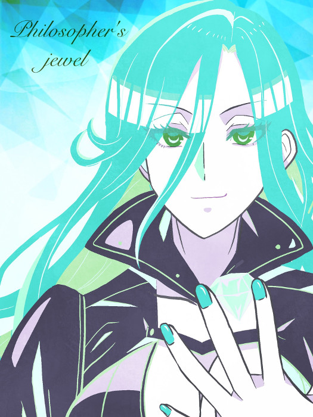
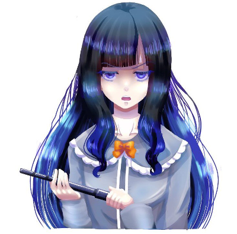
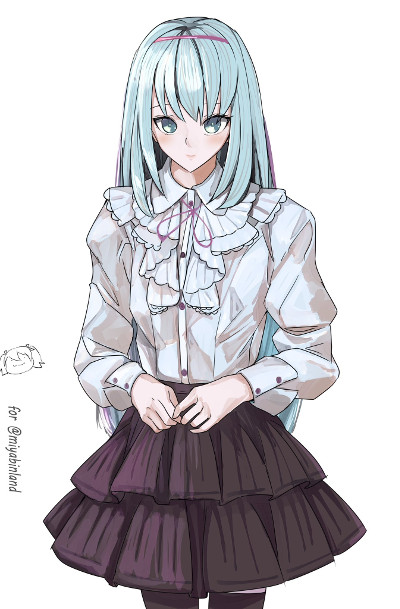
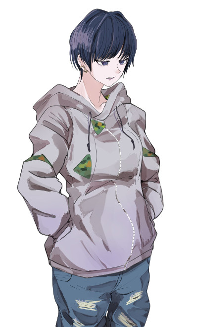
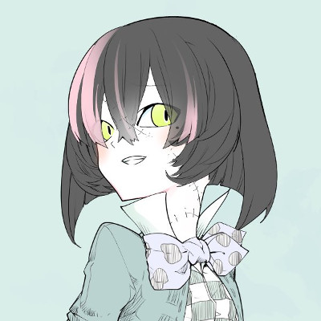
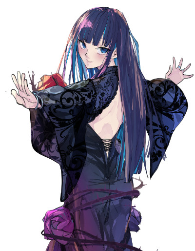

GM : では始めていきます～！自己紹介からどうぞ！
レナ : はい！

■PC1：レナ・エーデルシュタイン
ロイス:ハッピー・バースデー 推奨感情:好奇心/不安
カヴァー/ワークス:指定無し/UGN関係者であること
あなたはUGN職員を襲撃していた"アン・バースデー"深月藍歌と交戦していた。
あと一歩で彼女を仕留められようとしたその時、彼女は遠距離から注射器を打ち込まれ、苦しみながら路地裏に引き下がって行った。
だが彼女が裏路地にしかし姿を消したその数十秒後、裏路地から飛び出して来た少女があなたに助けを求めてきたのだった。
レナ : レナ・エーデルシュタイン、コードネームは賢者の宝石。FHのせいで全身が賢者の石で出来たレネゲイドビーイングに変えられたUGNエージェントです。
レナ : 見た目は金髪ロング碧眼ドイツ人で、元モデルなので顔やスタイルがよろしいです。
レナ : シンドロームはモルフェウス/エンジェルハイロゥの射撃型。自分の体から零れた宝石を弾丸にして撃ちます！
レナ : 以上で！
GM : サンキューレナさま！では次いける人！
■PC2：アレン・ガステール
ロイス:アン・バース 推奨感情:執着/敵愾心
カヴァー/ワークス:指定無し/FH関係者であること
束の間の休日を過ごしていたりいなかったりしていたアナタに声がかけられる。
彼女が言うには、FHに入る為に近くのセルまで案内して欲しいとのことだ。
ドライでどこか冷めた雰囲気をしている彼女が何故FHに入りたいのかは不明だが、ひとまず彼女を連れて行くことにした。
アレン・ガステール : アレン・ガステール、オーヴァードの肉を解体して食肉として売ることを生業とするFHエージェントの英国人カニバリストです。
アレン・ガステール : 身長190cm、白髪、金色の瞳、土気色の顔に右目の周囲に火傷跡のある少し不気味な風貌のお兄さんです。今は火傷跡のある目の方に眼帯をしてます。
アレン・ガステール : シンドロームはサラマンダー/モルフェウス。バラキエルを振り回す白兵回避両立型です。
アレン・ガステール : 悪い子は解体して食べます、冗談です。
GM : 長身英国紳士のお兄さん、ヨロシクオネガイシマス…🍖 では次のPC！
■PC3：鳴海月
ロイス:"ビーストテイマー" 推奨感情:傾倒/嫌悪
カヴァー/ワークス:指定無し/指定無し
最近、オーヴァードを見境なく襲撃する事件がN市では多発している。
この事件の襲撃者は"ビーストテイマー"と名乗る元FHの女だ。
しかし彼女が何故オーヴァードを襲っているのか理由は不明であり、意図が読めない。
そして"ビーストテイマー"のアジトを暴いたアナタはそこへ乗り込むこととなった。
鳴海 月 : 凝固した血のような赤と黒に統一されたドレスを身にまとい、二股に分かれた特徴的な帽子を被った少女が、操り人形のようにぎこちなく一礼する。
鳴海 月 : 「この道化を舞台に上げようだなんて、なかなか酔狂な客も居たものなのだ」
鳴海 月 : 「私の名前は鳴海月。上から読んでもナルミルナ、下から読んでもナルミルナ。覚えやすいから覚えていくといいのだ」
鳴海 月 : 「職業は……あちこちのサーカスを渡り歩いている、しがない道化師なのだ。そっちの世界では"愚者(ザ・フール)"とか"マスターアルカナム"とか呼ばれているのだ」
鳴海 月 : 「でも、私のことをそう呼ぶ奴は、たいていヤバい仕事を持ってくるか……私の首を狙ってるかのどちらかなのだ」
鳴海 月 : くるりと身体を回転させ、スカートが舞うと、その下に隠された二振りの暗器が鈍く光を反射した。
鳴海 月 : 「さて、君はどちらなのだ？」
鳴海 月 : 謎のFHチルドレン、鳴海月(なるみ・るな)、コードネームは”愚者(ザ・フール)”！ピエロなウロボロスとエンジェルハイロゥのクロスブリードなのだ
鳴海 月 : FHの元実験体でいろいろあって施設から脱走してきたまさかの欲望：逃避持ち
鳴海 月 : データは最強の一振りでキーンナイフを2本振り回すオーソドックスなアサシンだ。申し訳程度に支援もできるよ。仲良くしてね！
鳴海 月 : 悩みがなさそうな生き方してるけど幸せとは何か？自由とは何か？そんなことを考えている複雑なお年頃です。
GM : じつは悩んでるなるなちゃん…ありがとう！最後は天津社長！
天津 秤 : あい！
■PC4：天津秤
ロイス:"プランナー"都築京香 推奨感情:尽力/敵愾心
カヴァー/ワークス:指定無し/指定無し
ある日アナタの元に"プランナー"都築京香が訪れる。
巷を騒がせているオーヴァード襲撃事件、この事件の裏にはとてつもない存在が糸を引いていると言う。
この事件を解決するためにはUGN・FH両組織が手を組む必要があるかもしれないとも。
都築京香自身も最大限協力すると宣言し、アナタの元から立ち去っていった。
天津 秤 :
天津秤。コードネームは【審問官（リブラ・オーディター）】。
紀元前4000年頃から生きる天秤のレネゲイドビーイング。
表の顔は医療器具・製薬会社を束ねるメディアの露出も多い年齢・性別不詳のカリスマ社長！
天津 秤 : 「おはよう、そして初めまして。君が…オーヴァード枠として入社した新入社員君だね？私が、天津コーポレーション代表取締役の天津秤だ。」
天津 秤 : 「そちらの世界では【審問官（リブラ・オーディター）】の名で通っているよ。名前負けも良いところだけどね。」
天津 秤 : 「現在、オーヴァードの世界には大きく3つの勢力が存在する。UGN、FH、ゼノス。この3つの組織を俯瞰し、バランスを見極め、その上で人類の発展に必要不可欠な医療技術の進歩を促す。」
天津 秤 : 「それが私…ひいてはこの会社の、秘された目的だ。一緒に頑張っていこうね。」
天津 秤 : 以上！
GM : 素晴らしい思想ですわね…ありがとうありがとう！
GM : 登場キャラはレナ様！
レナ : 1d10+37 (1D10+37) ＞ 9[9]+37 ＞ 46
GM : では導入！
GM : 時間は夕暮れ時の街中、あなたはUGN職員の一人を少し離れた距離から追跡していた。
GM : それは誕生日のUGN職員を襲撃するというFHエージェント、"アン・バースデー"深月藍歌が現れることを踏んでのことだ。
GM : そしてそのUGN職員が人気の少ない道に入り込むと、UGN職員の前に彼女が姿を現した。
レナ : 「……！」 物陰からそちらを見ている
深月藍歌 :
「アンハッピバースデートゥユー……はあ、なんか出てくるのは知ってたって顔ね。」
職員の前で溜息をつく
深月藍歌 :
「まあいいわ、あんたが苦しむ様を見られればそれで良いから…」
青白い電流を迸らせながら彼に近づいていく…
レナ : その瞬間、宝石の弾丸が飛んでくる！職員を守るように放たれた宝石に、アン・バースデーは足を止めざるをえない。
深月藍歌 :
「っ！…来たわね、"賢者の宝石"……」
弾丸が放たれた場所に目をやる
レナ : 「逃げて……！こいつの相手はわたしがするから」 銃口をアン・バースデーに向けながら、職員の前に出る
UGN職員 :
「た、助かる！」
そうしてこの場から逃げ去っていきます
深月藍歌 : 「ふんっ……こんにちは、"賢者の宝石"…いつも精が出るわね？」
レナ : 「お前がいつまでも人の誕生日を呪うのをやめないからだ」 職員が逃げたのを確認しつつ
深月藍歌 :
「あらごめんなさい？でも私の趣味だから、当分やめるつもりはないわ」
手をひらひらと振って茶化す
レナ : 「だろうな」 まつ毛を伏せて
レナ : 「……だが、お前が本当にやめるつもりが無いのなら、覚悟はしてもらおうか」
レナ : 「アン・バースデー……。もうこれで最後にしよう。お前は、ここでわたしが討滅する」
深月藍歌 :
「そのセリフも聞き飽きたわ……。ええ、あんたこそ…今日で終わりにしてあげるっ！」
迸る電流を解き放ち、あなたの周りに巻き散らす
レナ : 「……っ！！」 咄嗟に後ろに跳び、電流を直撃寸前のところで避けつつ
レナ : 金色の髪から零れ落ちた宝石を銃に装填。色鮮やかやな弾丸をアン・バースデーに次々に発射する！
深月藍歌 : 「それも見飽きたわ…！」警棒で弾丸を弾き、徐々に距離を詰めていく
レナ : 「もう何度もやってるからな……っ！！」
深月藍歌 :
「それもそう…ねっ！」
いつの間にかあなたの眼前に迫っていた"アン・バースデー"が青白き一閃を繰り出す
レナ : 「……！」 距離を詰めて放たれたその一閃を回避することは出来ない。青い雷の一撃はレナを捉え……
レナ : 「……だったら、そうだな」
レナ : ……たかに見えた、が。アン・バースデーの警棒は、レナの右腕で防がれてしまっている。
深月藍歌 : 「なっ…！？」渾身の一撃を塞がれ、動揺を見せる
レナ : それは透明の宝石と化した腕だ。強固なダイヤモンドでダメージを軽減されている！
レナ : 「これなら……まだお前にも見せたことが無いだろう……！！」
レナ : そのまま宝石の腕が光り輝く。強烈な熱波と共に、レナの腕から虹色に煌く光線がアン・バースデーへと放たれた！
深月藍歌 :
「───ッ！！」
そのカウンターを予期できなかった彼女はその光線をまともに食らい、衝撃で吹き飛ぶ
深月藍歌 :
「う、ぐ……」
大きく体勢を崩し、身体を起こそうとする
レナ : 「…………」 負荷のかかった右腕をだらりと下げながら、銃を左手で構えて近付く
レナ : 「……これでもう、決着だ。アン・バースデー」 相手を見下ろしながら銃口を突き付ける
深月藍歌 :
「……っ、そう…ね……あんたの手で終わらせられるなんて、本望でしょうね……」
微かな笑みを浮かべる
深月藍歌 :
「……どうしたの、早く引き金を引きなさいよ。もう終わりなんでしょ？」
悟ったような表情であなたを見上げる
レナ : 「……あぁ。言われるまでもない……！」
レナ : レナの足下から、周囲の地面が宝石に変わっていく。それは賢者の石の力を解放する合図だった。
レナ : アン・バースデーに確実にとどめを刺すために。長く続いていた因縁の戦いに終止符を打つために。
レナ : レナ・エーデルシュタインは必殺の一撃を放とうとする。
レナ : 「…………」
レナ : ……が、いつまで経っても弾丸は発射されなかった。すでに攻撃のチャージは済んでいるというのに。
レナ : 「………………っ」 そこから動き出すことが出来ず、青く煌く宝石の瞳にアン・バースデーを映したまま
GM : あなたが躊躇しているその隙を狙われたのか、『パシュッ』と何かを撃ちだした様な音が響く。
深月藍歌 :
「ぁぐっ…！？」
どうやら狙いは"アン・バースデー"だったようで、彼女の首元に小型注射器が刺さっている。
レナ : 「……えっ」
レナ : 「な、何……っ」 突然のことに驚き、その拍子にチャージした賢者の石の力は消えてしまう
深月藍歌 :
「こっちが…聞きたい、わよ……っ」
首元の注射を引っこ抜き、ふらふらと立ち上がる
深月藍歌 :
「ハァ…ハァ…、チッ……水を差された、わね…」
あなたと距離を取る
レナ : 「他のエージェント、か……？いや、でも誰かが来るなんて……」
レナ : 「……！ま、待て、アン・バースデー……！！」 周囲を警戒して距離を取られていることに気付くのが遅れる
深月藍歌 :
「勝負は、お預けよ…！次、あったら……容赦しないから……」
怪しい足取りのまま、彼女は裏路地へと消えていきます
レナ : 「……っ、逃げるな……！次なんて……次なんて、無いんだ……！！」 自分に言い聞かせるように叫び、追いかけようとするが
レナ : 何故かその足は動かない。追跡しようと思っても、一歩も踏み出すことが出来なかった。
レナ : 「…………」
レナ : 「（恐れている、のか……。アン・バースデーを……。あいつを殺すことを……）」
レナ : 「……藍歌……わたしは……」 小さく呟く
GM : あなたがそこで足踏みしていると、"アン・バースデー"の入っていった路地裏から小さな人影が飛び出してきた。
レナ : 「っ！」 気配を感じ、すぐに顔をあげてそちらを見る
 ハッピー・バースデー :
「レ……そ、そこのお姉さん！こっち、こっちに来て！早く！」
そこには身長は140cm程度だろうか、路地裏には似合わないフリルをあしらった服装の少女がいた
レナ : 「……！？だ、誰……だ……？」
ハッピー・バースデー : 「私にも何だかよくわからないから！お願い、早く！」あなたを顔を見上げて、路地裏に引っ張っていこうとする
レナ : 「ちょ、ちょっと……！」
レナ : 「（敵意は……感じない？今は状況を確認するのが優先か……？）」
レナ : 困惑しながらもそのまま引っ張られて路地裏についていこう。
GM : では少女に急かされるまま裏路地へ入ると、そこには2つの人影があった
GM : 薄暗くて識別はしづらいが、1つは傷つき倒れた"アン・バースデー"と思われるもの、もう1つは獣のような爪を今にも倒れた彼女に振り下ろそうとするものであった。
レナ : 「……っ！？止まれ！！」 咄嗟に銃を構え、爪を振りかざす者に叫ぶ。それでも止まらないようなら躊躇なく引き金を絞ろう
GM :
「チッ…！」
あなたの存在に気付いた影は素早く飛び上がり、路地裏の壁を蹴ってその場から逃げ去ります。
ハッピー・バースデー :
「も、もう行った…？」
あなたの背中に隠れている
レナ : 「……えぇ。もういないわ」 安心し、銃を降ろす
ハッピー・バースデー : 「良かった……あっ、あっ…引っ付いてごめんなさい…っ」少し距離を取る
レナ : 「いえ……そんなの構わないわ。それより、あなたは？どうしてアン・バースデーと一緒に……？」
ハッピー・バースデー :
「えっと、それは…その……んんん……」
口をまごまごさせて目を伏せている
ハッピー・バースデー :
「あっ、それよりあの…そこに倒れてる人は大丈夫……？」
倒れているアン・バースデーを指して
レナ : 「……？そうね、アン・バースデー」 答えない相手に少し訝し気だが、すぐに指差された方を見て
レナ : 「……おい、アン・バースデー。何を倒れている……逃げるんじゃなかったのか」 近付いていこう
深月藍歌 :
「……ぅ……」
彼女の元へ近づくと、身体は噛み傷と裂傷だらけで、胸部からは血が滴っていた。
レナ : 「やられたのか、今の相手に……。情けないな」
GM :
しかしあなたは違和感を感じる、この程度の傷ならオーヴァードの治癒力でなんともなるはずだ。
だが彼女の傷は一向に癒える兆しがないのだ。
レナ : 「……おかしい」 違和感に気付き
GM : その傷が治らないならばかなりの重症だ。胸部の出血もひどく、このままでは命を落としかねない。
レナ : 「おい……！どういうことだ……！」
レナ : 「この程度の傷、お前ならすぐに治るだろう……！アン・バースデー……！？」 傍で屈み、アンバちゃんを抱き寄せ覗き込む
深月藍歌 :
「ハァ…ハァ…」
気絶してしまっているのか、呼びかけに応えが返って来ない
ハッピー・バースデー : 「あの…あの…！ち、近くに治療できる所とか…」
レナ : 「……っ、ある、が……」
レナ : 「…………」 目をぎゅっと瞑り、一瞬迷った後
レナ : 自分の服の袖を引き裂いて千切り、胸部の傷に巻いて血を止めようと応急処置をする。
レナ : 「いいか、アン・バースデー……別にお前を助けようというわけじゃない……」
レナ : 「お前の傷が治らない状態について、詳しく知りたい……さっきの謎の敵の攻撃が関係しているかもしれないからな……」
レナ : 「今ここで死なれたら困るだけ……それだけだ……っ」 処置を終え
レナ : アンバちゃんを抱きかかえ、立ち上がる。
レナ : 「この人をちゃんと治療できる場所まで連れて行くわ」
ハッピー・バースデー : 「う、うん」
レナ : 「あなた、ついてきてもらってもいいかしら？さっきの状況について、後でちゃんと聞かせてもらいたいの」
ハッピー・バースデー : 「……わ、わかった。信じてもらえないかもしれないけど、ちゃんと話す…」こくり頷いて
レナ : 「…………」 少女を見つめて
レナ : 「本当のことをありのままに教えてくれるなら、ちゃんと信じるわ。……行きましょう、ついてきて！」
ハッピー・バースデー : 「は、はい…！」
レナ : 近くのUGN支部に急いで行きます！
GM : では近くの支部へ……着きました！
GM : 支部の中はなんだかざわめいて忙しそうにしていますが、誰かに話しかければ医務室なり貸してくれます
レナ : 「すみません！重傷者がいて……とにかく、治療をお願いします！」って声かけて貸して貰おう！治療してもらおう！
支部員 :
「またか…そっちが医務室だ、とりあえずベッドに寝かせておいてくれ！」
支部のメンバーが指で示します
レナ : 「はい……！」
レナ : 言われた通り医務室に行ってベッドに寝かせる！
GM : 少しすると治療に長けたエージェントが怪我の治療をしてくれますね。
GM : そしてアン・バースデーの治療が終わった後で、ここの支部長さんがあなたの元へ訪れます。
レナ : 「……よかった」 治療し終わったアンバちゃんを見て小さく呟いたりしてた
支部長 :
「“賢者の宝石”さん、ちょっとお話が……」
ドアをノックした後、顔を覗きこませて
レナ : 「はい……！大丈夫です」 そちらを振り向き
支部長 : 「はい、失礼します。そちらの少女は…FHエージェントですね？こちらの少女はわかりませんが……」アン・バースデーと謎の少女を交互に見て
ハッピー・バースデー : 「……」目を泳がせてもじもじ
レナ : 「えぇ、FHエージェント……アン・バースデーです。ですがこの通り、本来の奴なら自力で癒えているはずの傷が治っていなくて……」
レナ : 「交戦していた正体不明のオーヴァードについて何か手掛かりになるかもしれないと思い、ここまで連れてきました」
レナ : 「この子は……その時現場にいた少女なのですが。まだ、名前も聞いていなくて」
ハッピー・バースデー :
「あの……ﾊｯ…ハッピー、バースデー……ハッピー・バースデーって呼んで……」
後半に連れて声が小さくなる
レナ : 「は……ハッピー……バースデー……？」
支部長 : 「コードネームでしょうか…？ここら辺では聞いた覚えはありませんが…」
ハッピー・バースデー :
「あっあっ、あの…お話は……」
顔を真っ赤にして俯く
支部長 :
「おっと、失礼しました…」
「”賢者の宝石”さん、最近オーヴァードが連続して襲撃されている事件をご存知でしょうか？」
レナ : 「（ハッピー・バースデー……偶然なの？アン・バースデーと、似たコードネームなのは……）」
レナ : 「いえ、知りません。最近はアン・バースデーの相手をしていて……教えてもらえますか？」
支部長 : 「はい、この事件は所属している組織関係なくオーヴァードが無差別に襲われている事件のことです。恐らくアン・バースデーもその毒牙にかかったのでしょう。」
支部長 : 「噛み傷や胸の傷、それらが被害者とも一致します。」
支部長 : 「それで、ですね……この事件を解決するための働きかけが先ほど届いたのです。」
支部長 : 「1つは日本支部長の霧谷雄吾さんから、もう1つは……ゼノスの”プランナー”都築京香からなのです……」
レナ : 「日本支部長だけでなく、プランナーからまで……？」
支部長 : 「はい、どっち付かずの彼女ですが今回はこちらへ付いたようです。ゼノスからの使者を送るとも…」
支部長 : 「なので今回はこの働きかけに応じたUGN、FH、ゼノスのエージェント…この三大組織で事件を解決することになるでしょう。」
レナ : 「なるほど……」
レナ : 「（組織に関係なく襲われるオーヴァード、FHとの協力……ゼノスを交えているとはいえ……）」
レナ : 「似ているな……あの時と……」 自分の小指を見て
支部長 : 「…”賢者の宝石”さんは前例がありましたね。あの時はUGNとFHだけでしたが…今回はゼノスも加わります。どうなるか予想もつきません……」
支部長 : 「そして集合地点に選ばれたのが……この支部なのです、近々移転も行いますしバレてもそこまで痛手ではありませんからね。」
レナ : 「そうだったのですね……」
レナ : 「……その今回の任務に、わたしも参加することは出来ますか？」
支部長 : 「ええ、是非とも…！あなたほど心強いエージェントは知りませんからね…！」
レナ : 「ありがとうございます。FHやゼノスについては、少し不安がありますが……」
レナ : 「……アン・バースデーのこともありますから。必ず、この事件を解決してみせます」
支部長 : 「はい、ではお願いします…直にメンバーも集まってくるはずなので、人が揃い次第また声をかけにきますね。」
レナ : 「はい、了解しました」
支部長 : そうして支部長は医務室を出ていきます。
レナ : 「……っと。ハッピー・バースデー、だったわよね？」
ハッピー・バースデー :
「っ、はい…！」
びくっと身体を震わせて
レナ : 「大丈夫よ、そんなに緊張しないで」 少し屈んで、ハピバちゃんと目線を合わせて
レナ : 「自己紹介が遅れてしまったわね。わたしはレナ・エーデルシュタインよ」 安心させるように小さく微笑みかける
ハッピー・バースデー :
「えっと、えっと……はい……」
顔を赤らめ指をいじいじしながら返事をする
レナ : 「ん、よろしくね。……それで、なのだけど」
レナ : 「あなたが知っていることについて、教えてもらっても構わないかしら？」
ハッピー・バースデー : 「知っていることは……その、気づいたら裏路地に居て、爪のやつと狼に襲われて……」
レナ : 「狼？」
ハッピー・バースデー : 「そう、狼……でもきっと普通の狼じゃないと…思う……」
レナ : 「レネゲイドに感染したものかしらね……。わたしが駆けつけた時には見当たらなかったけど、そういうのもいるか……」
レナ : 「他には？その後は何があったの？」
ハッピー・バースデー : 「えっと…その後レナに助けを求めたの…そ、それだけ……」
レナ : 「……え、それだけ？」 信じてくれないかもと言っていたから拍子抜けして
ハッピー・バースデー : 「……ご、ごめんなさい…実は話さなきゃいけない事はたくさんあるんだけど…こ、心の整理がついたら……っ」
レナ : 「そう……。いえ、謝らなくて大丈夫よ」
レナ : 「いきなり知らない場所にいて、オーヴァードに襲われて……怖かったでしょう？」
ハッピー・バースデー : 「ううん…ちょっと怖かったけど、レナがすぐ近くにいる……気がしたから、そんなに怖くなかったよ。」途中で言葉を詰まらせて
レナ : 「……？あぁ、助けを求められそうだと思ったからかしら……」
ハッピー・バースデー : 「う、うん…あとえっと……そのね……」
ハッピー・バースデー : 「わ、私を助けてくれて……あ、ありがと…ぅ……」
ハッピー・バースデー : かっかと頬を染めてそう呟く
レナ : 「……ふふっ。どういたしまして。あなたが無事で良かったわ」 嬉しそうに笑みを零す
ハッピー・バースデー : 「えへ、えへ…」笑い慣れてないのか、ぎこちない笑顔を向ける
レナ : 「（何かしら……まだ分からないことばかりな子だし、何を隠しているかも分からないけれど……きっと、仲良くできそうな気がする）」 ハピバちゃんを見つめて
レナ : 「それじゃあ、心の整理が出来て……わたしに話して大丈夫と思えた時が来たら」
レナ : 「その時に教えてもらうわね。それまで、ゆっくり待っているわ。ハッピー・バースデーさん」 微笑みかけながら、優しく相手の髪を撫でる
ハッピー・バースデー :
「わっ…ぁ……う、うん…！」
潤んだ瞳をあなたに向けて、無垢な少女は穏やかな表情を見せた
GM : かくして三大組織と手を組み、オーヴァード襲撃事件を解決することとなった。
GM : しかし“賢者の宝石”も無垢な少女も、この事件の根の深さを知る由もないのであった。
GM : シーンエンド
GM : 登場PCはアレンくん！侵蝕ダイスどうぞ！
アレン・ガステール : 1d10+33(1D10+33) ＞ 2[2]+33 ＞ 35
アレン・ガステール : アレン・ガステールは休暇を使い、FHの戦闘員としてではなく、“解体屋”としてこの街を訪れていた。
アレン・ガステール : ｢(今日のは中々だったな……まあ、俺が直々に用意した品だ、当然と言えば当然だが)｣
アレン・ガステール : 上客との“食事会”を済ませたあと、切らしてしまった酒類を買い足そうと繁華街の方へと向かう。
アレン・ガステール : 彼はそれらの用事を済ませてすぐに東雲へと戻るつもりでいた。
アレン・ガステール : ｢(しかし、UGNの野郎共を追い返してからはまたとんと暇になっちまって……)｣
アレン・ガステール :
｢…………足りねぇな｣
そうポツリと呟くと、右の手首についたブレスレットがそれに答えるようにシャラリ……と音を立てて揺れた。
アレン・ガステール : 白い息を小さく吐き出すとそのまま足早に歩みを進めていく。
GM : ではそんなあなたの背後から、随分と冷ややかと思わせる声がかけられます。
アン・バース : 「ねえ、そこの…あんたFHの人間でしょ？」
アレン・ガステール :
「…………」チラッと後ろを見て
「……さて、何のことだか。俺には嬢ちゃんみたいな知り合いがいた覚えはないが」
アレン・ガステール : 「(FHと知って声をかけてくる。UGNの手合いか、それとも……)」
 アン・バース :
「あ…？とぼけないで、どうみてもあんた…アレン・ガステールでしょ？」
チラリと振り返ると、パーカーのポケットに手を突っ込み冷めた視線を向ける女性がそこに立っていた。
アレン・ガステール :
「(……名前まで知ってるときた)」
「ハッ、俺が“FH”のアレン・ガステールだとして……何の用だ？」
アン・バース : 「…始めに言っておくけど、今はあんたと敵対する気とかさらさらないから。そんな殺気立てなくても大丈夫よ。」
アン・バース :
「……用は単純明快よ、私をFHへ入れて欲しい。ただそれだけ。」
少し目を泳がせて
アレン・ガステール :
「あ……？」右手首に伸びかけた手を止めて
「FHに入りたい……だァ？」怪訝な顔をする
アン・バース :
「何か不満でも？」
不機嫌そうな声色で返す
アレン・ガステール :
「…………どう考えても怪しいだろ、アンタ」
「俺のことをどこで知った？」振り返って見下ろすように
アン・バース : 「これでも情報通なの、大体のオーヴァードには目を通してるつもり。誕生日までは把握してるわ。」
アレン・ガステール : 「へぇ……そりゃあ、いい趣味してんな」面倒くさそうな顔をして
アレン・ガステール : 「(いったい何なんだこいつァ……霧の魔女がいたら喜んで連れて帰りそうだが……)」
アレン・ガステール : ｢……ハァ、じゃあついでに教えてやる。俺はFHの戦闘員で勧誘は専門外だ｣ガキは家に帰んなと言わんばかりの顔で
アン・バース :
「スカウトって雰囲気じゃないものね、それを言ったらあの金髪オールバックもアレだけど。」
ふっと鼻を鳴らして
アン・バース : 「なら近くのセルに送ってくれるだけで良いから。ここら辺にないの？」
アレン・ガステール : 「……しつこいな、嬢ちゃん」
アレン・ガステール : 「いや、待て……そうだな」少し黙り込んで
アン・バース : 「何？どこにあるか思い出した？」
アレン・ガステール : 「(こいつは敵対する気は無いと言っている。万が一それがブラフならそのときは……)」
アレン・ガステール : 「……首を落とせば済む話だな」小声でそう独りごちて
アレン・ガステール : 「ああ、この近くにあるFHのセルを知っている。……送っていくだけだからな」肩を竦めて
アン・バース : 「ん、それでいいのよ」
アレン・ガステール : 「偉そうにするな、偉そうに。」
GM : では不審な少女を連れて近くのセルへ。
GM : あなたが思い当たったのは地下に拠点をおくセルであった。ひんやりとして薄暗く、ひっそりと活動するにはとても適した場所だ。
GM : そしてこの地下通路には隠された入口があり、そこがセルの出入り口である
アレン・ガステール : 「着いたぞ、ここだ」
アン・バース : 「日陰者にはぴったりな場所ね、嫌いではないわ。」
アン・バース : 「へえ、こんな所に…」
アレン・ガステール : 「ハッ、日陰者か……言ってくれるねぇ」
アレン・ガステール : 「……今更だが、嬢ちゃん。アンタ名前は？」
アン・バース : 「私？私は……」
アン・バース :
「アン、バース……アン・バースよ。」
少しの間の後に答える
アレン・ガステール :
「アン・バース？」
「……そうか」
コードネームか、どちらにしろ本名じゃなさそうだなと考えつつ
アレン・ガステール : 「……アンタ、本当にここでいいんだな？」
アン・バース : 「？何よ、鬼でも棲んでるの？」
アレン・ガステール : 「鬼か……そうだな」アレンは右手首についたブレスレットを外す
アレン・ガステール : 次の瞬間、ダンッという音ともにアン・バースはアレンの腕で乱暴に壁へと縫い止められる。
アン・バース :
「がっ…！？」
咄嗟のことに反応ができない
アレン・ガステール : そして骨で出来た蛇腹状の剣が首に宛てがわれている。
アン・バース : 「……ッ、何…心変わりでも、した…？」
アレン・ガステール : 「……いいや？だが、もう一つ教えてやりたいことがあったのを忘れていてな」
アレン・ガステール : 「アンタは知らずに声をかけたかもしれないが、俺のコードネームは“解体屋”。オーヴァードの肉を解体して商品にする、そして自らもそれを喰らう正真正銘の食人鬼だ」
アレン・ガステール : 「嬢ちゃんが今から入ろうとしている場所はそういった“欲望に正直なやつ”がわんさかいる場所だ……それでもこの先へ進むか？」試すように
アレン・ガステール : 「……引き返すなら、街まで送ってやる」
アン・バース :
「へえ…鬼にも優しさがあるのね…」
「でもそんな施しは受けないわ、私にはやるべきことがある…。それを成すまでは廃れる訳にいかないのよ…っ」
骨の蛇腹剣を素手で少し押し返して
アレン・ガステール :
「……はーん」訳ありか……と心の中で
「ああ、そうかい。そいつァ仕方ないな」
アン・バース : 「…わかってくれた？ならこれ、どかしてくれる？」
アレン・ガステール : 「……おう、悪かったな」そう言ってバラキエルをテクスチャーチェンジで再び鎖状にして手首に巻く
アレン・ガステール : 「詫びと言っちゃなんだが、セルリーダーに話をつけてやるよ」付いてきな、と奥へと進んでいく
アン・バース :
「今の乱暴はそれで帳消しにしてあげるわ」
アレンくんについていく
GM : 扉を開けてセルに入ると、最初に目に入って来たのは受付のデスクであった。
GM : しかし受付の係の者はおらず、デスクは空っぽだ。よく見てみれば呼び鈴が設置されている。
アン・バース : 「誰もいないんだけど…」
アレン・ガステール : 「……ああ、そうだな」肩を竦めて
アレン・ガステール : 「おい、邪魔するぞ 誰かいるか！」中まで入り込んで呼び鈴を鳴らす
GM : 呼び鈴を鳴らすと、奥からカシャカシャと金属が擦れ合うような音を立てながら声が聞こえてきます。
??? :
「ゴメンナサーイ チョット セキ ヲ ハズシテマシタ」
合成音声のような声を出しながら近づいてきたのは…
お手伝いロボ :
「ドーモ、ナニカ ゴヨウデ？」
ロボットだった。
アレン・ガステール : 「お、おう」やや面食らった顔をして
アン・バース :
「……ロボットだ。」
同じく面食らって
アレン・ガステール :
「ロボット、だな……」
「あー……新しくFHに入りたいというやつを連れてきた。セルリーダーはいるか？もしくは他にこの手の話がわかるやつでもいい」
お手伝いロボ :
「アー イマスイマス イマ レンラク シマスネ」
頭部に手を当てて、恐らく連絡らしきことを行う
お手伝いロボ : 「ショウグン オトコ ト オンナ ノ オキャクサン ガ キテマスヨ。 トオシテモ イイカンジデ？」
アレン・ガステール : ほんの少しだけ不安を覚えながらも黙って待っている
お手伝いロボ :
「……イマカラ コッチニ クルミタイデス。 ソレジャア ジブン ハ コレデ…」
いそいそと立ち去ろうとする。
GM : ロボットが再び奥の部屋へ入ろうとすると、ガシャンガシャンとけたたましい足音を立てて何かが近づいてくる
アレン・ガステール :
「セルリーダーが来るんだな？」
「おう、ありがとさん」その背中を見送ってから
お手伝いロボ : 「ドーモ…アッ ヤベッ」
アレン・ガステール : 「……あ？」次に聞こえてきた更にうるさい金属音に不安が強くなる
GM :
足音の正体が姿を現す。
それは身長が最低でも2mあり、全身をアーマーで包んだロボット？であった。
ジェネラル :
「このポンコツが！わしはジェネラルと呼べと言ってもわからんのか！お前を物言わぬ掃除用ロボットにしても構わんのだぞ！」
真っ先に受付のロボットへ向かって
アレン・ガステール : 「(話には聞いていたが……こいつァまた……)」自分の背丈より大きいそれを見て
お手伝いロボ : 「オ、オタスケェ…」
ジェネラル :
「次はないと思うことだな…おい、何を突っ立っている！さっさと仕事へ戻れ！」
ロボを蹴り飛ばして部屋へ押し込む
アン・バース : 「…職場環境、最悪じゃない？」
ジェネラル :
「…そして、これはこれはご客人。今回はどういった内容で訪問なさった？ん？」
腰を曲げて
アレン・ガステール : 「…………まあ、話してみれば案外ということもあるさ。合わなければうちのセルにでも来ればいい」小声でアン・バースに伝えて
アン・バース : 「そん時はよろしくするわ…」
アレン・ガステール : 「おう、邪魔してるぞ」かがみ込んだジェネラルを前にして
ジェネラル : 「ふん、大方どこぞのセルから荷物でも届けに来たと思っていたが…そうではないのだろう？」
ジェネラル : 「噂に聞く”解体屋”、アレン・ガステールと…そこの女が何をしに来たか…。当ててやろう、戦闘の支援要請だな？」自信満々に
アレン・ガステール : 「……ああ、俺を知っていたかそいつは光栄だが」頬をかいて
アン・バース :
「…………」
相手するのめんどくさいみたいな顔
アレン・ガステール : 「(俺が連れてきたんじゃあ、そう思われても仕方がないか……)」
アレン・ガステール : 「こっちのがFHに入りたいらしくてな、近かったからこのセルに連れてきた」アン・バースを顎で示して
ジェネラル : 「……ゴホン、そうか。滅多に来るものではないからな、”ディアボロス”がその役を担っておるから失念しておったわ…。」
ジェネラル :
「して…貴様がFHに入りたいという女か…。」
上から見下ろして
アレン・ガステール : 「まあ、そうだろうな。頼めるか？」横でその様子を見ながら
アン・バース :
「そうよ、手続きとかあったかしら」
ジェネラルの顔をジッと見つめる
ジェネラル :
「……よかろう、ではそっちの部屋にいろ。色々と準備がある。」
別の部屋へアン・バースを誘導する
アン・バース : 「？こっちの部屋にいればいいの？」
ジェネラル :
「そうだ、わしは”解体屋”と話がある。」
そうして彼女を部屋に押し込んで扉を閉めます
ジェネラル :
「………面倒なものを持ち込んでくれたな、”解体屋”」
アレンくんに振り返って
アレン・ガステール : 「……おっと、そいつはすまない。だがその様子じゃアンタ何か知っているな？」
ジェネラル : 「知っている訳ではない、だがわしの直感が告げておる。あやつはひどく醜い妄執を抱えておるわ。」
アレン・ガステール : 「へぇ、直感ねぇ」さっき自信満々に外していたが、さて……と考えながら
アレン・ガステール : 「醜い妄執を抱えたやつなんざFHにも五万といると思うが」
アレン・ガステール : 「まあ、アンタが嫌なら他を当たるさ」悪かったな、と
ジェネラル :
「…心の内が顔に出ているぞ”解体屋”。」
「そうだ、五万といる。だがその中でも厄介な一点に向けた妄執だ…標的を捉えれば噛みついて死ぬまで離さぬぞ。」
ジェネラル : 「ふんっ、そこらの河川にでも捨てておくといい…捨て犬のようにな。」
アレン・ガステール : 「おっと、顔に出ていたか。解体は得意だが生憎腹の探り合いは苦手でね」肩を竦めて
アレン・ガステール :
「……アア、しかしそいつは……聞いてるだけで面倒そうだな」ふぅとため息をつく
「まあ、俺は手伝いをすると約束しちまったもんで。捨ておくわけにもいかないんだが」やれやれと首を振って
ジェネラル : 「フハハハ…捨て犬を見捨てられず最後まで世話をするような男には見えぬがな…」
GM : そんな雑談をしていると、先程のお手伝いロボが顔を覗かせている。表情は…よくわからないが何か聞いて欲しそうな雰囲気だ。
お手伝いロボ : 「アノー ジェネラル？」
ジェネラル : 「なんだ！仕事はどうした！」
アレン・ガステール : 「まあ、そう猛るなよ。何か話があるんだろう」
お手伝いロボ : 「ヒエー！ ア アノ ホカノ セル カラ レンラク ガ…」
ジェネラル :
「何？それを早く言わんか！」
こめかみ辺りに手を当て、通信を受け取る
ジェネラル : 「わしだ……何、ふざけているのか！そんなとち狂った任務にわしは出るつもりはない！」
ジェネラル :
「あのどっちつかずのゼノスがいる時点で信用ならぬわ！二度とかけてくるんじゃない！」
怒声を発しながら通信を切断する。
ジェネラル : 「ハァ……回路の寿命が短くなるわい……」
アレン・ガステール : 「(ゼノス絡みの任務、ねぇ……)」きな臭いなと思いつつ
アレン・ガステール : 「くく、セルリーダーも楽じゃないな……で、何の連絡だったんだ？」
ジェネラル : 「無差別にオーヴァードを襲撃する事件を解決するため、UGN・FH・ゼノス合同の任務だそうだ……まったく、わしが割ける人員など……」
ジェネラル : 「……いや、丁度いるではないか。入ったばかりの犬が…」
ジェネラル :
「おい、アン・バース！貴様に任務を与える！」
部屋から引っ張り出して
アン・バース : 「な、何…っ？いきなりすぎない？」
アレン・ガステール : 「おい、まさか……」いよいよ面倒なことになってきたと苦虫をかみ潰したような顔をして
ジェネラル : 「貴様はこれから指定されたUGN支部へ行き、そこに集ったオーヴァード共と仲良く手を取り合い事件を解決するのだ！」
アン・バース : とてつもない嫌悪感を顔に出してはいるが、断れそうにない
アレン・ガステール : 「おいおいおい、いくらなんでもハードルが高すぎやしないか？」
ジェネラル :
「ならばお前も付いていけ”解体屋”、最後まで面倒を見てくれるのであろう？」
クツクツと喉を鳴らす
アレン・ガステール : チッとジェネラルに聞こえるように舌打ちをして「いい性格してんなアンタも」と
ジェネラル :
「フハハハ！骨も肉もないわしがお前を恐れると思うなよ？では精々頑張ってくるのだな！」
高笑いを上げながら、ジェネラルはセルの奥へと消えていきます
アン・バース : 「……ふざけたブリキ野郎ね、新人に任せる仕事じゃないでしょ。」
アレン・ガステール : 「クソッ……あのポンコツ野郎、食うところはないし性格も悪いと来た」盛大なため息をついて
アン・バース :
「煮てもオイルと埃しかでないわよアイツ…」
一緒にため息をついて
アレン・ガステール : 「よせ、考えたくもない」
アレン・ガステール : 「……まあ、いい。俺もここ最近FHの方の仕事はめっきりでな……たまには仕事をしないと勘が鈍る」
アン・バース : 「なら丁度良かったわね。トレーニングとでも思えば気持ちは楽になるかしら？」
アン・バース : 「まっ、どうでもいいわ。さっさとその支部に行きましょう。」
アレン・ガステール : 「ああ、そうだな」そう言って踵を返し出入口の方へと向かう
アレン・ガステール : 「(……それに、“いい商品”とお近づきになれることを考えれば悪い話じゃあない……こいつとの出会いは思わぬ幸運、だったかもしれないな)」アン・バースに背を向けたアレンの顔には背筋の凍るような恐ろしい笑みが浮かべられていた
GM :
ということで紆余曲折あり、食人鬼と謎の少女は指定された支部へと向かうことなった。
しかし腹の内に抱える闇は食人鬼だけではない、少女もまた確固たる執念を抱き、支部へ足を運ぶのであった。
GM : シーンエンド
GM : 登場PCはるなちゃん！
鳴海 月 : 1d10+45(1D10+45) ＞ 10[10]+45 ＞ 55
GM : 最近N市では、所属組織関係なくオーヴァードが襲撃される事件が多発している。
GM : 襲撃者のコードネームは"ビーストテイマー"、元FHのエージェントだ。
GM : しかし何故彼女がオーヴァードを襲っているのか不明であり、意図が読めない。
GM : そしてFHの情報網から"ビーストテイマー"のアジトを暴いたアナタは単身乗り込むことにした。
鳴海 月 : 「本当にこんなところに居るのだ～？」
鳴海 月 : カカツンカカツンとテンポよくヒールでコンクリートを蹴るように歩く
鳴海 月 : くるくると踊るように周りながら、360度死角がないか警戒しながら進む
GM : あなたが小気味の良い足音を響かせていると、それに釣られたのか周りから獣の唸り声を耳にする。
鳴海 月 : 「（…猛獣の匂いがするのだ）」
GM : どうやら数匹の獣に囲まれていたようだ。その獣達が瓦礫の影から姿を現す。
鳴海 月 : 「おっと…ちょっと勇み足が過ぎたようなのだ」
鳴海 月 : 「ま、仕方ないのだ。ここは華麗に脱出ショーと行かせてもらうのだ！」
鳴海 月 : 左右の太腿に隠した暗器を瞬時に構える
GM : あなたが戦闘体制に移ると、高台から笑い声を上げながら一人の少女が姿を現す！
鳴海 月 : 「なのだ？」
 ビーストテイマー :
「フッフッフッ、地獄から初めましてデース！ここを見つけるなんて大したもんデスねぇ。名前ぐらい聞いといてあげるデスよ！」
あなたに負けず劣らずなファッションをした少女があなたを見下ろしている。
鳴海 月 : 「なるほど、お前がビーストテイマー…ビンゴ、ってやつなのだ」両手人差し指で指さす
鳴海 月 : 「私の名前は鳴海月。上から読んでもナルミルナ、下から読んでもナルミルナ」
鳴海 月 : 「覚えやすいから冥土でも広めておくと良いのだ」
ビーストテイマー :
「ふんふん、鳴海月デスか。愉快な名前デス……ん……？」
何か思い当たった顔
ビーストテイマー : 「…一応聞きますデスけど、コードネームは何デス？」
鳴海 月 : 「…No. 0『愚者（ザ・フール）』」
鳴海 月 : 「私の居たセルはもう残っていないのだ。その名にもう大した意味はないのだ」
鳴海 月 : 「今は…ただの掃除屋なのだ」ナイフを光らせる
ビーストテイマー :
「”愚者”……ってウゲー！？いわゆる”マスターアルカナム”じゃないデスか！？！？ここここんな大物が釣れるなんて聞いてないデスよ！？」
明らかな動揺を見せる
鳴海 月 : 「（その名で私を呼ぶのは、きっとロクな奴じゃないのだ…！）」眉をひそめる
ビーストテイマー : 「およよよ…！こ、こうなったら当たって砕けろデス…！質には量で対抗するデスよ、ゆけい！ペット共っ！」
GM : 彼女の合図と同時に、あなたと周りで控えていた獣達が一斉に襲いかかってくる！
鳴海 月 : 「さて…君たちに恨みはないけどちょっと寝てて貰うのだ」
鳴海 月 : 頭上に何かを投げる。それは広範囲に光を撒く懐中電灯だ。逆光で月の身体は黒く染まり、影が四方八方に伸びる
鳴海 月 : 次の瞬間、伸びた影から、影と同じ数の月が現れ…目にも止まらぬ刃は獣たちをX字に切りつけた！
GM :
あなたの圧倒的な力の前に獣達は倒れた！
残るは眼前のビーストテイマーのみ、一瞬で手駒を掃討されてかなり焦っているようだ。
鳴海 月 : 左手を胸に当て、獣たちの中心で一礼する。
ビーストテイマー : 「つ、強すぎデース！一体何を食べたらそんな強くなるんデスか！？」
鳴海 月 : 「煮干しなのだ。お前も冥土で毎日食べるといいのだ」
ビーストテイマー : 「ほえ～、覚えておくデス……ってまだ私は死ぬわけにはいかないデスよ！！」
鳴海 月 : 「私は早く依頼を済ませて金を貰いたいのだ。往生際が悪いのだ」
ビーストテイマー :
「こうなったら…私のプライドに関わりますデスけど…！」
「リィィィダァァァァ！！助けてぇぇぇぇ！！」
鳴海 月 : 「それで給料が入ったらかっぱ寿司に行くのだ……リーダー？？」
鳴海 月 : 地面を蹴って、天井の梁をサーカスの鉄棒のようにして掴み、一気にビーストテイマーの場所まで乗り込もうとする
ビーストテイマー : 「ひい～…！せ、せっかく心機一転して甘い汁を啜ろうと思っていたのにぃ…！」
鳴海 月 : 着地とともに両手に暗器を取り、一気にX字に切りつける！
GM : あなたの刃が”ビーストテイマー”を切り裂こうとしたその瞬間、あなたを撃ち抜かんとする銃声が鳴り響く！
鳴海 月 : 「のだっ！」跳躍しながら三回転半、器用に銃弾を避ける
鳴海 月 : 「誰なのだ！？」銃声の方を剥く
ビーストテイマー :
「っ！い、今のうちデース！」
瞬間退場を使い、彼女はこのシーンから逃げ出します。
鳴海 月 : 「あ！！ 待つのだ！！」ナイフを投げるが間一髪間に合わない
GM : 彼女が間一髪逃げおおせると、銃を放ったリーダーと呼ばれた者がどこからか語り掛けてくる。
??? :
「……こんにちは、”愚者”鳴海 月。申し訳ないのですけど、今は彼女がやられる訳にいかないのよね。」
どうやら声の正体は女性のようだ
鳴海 月 : 「お前は…何者なのだ…？」
??? : 「彼女の雇い主、そして……コードウェル博士の理想とする世界へと変える為に働くただのオーヴァードよ。」
鳴海 月 : 「理想の世界……」
鳴海 月 : 「（私には縁遠いものなのだ）」
??? :
「レネゲイドの存在を全世界に知らしめ、その後はコードウェル博士自身が世界を治める……素晴らしい、素晴らしい世界だわ……」
若干熱のこもったセリフを発する
鳴海 月 : 「（こういう奴、研究所にいっぱい居たのだ…）」昔を思い出してる
??? : 「……だから、邪魔しないで貰えるかしら。もうすぐ器選びも終わって、その後は……ええ、私の願い通り……」
鳴海 月 : 「器…？」
??? : 「あなたも十分魅力的だけど、”ビーストテイマー”がしくってしまったから……ええ、諦めます。」
??? :
「それではさようなら、もうすぐ世界は生まれ変わりますよ……フフ、アハハハハ…！」
GM :
笑い声を上げながら、彼女の気配が消えていく。
どうやらこの場から逃げ去ったようだ。
鳴海 月 : 「全然話がわからないのだ…」
鳴海 月 : 「とにかく依頼は失敗してしまったのだな…仕方ない、適当なところにご飯をたかりに行くのだ」
GM : 悲しみに暮れていると、追い打ちをするようにあなたの端末に連絡が入ってきます。なんと依頼主です。
鳴海 月 : 「！」電話を取る
鳴海 月 : 「もしもしなのだ」
依頼主 : 「私だ、”マスターアルカナム”。首尾の方はどうなっている？」
鳴海 月 : 「逃げられたのだ。リーダーとかいう奴の邪魔が入ったのだ…」
依頼主 : 「何？…そうか、お前が失敗するとは珍しいこともあるものだな…。しかし”ビーストテイマー”のバックに付いている者がいるという新しい情報は掴めたな。」
鳴海 月 : 「そうなのだ。とりあえずこの仕事はまだ続けるのだ？」
依頼主 : 「ああ、その事なのだが…少し内容を変更させてもらいたい。」
鳴海 月 : 「のだ？」
依頼主 : 「この事件を巡ってUGN、FH、ゼノスの一部が一時的に協力関係を結ぶことになった。その一部に”愚者”、君も加わってもらいたい。」
鳴海 月 : 「そうなのだ？ 一人でやるよりは楽だし私はかまわないのだが、いきなりいがみ合ってる奴らを集めて大丈夫なのだ？」
依頼主 : 「うむ……この要請に応じるようなヤツは少し癖のある連中だろうが…顔を合わせてすぐ戦闘、ということにはならないだろう…多分。」
鳴海 月 : 「なるほどなのだ。とりあえず了解したのだ」
依頼主 : 「……いや。きっと大丈夫だろう、ゼノスからバランスを象徴するような使者が送られてくるというし、きっとうまく取り合ってくれるはずだ。」
鳴海 月 : 「バランス感覚なら私も自身があるのだ。なんか仲良くできそうなのだ」
依頼主 :
「体幹の話はともかく、了承ということでいいな？集合場所はこのUGN支部だ、頼んだぞ。」
あなたの端末に座標データが送られてくる
鳴海 月 : 「…ということは、UGNの支部に入れるのだ？ あそこは食堂の管理がガバガバだからただ飯にありつけそうなのだ」
鳴海 月 : 鼻歌を歌いながらUGN支部に歩いてこう
GM :
ビーストテイマーとその雇い主の思想、様々な懸念があなたの脳裏をよぎる。
しかし今ある情報では杞憂に過ぎないと思ったあなたは、UGN支部のご飯が美味しいことを願って集合場所に向かうのであった。
GM : シーンエンド
GM : 登場PCは天津 秤社長！
天津 秤 : 1d10+46(1D10+46) ＞ 3[3]+46 ＞ 49
GM : どんよりとした曇り空の午後、あなたは社長室である人物が訪れるのを待っていた。
GM : その人物とは"プランナー"都築京香、滅多に接触してこない彼女の方からアポイントメントを取ってきたのだ
GM : なんとも言えない不安を胸に抱きながら、あなたは時計を見る。そろそろ約束の時間だ。
大形洋二 :
「…天津社長、今日の午後は都築京香様がいらっしゃる予定です。」
あなたの秘書が午後の予定を説明する。
天津 秤 :
「いやぁ、ふふ。我が社がこうして大いに軌道に乗ってからの接触…ウチが奪われたりしてね。」
書類を眺めながら、冗談めかして言う
大形洋二 : 「そういった物ではないとは思いますが……もしそうだとしたらどうするおつもりです？」
天津 秤 : 「そうだねぇ…彼女のことだ。”そう”するなら、私から反発が出ないように手を回すだろう。」
天津 秤 :
「つまり、私がこうしてふと予想できている時点で、無いということだね。冗談冗談。」
手をひらひらと振る
大形洋二 : 「そうでしょうね。ですが…ただ顔を出しにくる訳ではないでしょうし、心構えはしておいた方がいいでしょう。」
天津 秤 : 「ま、そうだね。彼女も雑談しに来れるほど暇じゃないだろうし…持ち掛けてくる話がウチの方針に背いてないと良いけど。」
天津 秤 : 「会合の間のここらへんの人払いはもうしてくれてる？」
大形洋二 : 「抜かりなく、会合の間は人っこ一人近寄ることはないでしょう。スケジュールもそう組んであります。」メモ帖を軽く叩いて
GM : そうした会話をしていると、大形くんの近くにある電話に着信が入ります。
大形洋二 : 「…はい、社長室…。ええ、そのまま通してください。」
大形洋二 : 「社長、いらっしゃったみたいですよ。」
天津 秤 : 「ん、おっけーい。大形君は…席外すよう言われたら外してもらう感じで」
大形洋二 : 「わかりました…しかし、一体どんな話なのか…」
GM : 大形くんが訝しんでいると、早速社長室のドアがノックされます
大形洋二 : 「！…どうぞ、お入りください。」
GM : ドアが開けられると、そこには一見すると社長室には似つかわしくないと思える少女、”プランナー”都築京香の姿があった。
都築京香 : 「こんにちは、”リブラ・オーディター”。このように直接会うのはいつぶりでしょうか。」
天津 秤 : 「ようこそ天津コーポレーションへ、”プランナー”。そうだねぇ…10年かそこらかな。」
都築京香 : 「ええ、確かその程度だったかと……座ってもよろしいですか？今回の私が訪れた理由について説明させていただきます。」
天津 秤 :
「失礼、こちらへ。大形君、お茶お願い」
着席を促しつつ移動
大形洋二 :
「そう言われると思ってもう淹れてあります。こちらをどうぞ。」
テーブルにお茶が並べられる。
都築京香 :
「ありがとうございます。では……」
お茶に口をつける
都築京香 :
「ふう……”リブラ・オーディター”。あなたはオーヴァード襲撃事件についてご存知でしょうか？」
一息ついたのち、話を切り出す
天津 秤 : 「ああ、噂程度には。表立って人が襲われるような事件じゃないから、詳細はあまり。」
天津 秤 : 「ウチも、抱えてるオーヴァードなんて私入れて二人だし…。」
都築京香 : 「噂程度の知識で大丈夫です。しかし私が懸念しているのはその裏で動く存在についてなのです。」
都築京香 : 「”ビーストテイマー”の存在、これは省いてもいいでしょう。私が目をつけたのは被害者達の似通った傷についてです…」
都築京香 : 「私の杞憂で終わればそれで良い事案なのですが、常に最悪の事態に備えたプランを用意しておかなければなりません…。」
都築京香 : 「その為に”リブラ・オーディター”、私はあなたの力を必要としているのです。」
天津 秤 :
「なるほど。……話が見えてこないけど…具体的には？」
人当たりの良さそうな顔を浮かべてはいるが、懐疑的であることは見て取れる
都築京香 : 「…この事件を調査、解決するためにUGN・FHに対して一時的な協力関係を結ぶように要請をかけました。もちろんゼノスもこれに参加します。」
都築京香 : 「…つまりはあなたにはゼノスの使者としてこの作戦に参加し、組織間のバランスを取って欲しいという事なのです。」
天津 秤 : 目を閉じ、組んでいた膝に手をやって少し考える。
天津 秤 : 「なるほど。君がそう判断したのなら、三組織の協力は必要なことなんだろう。適当な役割も与えてくれているみたいだし…」
都築京香 : 「受けてくださる、ということでよろしいですか？」
天津 秤 :
「もちろん。それが”プラン”に必要なことなら私は喜んで受けよう。元々断る気はあまり無かったしね♪」
微笑んで、手を差し出す
天津 秤 : 「知っての通り、私の願いはヒト、オーヴァード、我々の融和。君の”プラン”は、着地点自体はそうでなくとも、私の夢の一助にもなる」
都築京香 :
「ありがとうございます、期待通りのお返事でしたね。」
あなたの手を握り、感謝の言葉を述べる
都築京香 : 「……ですがお気をつけて、もし私の不安が的中していた場合……世界のバランスが壊れかねないかもしれません。」
都築京香 : 「その為に私は各方面への協力要請、情報収集を続けます。何かあれば私へ直接ご連絡ください。」
天津 秤 : 「世界のバランスとはまた随分と…ふん…連絡手段は何で？」
都築京香 :
「こちらの番号に連絡して頂ければ」
メモ用紙に書かれた番号を渡されます
天津 秤 :
「確かに。………協力してくれる子っていうのは？」
番号を確認した後に細かくして捨てつつ
都築京香 : 「私が知りうる限りではUGNから1人、FHから3人…今のところはこれくらいでしょうか。あなたを含めて5人ですね。もしかしたら増えるかもしれませんが…」
天津 秤 : 「これはまた揉めそうな…柔軟な子だといいんだけど」
都築京香 :
「その為のあなたです。どうか彼らの仲をバランスよく保ってあげてください。」
僅かに微笑む
天津 秤 : 肩をすくめる
都築京香 :
「…では私はこれで失礼します。良い返事が聞けて大変嬉しかったですよ。」
席から立ち上がって
都築京香 :
「……ああ、そうでした。この作戦の集合地点ですが…とあるUGN支部に集まるようです。場所は……」
もろもろ説明されました！
天津 秤 : ほい！
都築京香 : 「それでは、またお会いしましょう。”リブラ・オーディター”、作戦がうまくいくことを願っています。」
天津 秤 :
「お互いに良い結末を迎えられるように尽力しよう、それじゃぁ。」
手を振って社長室から見送ろう
大形洋二 :
「私が外まで送っていきますね。」
大形くんと一緒にプランナーが退出しました。
天津 秤 : 大形と都築の足音が遠くなる。審問官にはあまり似合わない、静寂が訪れる。
天津 秤 : 「天秤は本来、重さを比較するだけのもの。1と3を平らにするなんてとてもとても。」
天津 秤 : 「でも、だからこそ。自我を持つ天秤たる私が、平定してみせようか。」
天津 秤 :
「大形君に仕事投げなきゃ…」
書類をまとめ始めて終わり！
GM : "プランナー"が示す不安の種、それは世界のバランスを崩す程の力を持つという。
GM : しかしそれでもあなたは世の平定を保つために、指定された支部へと向かうのであった。
GM : シーンエンド
GM : 登場PCは全員！
レナ : 1d10+46(1D10+46) ＞ 9[9]+46 ＞ 55
アレン・ガステール : 1d10+35(1D10+35) ＞ 6[6]+35 ＞ 41
鳴海 月 : 1d10+55(1D10+55) ＞ 2[2]+55 ＞ 57
天津 秤 : 1d10+49(1D10+49) ＞ 3[3]+49 ＞ 52
GM : あなた達は各々の働きかけにより、この事件を解決するために指定されたUGN支部に集まることとなった。
GM :
前例があるとは言えUGNとFH、更にはゼノスまでもが手を取り合うとは異例な事態だ。
何とも言えない空気感の中、あなた達は支部へと集っていくのであった。
レナ : UGN支部の集合場所に指定された部屋で、レナは適当な椅子に腰かけていた。
レナ : 「……そろそろ来てもおかしくない時間か」
レナ : 脚を組んだまま腕時計を見て呟く。リラックスしているようで、しっかりと警戒しながら扉が開かれるのを待っていた。
ハッピー・バースデー : 「どんな人が来るのかな…」
ハッピー・バースデー : 椅子に座ってそわそわしながら扉とレナを交互に見ている
レナ : 「わたしもまだ聞かされていないから分からないわ。……妙なことを考えている奴じゃないといいんだけれどね」
ハッピー・バースデー : 「いきなり襲ってくる人もいるかもだし……で、でもレナがいるから、きっと大丈夫よね……」
レナ : 「えぇ、大丈夫よ。もし危ないとか、少しでも怖いと感じたらわたしの後ろに隠れるといいわ」
ハッピー・バースデー :
「あ、ありがとう……えへ……」
紅潮した顔を隠すように俯いて指をいじる
レナ : その様子に微笑みかけながら、手の中には≪テクスチャーチェンジ≫で小さな宝石に変化させた銃を握りしめている。いつ何が起こってもすぐに対応できるように……。
アレン・ガステール :
扉の前までアン・バースと共にやって来て
「こんな厄ネタに乗るやつは相当使命感が強いか気が触れているとしか思えないが……さて、何が待ち受けているのやら」
アン・バース : 「私を突き放さないで一緒にくるアンタはどっちなんでしょうね。まあ、厄ネタなのは間違いないわ。」
アレン・ガステール : 「ハッ、俺が使命感で付いてくるような男に見えるか？」挑発するように
アレン・ガステール : 「実は、嬢ちゃんのことを切り刻んでスープに入れるため……だったりしてな」くくと笑って
アン・バース : 「私を殺す気なの？……ふん、私のやりたいことが終わった後なら煮るなり焼くなり好きにすればいいわ、文字通りね。」
アレン・ガステール : からかいがいのないやつだなと肩を竦めて
アレン・ガステール : 「ジェネラルから依頼を受けてきたものだ、入るぞ」そう断って扉を開ける
アン・バース : 「どうも」愛想のない一言と一緒に入室
レナ : 「……！来たな。……FHか」 そちらを見て
アレン・ガステール : 「ほう、こいつァ……」中にいる2人のことを品定めするように眺める
レナ : 「なんだ、来るなりこちらをジロジロと見て……」
アレン・ガステール : 「いいや……なんだ、えらく別嬪な女が待っているものだから部屋を間違えたのかと思ってなぁ？」鋭い歯をチラつかせて笑う
レナ : 「FHに口説かれたところで嬉しくも何ともないな。部屋ならここで合っているが」 立ち上がって
アレン・ガステール : 「まあ、そう邪険にするなよUGNの」
アン・バース :
「………！」
レナのことを視認した瞬間、彼女が険しい顔をした気がする。
レナ : 「……？お前は」 アンちゃんを見て
レナ : 「（何か……アン・バースデーと似ているような、面影を感じるような……気のせいか？）」
アン・バース :
「…いいえ、別に……」
眼を逸らして、ハッピー・バースデーに顔を向ける
ハッピー・バースデー :
「……っ、ど…どうしてここに…」
その視線から逃れるように、レナの後ろへと逃げる
レナ : 「……大丈夫？」 はぴばちゃんを心配そうに
ハッピー・バースデー :
「う、うん…っ」
あなたの背中から顔を覗かせて、アン・バースの方を見つめる
レナ : 「……？そう、無理はしちゃだめよ」 一応後ろにちゃんと隠して
アレン・ガステール : 「……どうした、知り合いでもいたか？」アン・バースに
アン・バース :
「チッ……まあ、ちょっとね……」
殺気の入り混じった嫌悪感を示し、レナとハッピー・バースデーから一番離れた壁に移動し、寄りかかる
鳴海 月 : 扉の向こうからハスキーな高音で上機嫌に歌う声が聞こえてくる。
鳴海 月 : 「サカナサカナサカナ～、サカナ～を食べ～ると～」
鳴海 月 : 「カラダカラダカラダ～、カラダ～にいい～のだ～♪」がちゃりとドアを開ける
鳴海 月 : 「おお、随分賑やかなのだ」一行の様子を見て
レナ : 「…………。なんだ、その歌は」 呆気に取られて
ハッピー・バースデー : 「ご、ご機嫌な人が来たね……」
アレン・ガステール : 「……どうやら、やはり気が触れているやつらばかりらしいな」後ろを振り返り、ルナの姿を確認する
鳴海 月 : 「これは全国のスーパーの鮮魚コーナーで毎日流れてる大ヒットソングなのだ。覚えやすいから覚えておくといいのだ」
レナ : 「いや、そういうことでは……。まあ、いい」
レナ : 「（めると似たようなタイプかもな……）」
アレン・ガステール :
「……ハァ」
「アンタ……ゼノスから来たっていうやつか？」浮世離れしたやつが来たなと思いながら
鳴海 月 : 「ゼノス？ 知らないのだ。私は雇われてここに来ただけなのだ」
アレン・ガステール : 「……ん？違ったか、まあいい」
鳴海 月 : 「お前たちも例の任務のために方々から集まったのだ？ よろしく頼むのだ」
ハッピー・バースデー : 「よ、よろしく……」会釈
レナ : 「じゃあこいつもFHか。……あぁ、そうだ。まだあとゼノスからも来るから、その辺に座っておけ」 適当な椅子やソファを示して
鳴海 月 : 「よろしくなのだ～」どこから見つけてきたのかバランスボールの上に座る
アン・バース :
「………」
ちらりとルナを横目で見てすぐ視線を逸らす
レナ : 「そんなものあったのか……」
アレン・ガステール : 「ああ、そこのと一緒にFHから派遣されてきたものだ」ルナの変わりにソファに腰をかけながら
天津 秤 : その時、ドアをノックする音が響く
天津 秤 :
「失礼、お邪魔するよ。」
中の様子を窺うように、金髪に中性的な顔立ちの人物が入室してくる
鳴海 月 : 「新しい人が来たのだ？」
アレン・ガステール : 「……今度こそゼノスから来たってやつか」顔を上げる
レナ : 「あぁ。……お前は」 秤さんの顔を見て
アレン・ガステール : 「ん？いや、待て。アンタは……」
天津 秤 : 「そうだね。ゼノスの遣い、”リブラ・オーディター”だ。表では天津コーポレーションの代表取締役なんてしているから、もしかしたら私のことを知っている人もいるかもね。」
鳴海 月 : 「だ、だいひょうとりしまりやく…」オウム返し
レナ : 「天津コーポレーション……？あの医療用品の会社の」
ハッピー・バースデー : 「しゃ、社長さんだ…」
アレン・ガステール : 「天津？はーん……アンタがオーヴァードだったなんてな」まじまじと見つめて
レナ : 「まさかあの会社の社長がゼノスの関係者とはな……。オーヴァード……いや、レネゲイドビーイングか？」
鳴海 月 : 「な、なんだか情報化社会に取り残されている気がするのだ！ 私を置いていかないで欲しいのだ！」わたわたしてる
レナ : 「……会社は分かるか？そこの一番偉い人ってことだ」
アレン・ガステール : 「スマホで“天津 秤”って検索してみな、山程そいつの顔写真が出てくるだろうよ」
天津 秤 : 「ありがたいことにいろいろと出させてもらってるからね。簡単に言えば社長だよ。」
鳴海 月 : 「ほええ…社長…めちゃくちゃ偉い人なのだな」
天津 秤 : 「そういうことだね。それと、そう。私はレネゲイドビーイングで間違いないよ。私は『天秤』。今回の作戦の調停役を任された。」
天津 秤 :
「UGNとFHの共同作戦って言うから、多少心配していたんだけど…」
全員を見渡す
天津 秤 :
「うんうん、とりあえず殺し合いなんかに発展してなくて何より。」
笑顔でうなずく
レナ : 「調停役、か……ゼノスのレネゲイドビーイングに調停される筋合いは無いが……」
アレン・ガステール :
「へぇ、天秤ねぇ……」
「ああ、ひとまずは……な」これからがどうかは知らないが、と付け加えて
鳴海 月 : 「うんうん、第三者の調停は大事なのだ」頷いてる
レナ : 「（分かっていっているのか……？）」 ルナちゃんを訝し気に見て
鳴海 月 : 「？」ニコニコしながらバランスボール転がして動いている
レナ : 「何でもない。……これで全員になるのか、協力者は」 もう誰も来ないことを確認して
アレン・ガステール :
「しかし、ゼノスもこんな大物を寄越すとは……いったい何をさせられるやら」やれやれと
「そうらしいな」
天津 秤 : 「私もこれで全員と聞いてるんだけど…そうしたら、皆のことも教えてほしいね。」
レナ : 「そうだな。最低限でも自己紹介は必要だろう」
鳴海 月 : 「そういえばお互いの名前も知らないのだ」
アレン・ガステール : 「まあ、いきなり行けと言われただけだからな」
レナ : 「じゃあ、わたしから」
レナ : 「わたしはUGNのエージェント、レナ・エーデルシュタイン。コードネームは“賢者の宝石”だ」
レナ : 「名前でもコードネームでもどちらでも呼びたいように呼ぶといい。名前を隠す意味もわたしにはないからな」
ハッピー・バースデー :
「わ、私は……ハッピー、バースデー……」
ごにょごにょと小声で
レナ : 「それと、最初に言っておくが」
レナ : 「わたしははっきり言って、FHやゼノスと協力するこんな作戦はどうかと思っている」
天津 秤 : 「ほう」
アレン・ガステール : 「……」黙って聞いている
鳴海 月 : 「…」
レナ : 「だが、日本支部長がそうせざるを得ないと判断したのなら仕方がない」
レナ : 「わたしに出来ることは、お前達と共に迅速にこの事件を解決するだけだ」
レナ : 「お前達とはちゃんと協力しよう。……ただし、UGNの者に危害を加えたり、何かよからぬことを企んでも無い限りは、だ。」
レナ : 「お前達が妙な真似をしたらその時点で協力関係は終わりだ。躊躇なく討たせてもらう」
鳴海 月 : 「なるほどなのだ。私の目的も敵の討伐だけだから安心するといいのだ」
レナ : 「本当にそうなら安心だがな。疑っているわけではないが、一応、警戒はさせてもらう」
鳴海 月 : 「構わないのだ、逆に初対面で知らない相手に手札フルオープンしてくるようなヤバい手合いじゃなくてよかったのだ」
アレン・ガステール : 「くく……ハッハッハ！そいつァ、怖いな……ああ、怖い怖い……」愉快そうに笑う
天津 秤 : 「適度な緊張感が保たれているようで結構結構。頼りにしてるよ。」
レナ : 「……まあ、言っておかないといけないのはそんなところだ」 笑ってるアレンくんに少しムッとしながら
レナ : 「能力や戦闘方法については、話したところで無意味だろう。連携を取れるわけでもないしな」
鳴海 月 : 「オッケー、適当に動いてくれたらこっちで合わせるのだ」
レナ : 「それでいい」
アレン・ガステール :
「そう気を悪くするな」ムッとした顔に気付いて手をヒラヒラと振って
「まあ、その辺は戦闘になれば嫌でもわかるだろう」
レナ : 「……ったく。もういい、お前の番だ。早く話せ」
アレン・ガステール :
ああ、と短く返事をして
「俺は“解体屋”アレン・ガステール、FHに所属する戦闘員で……」
アレン・ガステール : 「本職はオーヴァードの食肉解体処理業だ、そちらの方面では少しは名を知られている」
天津 秤 : 「？レネゲイドビーイングとかを食べるのかい？」
レナ : 「……何？今お前、何て言った……オーヴァードの食肉解体、だと……？」
鳴海 月 : 「食…肉…？？？」
ハッピー・バースデー : その意味に気づいて体を震わせている
アレン・ガステール : 「いいや、レネゲイドビーイングなんて食べられたもんじゃあないだろう？もちろん人間の、オーヴァードの肉さ……」ニヤリと笑って
天津 秤 : 「なかなか強烈だねぇ…」
アレン・ガステール : 「くく……あの有名な天津社長にお褒め頂き光栄だ」
鳴海 月 : 「…」冷や汗をかいている
レナ : 「…………」 流石に動揺が隠せないのか、アレンくんをまじまじと見て
レナ : 「……確認するが、わたしがさっき言った言葉は覚えているだろうな、解体屋。妙な真似はするなと」
アレン・ガステール : 「ああ、もちろんだ。俺はここに協力をしに来たわけだからな」フッと笑って
アレン・ガステール : 「ただ……」
アレン・ガステール : 「今回俺は上から何も言われちゃあいない。だから、もしも標的が人間のオーヴァードであって、それを殺すなと言われない限りは……そいつァ、俺がもらっていくつもりでいるし、俺はそいつを正当な報酬だと思っている」
アレン・ガステール :
「……それが気に入らないなら、討伐でもなんでも好きにすればいい」
「もちろん、任務の終わったあとでだがな」
と笑う
レナ : 「……そうだな。わたしからああ言った以上、わたしも任務の間はお前達に危害を加えるつもりはない」
レナ : 「だが、そこまでべらべらとわたしの前でしゃべった以上……。全てが終わった後、わたしに討滅される覚悟はしておくことだ」 アレンくんを睨みつけて
鳴海 月 : 「わ、私は食べても美味しくないのだ…間違って齧ったりしないでほしいのだ」
天津 秤 : 「私としては…そうだね、それが、3組織のバランスを著しく欠くようなら止めなければだけど…あまり口出しはしないでおこう。」
天津 秤 : 「でも、肌とかには悪いと思うよ。余計なお世話かもしれないケド」
アレン・ガステール : 「ハハ、俺にだって理性はある。いきなり協力者を頭から食べたりしないさ……」
アン・バース : 「そうね、意外と理性はあるものね。」
アレン・ガステール :
「ほら、アイツもああ言っているだろう？」
「そうだ、嬢ちゃんも名前くらい名乗っておけよ」と壁際のアン・バースに
アン・バース :
「あ…？私は……私はアン・バース、覚えておかなくても良いわよ。」
悪態をついた後、またそっぽを向く
レナ : 「…………。え？アン・バース？」 アレンくんを警戒してたけど、名前を聞いてハッとしてアンちゃんを見る
天津 秤 : 「おや、知り合いかい？」
鳴海 月 : 「よろしくなのだ。そっちは知り合いなのだ？」
アレン・ガステール : なるほど、そこと知り合いだったか……と思いながら
レナ : 「何だ……アン・バースって……そのコードネームは……」
レナ : 「いや、知り合い……ではないと思っていたが……」
アン・バース :
「……ふんっ、どうだって良いでしょ…。さっさと次の紹介に移ったら？あんたで最後でしょ？」
レナにしてみれば既視感のある態度を取りながら、ルナの方を見る
レナ : 「待て、どうでもよくない……！」
レナ : 「最初見た時にも、どこか面影があると思ったんだ……アン・バースデーにどこか似ていると……っ」
鳴海 月 : 「い、いいのだ？ よくないのだ？」バランスボールの上で中腰になりながら小声で
レナ : 「すまない、少し待ってくれ」 ルナちゃんに
鳴海 月 : 「わかったのだ」そのまま座る
アン・バース : アン・バースデーの名に一瞬反応して、再びレナに顔を向ける
アン・バース :
「……で？似てるからって何なの？」
険しく、若干憎しみの籠ったような目つきで睨む
レナ : 「……っ」 アンバちゃんでは見たことの無い目つきに少し怯んで
レナ : 「似ていたら……気になるだろう。コードネームもほぼ同じで、しかもFHで……」
レナ : 「お前、アン・バースデーと何か関係があるのか？一体何者だ……」
アン・バース :
「……残念だけど、私はFHに入ったばっかりだから。 でも…どうしても知りたいって言うなら……いえ、今は良いわ…。」
言葉を濁す
レナ : 「…………」 アンちゃんをジッと見つめて
レナ : 「……分かった。気になるが……それならまた後でにしよう」
レナ : 「アン・バースデーというFHエージェントと似ていたから、少し驚いて……。待たせて悪かったな、お前の番だ」 ルナちゃんに
アン・バース :
「………」
軽くため息をついた後、物憂げな顔でまたそっぽを向く
鳴海 月 : 「疑問を解消するのはいいことなのだ。じゃあ改めて私の番なのだ」
鳴海 月 : 「私の名前は鳴海月。上から読んでもナルミルナ、下から読んでもナルミルナ。覚えやすいけど長いと思ったら単にルナで良いのだ」
アレン・ガステール : 「ナルミルナ、ね……アンタ コードネームは？」
天津 秤 : 「ルナちゃんね、なるほど」
鳴海 月 : 「FHに居たときは『愚者(ザ・フール)』って呼ばれていたのだ。タロットの愚者なのだ」
鳴海 月 : 「ただ、FHから逃げ出して長いから今も籍があるかはわからないのだ」
レナ : 「え？逃げ出した？じゃあ、今はFHのエージェントでは無いのか？」
鳴海 月 : 「……」
天津 秤 : 「あれ、私もFHって聞いてたんだけど」
鳴海 月 : 「そうありたいと思っているけど、なかなかうまくは行かないようなのだ。少なくとも今の仕事はFHから受けたものなのだ」少し悲しそうな顔で笑う
レナ : 「……。そうか……」
天津 秤 : 「なるほどねぇ。確かに、ああいった組織を抜け出すのは簡単じゃないだろう。もししっかり抜け出せたら、その時は進路の相談にでも乗ろうか？」
鳴海 月 : 「難しいことを考えるのは苦手なのだ…でもそう言ってくれるなら考えてみるのだ」
アレン・ガステール :
「……なるほどな」ルナの顔を見て少し言葉を詰まらせて
「ルナと呼べばいいんだな？」
鳴海 月 : 「どちらでも構わないのだ。『愚者(ザ・フール)』って呼び名はピエロらしくて気に入っているのだ」
レナ : 「なんだ、気に入ってるのか……？もう呼ばれたくもない名なのかと思ったら」
アレン・ガステール : 「ハハ……ああ、俺もそう思ったが？」
レナ : 「まあ、どちらでも良くて気に入ってるのなら愚者と呼ばせてもらおう」
鳴海 月 : 「この名前をくれた奴は気のいいひとだったのだ。すべてが悪い思い出ってわけでもないのだ」
天津 秤 : 「それならば何よりだ。」
レナ : 「お前の事情はまだよく分からないが、とりあえず今は目の前の任務だ」
鳴海 月 : 「なのだ！」
天津 秤 : 「ああ、ちょっと良いだろうか。」
レナ : 「よし。……なんだ？」
アレン・ガステール : 「どうした？」
天津 秤 : 「大した疑問というものでもないんだけど…”ハッピー・バースデー”。君もこの作戦に？」
天津 秤 : 「私は事前に、UGNから一人、FHから三人と聞いているんだけど…ああ、参加するならそれ自体に異論は無いよ。どういった経緯かだけ聞いておきたかったんだ。」
ハッピー・バースデー : 「え、えっと……その…わ、私にできること、なら……」
ハッピー・バースデー :
「わ、私はレナに助けてもらって……その、成生でここにいるけど……」
天津社長の顔色を伺うようにびくびくとしている
レナ : 「ハッピー・バースデー。よければわたしから説明するけれど……話しても大丈夫かしら？」 優しく覗き込んで
鳴海 月 : 「（な、なんか急にキャラ変わったのだ？）」
天津 秤 : 「（態度に出やすいんだねえ）」
アレン・ガステール : 「(誰が敵で誰が味方か……こんなに分かりやすいこともそうないな)」
ハッピー・バースデー : 「あ、ありがとう…でも……迷惑に、ならない…？」
レナ : 「迷惑だなんて思わないわ。あまり人と話すのは得意じゃないでしょう？」
ハッピー・バースデー : 「うん……ご、ごめんなさい……」
レナ : 「大丈夫。こういう時はごめんなさいじゃなくて、ありがとう、だけでいいのよ」
レナ : ハピバちゃんに小さく笑いかけてから、他の皆の方を向いて
レナ : 「彼女はハッピー・バースデー。ついさっき、UGNが保護したオーヴァードだ」
レナ : 「彼女も襲撃事件の被害者だ。アン・バースデーというFHエージェントが襲撃事件に巻き込まれた現場に、気付いたら居合わせていたらしい」
レナ : 「今回の作戦のメンバーというわけではないが、被害に遭った者として何か気付けることもあると思って……この場にいてもらっている」
ハッピー・バースデー :
「あの、よろしく…お願いします……」
ぺこっと頭を下げて
アン・バース :
「……良い子ちゃん面して、イライラするわ……」
小声でつぶやく
鳴海 月 : 「よろしくなのだ～」
アレン・ガステール : 「おう」似たような名前が多くてややこしいことで、と思いながら
天津 秤 : 「なるほど。そういうことならよろしく頼むよ、”ハッピー・バースデー”。素敵なコードネームだね。」
ハッピー・バースデー : 「あ、ありがとう…ございます……えへ……」
レナ : 「…………」 アンちゃんが何か嫌なこと言った気がするなとそちらを一瞥して
レナ : 「まあ、そういうことだ。戦闘力としては数えないでくれ」
天津 秤 : 「これでUGN二人、FH三人。私としてはバランスがとりやすくなるからね、例え戦闘能力が無くても歓迎するよ。説明ありがとう。」
鳴海 月 : 「その数を合わせるのは大事なのだ…？」
天津 秤 : 「気分的にね。」
レナ : 「天秤だからか……？まあ、何でも構わんが……どういたしまして」
アレン・ガステール : 「それでもまだ傾いているようだが……そこはお手並み拝見といこうか」
GM :
一通り自己紹介が終わると、扉を叩く音がする。
入って来たのは新たな参加者……という訳ではなく、この支部を治める支部長であった。
支部長 : 「…こんにちは皆さん、これで全員でしょうか？」
レナ : 「支部長。はい、そうです」
鳴海 月 : 「なのだ。いつでも出発できるのだ」
アレン・ガステール : 「ああ、よろしく頼む」
天津 秤 : 「ん、君が支部長か。これからよろしく頼むよ。」
支部長 : 「結構、なるほど…こういうメンバーになりましたか。」
支部長 :
「はい、一時的にですがよろしくお願いします。」
各々に軽く会釈して
支部長 : 「…ではこれより、オーヴァード襲撃事件の解決に向けた調査を開始いたします。基本的に自由に動いてもらって構いませんが、情報の整理を行うためにここを使ってもらっても構いません。」
支部長 : 「また、装備などの品もある程度までは用意できますので…ご入用の方はぜひ。」
レナ : 「まずは調査からか……。UGN、FH、それにゼノス……上手く手分けして捜査して、情報を纏めながら進めるしかないな」
鳴海 月 : 「これだけ人数がいると情報収集も捗るのだ」
アレン・ガステール : 「それぞれ入り込める場所、手に入れやすい情報が異なるだろうからな……了解だ」
レナ : 「そのための協力体制だからな。連絡には……確か無線機があったな、それを使おう」
天津 秤 : 「無線機か。それもいいけど…」
レナ : 「なんだ？」
天津 秤 :
「せっかくだから、専用の連絡機を用意しよう。傍受の心配もあるだろうしね。」
《万能器具》により、デスクに小型の通信機が人数分組みあがっていく
天津 秤 : 「これなら波数の特定によるキャッチにもひっかからないかな。うんうん、良い出来だ。」
レナ : 「モルフェウスだったか。なるほど……」
鳴海 月 : 「うおおお凄いのだ！」機械にときめくお年頃
アレン・ガステール : 「へぇ……粋な真似するじゃないか」自分も手に取って
レナ : 「……何か妙なものを仕込んではないだろうな」 通信機を手に取ってめっちゃ確認している
天津 秤 : 「自爆機能でも欲しかったかな？」
天津 秤 : 「安心して良いよ。私もこの作戦の成功を願っているからね。」
レナ : 「そんなものがあったらお前を討つことになると言っているんだ……」
アレン・ガステール : 「どこで使うんだよ、その機能を……アンタ部下に自爆特攻させるクチか」呆れたように
レナ : 「……まあ、見たところ大丈夫か。安心しているわけじゃないが、今回は使わせて貰おう。……感謝する」
鳴海 月 : 「これで連絡はバッチリなのだな。あとでテストするのだ」使いたくて仕方ないらしい
天津 秤 :
「冗談冗談。ああ、あとこれ、私の携帯につながる方の連絡先ね、この通信機じゃなくて」
と言って、名刺を各人に渡し始める
鳴海 月 : 「おお～、すごい社交界って感じなのだ」
レナ : 「……何？少し不用心な気がするが。商談相手じゃないんだぞ」 名刺を受け取って
アレン・ガステール :
「話が纏まったら廊下に行って使ってきてもいいぞ」ルナちゃんに
「ああ……こりゃあ、どうもご丁寧に」受け取って一瞥するとそのままポケットにしまう
アン・バース :
「…………」
とりあえず受け取っておく
天津 秤 :
「私が皆を警戒する理由が特に無いからね。商談相手じゃぁないけど、敵でもない。敵じゃないなら私はこうするよ。」
やりたいこと終わった
レナ : 「（こいつなりに信用を得ようとしているわけか……）」
レナ : 「……分かった。だったら、状況によってはこの番号も使わせてもらう」 名刺をしまって
鳴海 月 : 「（社長の名刺を貰うとすごく社会人になれた気がするのだ）」
レナ : はぴばちゃんのロイスの感情を〇庇護/不安に変更して、アン・バースに〇好奇心/猜疑心でロイス取ります！
天津 秤 : 月ちゃんに好奇心/憐憫Pで取り合えず
鳴海 月 : まずは天津社長にロイス取りましょう！ 〇憧憬/隔意で！
アレン・ガステール : レナちゃんに執着/敵愾心Nで取っておこう
GM : ロイス取得と変更了解！
・オーヴァード襲撃事件を調べる
〈情報:UGN・FH・噂話〉8
GM : では情報収集に入っていきます！今はこんな感じ
レナ : ハッピーバースデーについて調べます！UGNの技能は１あるけどハピバちゃんが喋ってくれるならその方が嬉しいので交渉で！
GM : どうぞどうぞ！
レナ : オートで砂の加護も使いますの
system : [ レナ ] 侵蝕率 : 55 → 58
レナ : 5dx 目標６(5DX10) ＞ 8[1,3,4,8,8] ＞ 8
レナ : よかった成功
GM : 成功！では開示！
彼女はピュアブラックドック、複製体のDロイスを持つオーヴァードであることがわかった。
オリジナルは"アン・バースデー"、彼女の善性が強く現れた姿である。
背恰好が幼いのはオリジナルの善性が小さかったからか、抑え気味だったからだろうか。
また、"アン・バース"のことを避け、危険視しているようだ。
レナ : 複製体じゃ！！
レナ : とりあえず振っておこうの精神で購入判定もしておきます
GM : どぞどぞ！
レナ : 応急手当キット調達！目標８！
レナ : 1dx+2 ラッキーで成功したらええかの精神(1DX10+2) ＞ 2[2]+2 ＞ 4
レナ : 失敗！終了！次の人！
GM : 手当キットさんが逃げた…！
レナ : 逃げるなあああああ治療から逃げるなアアアア
GM :
医者の炭治郎…（？）
次の天津社長どうぞ～！
天津 秤 : 良し来た！情報：UGNで襲撃事件について調べちゃうよん
GM : どうぞだぜ！
天津 秤 : 5dx+1 私にはコネがある！(5DX10+1) ＞ 9[3,3,4,8,9]+1 ＞ 10
GM : ｻｽｶﾞﾀﾞｧ…では開示！
現在N市ではオーヴァードを狙った襲撃事件が多発している。
それはUGN・FHなどの組織関係なく、見境なく襲われていたようだ。
被害者は昏睡状態に陥っており、侵蝕率の低下、リザレクト等の再生エフェクトも満足に行えない等の状態にある。
更に被害者達の胸部には深く抉られたような傷跡が残されているが、それらの事件は"アン・バースデー"を最後に起きていない。
GM : こんな感じ！
天津 秤 : 私もついでに応急キット購入しよう！
GM : 先帝の無念を晴らす！どうぞどうぞ！
天津 秤 : 3dx+7 社長なので買えるんだなこれが(3DX10+7) ＞ 6[5,5,6]+7 ＞ 13
GM : 流石社長…！無事入手！
鳴海 月 : 続いていきますわよ！ビーストテイマーを調べます
GM : いいぜ！どうぞどうぞ！
鳴海 月 : 原初の紫：砂の加護を使います
system : [ 鳴海 月 ] 侵蝕率 : 57 → 61
鳴海 月 : 6dx+1 ボーナスが増えるのだ(6DX10+1) ＞ 9[2,6,7,7,9,9]+1 ＞ 10
GM : 無事突破マン！開示するぜ！
FH戦闘部隊"ムーンドック"の元隊員、本名はエルザ・サイフォディアス
今は"ムーンドック"から離反しており"スプリットスピリット"というオーヴァードの元で働いている。
獣を調教、統率できる能力と好き勝手暴れたいという欲求を買われ引き抜かれた。
襲撃時は必ず数頭の獣を連れており、そのすべてがオルクスの因子で強化されたエネミーとなっているようだ。
現在はN市の廃ビル群の地下に潜伏し、活動は消極的になっている。
鳴海 月 : なかなかかっこいい名前しているのだ、ついでに手当キットを買っていくのだ
GM : キットチャレンジ！どうぞなのだ！
鳴海 月 : 2dx+1>=8(2DX10+1>=8) ＞ 10[9,10]+2[2]+1 ＞ 13 ＞ 成功
鳴海 月 : あった！
GM : 無事発見！
鳴海 月 : 以上で！
アレン・ガステール : じゃあこっちはアンバースについて 情報:FH コネと砂の加護使います
system : [ アレン・ガステール ] 侵蝕率 : 41 → 44
GM : 万全の構えだ…どうぞ！🍖
アレン・ガステール : 8dx+1(8DX10+1) ＞ 8[2,3,4,5,5,6,7,8]+1 ＞ 9
GM : 無事成功！開示致す！
アレン・ガステール : 危なかった万全でいってよかった
彼女はピュアキュマイラ、複製体のDロイスを持つオーヴァードであることがわかった
オリジナルは"アン・バースデー"、彼女の悪性が強く現れた姿である。
背恰好はオリジナルより若干高く、これはオリジナルの悪性が大きかったからだろうか
なぜかオリジナルに強く固執しており、彼女の居場所を聞きたがっているようだ。
アレン・ガステール : なるほどなるほど、じゃあついでに応急キットチャレンジしとこう
GM : 最近流行り（？）のチャレンジ…どうぞ！
アレン・ガステール : 2dx+1(2DX10+1) ＞ 10[9,10]+7[7]+1 ＞ 18
GM : す、すごい出目だ……
アレン・ガステール : めっちゃ回ったな？
GM : すごい簡単にゲットできたぜ！って感じ…（？）
レナ : 再登場するので侵食振ります！
レナ : 1d10+58(1D10+58) ＞ 4[4]+58 ＞ 62
レナ : 登場侵食とちょっと和解した、アンバちゃんの容態について調べます！
GM : おっけい！どうぞどうぞ！
レナ : 砂の加護も使って行きましょう
system : [ レナ ] 侵蝕率 : 62 → 65
レナ : 6dx 難易度6(6DX10) ＞ 8[1,2,4,4,5,8] ＞ 8
レナ : 成功！
GM : いえい！では開示！
"アン・バースデー"深月 藍歌は他被害者と同じく昏睡状態にある。
ただし彼らと違う点があり、
一つ目はゆっくりとではあるが負った傷がゆっくりと癒えつつあること、二つ目は回復に伴い侵蝕率が徐々に高まりつつあるということだ。
だというのに、時折り苦しそうなうめき声やうわ言を漏らしている。
レナ : 負った傷がゆっくりと癒えつつある…ええやん！
レナ : 浸食率高まってるのは良くないが…？苦しそうな呻き声だしてるのも良くないが…？？？
レナ : アンバちゃん大丈夫なのこれ…とりあえず手当キットの購入チャレンジだけしますわ…
GM : リベンジ！どうぞ！
レナ : 2dx+2 目標８(2DX10+2) ＞ 7[6,7]+2 ＞ 9
レナ : 成功！あった！
GM : 成功者の仲間入りじゃ！無事ゲット！
レナ : 他のメンバーが次々に外へと情報収集に向かっていき、レナとハッピー・バースデーは部屋に取り残される。
レナ : 「さて、わたしも調査に向かうけれど……」
レナ : 「ハッピー・バースデー。少し付き合ってもらいたいところがあるのだけど、いいかしら？」
ハッピー・バースデー : 「う、うん…どこに行くの…？」
レナ : 「そうね……」 少し考えて
レナ : 「……ひみつ。すぐに分かるわ、いきましょっ」 とハピバちゃんの手を取って
ハッピー・バースデー :
「……？？？」
ドキっとしながらも連れられて行く
レナ : ハピバちゃんの手を引いて、二人で支部を出ていく。
レナ : そうして向かった先は……支部の近くにあるクレープ屋さんだった。
レナ : 「ここよ。あ、甘いものって苦手じゃない？」
ハッピー・バースデー : 「あっ…え、えっと……うん、大丈夫だよ…？」
レナ : 「よかった。じゃあここにしましょう。わたしが買うから、好きなのを選んでいいわ」
ハッピー・バースデー :
「い、いいの…？えっと、えっと…じゃあ…！」
メニュー表を目で忙しく追っている
レナ : 「えぇ。わたしはこのいちごとバナナのにしようかしら……」
ハッピー・バースデー :
「えーっと……ん～……」
「じゃ、じゃあ…レナと同じでも、良い…？」
レナ : 「ふふっ、いいわよ。じゃあ、同じのを頼みましょうか」
レナ : そんな感じで店員に注文し、クレープを二つ受け取る。
レナ : 「はい、どうぞ。そこのテーブルで食べましょうか」 自分と同じクレープをはぴばちゃんに手渡して
ハッピー・バースデー :
「うん…」
貰ったクレープを見つめながら、テーブルへ着席する
レナ : 「じゃあ、いただきますっ。……うん、美味しいわね」 クレープを一口食べて小さく笑う
ハッピー・バースデー :
「い、いただき…ます……ん、美味しい……！」
笑みを浮かべながら、小さな口でほうばっていく
レナ : 「ね……！ここのクレープ、美味しいからたまに食べにくるのよ」 嬉しそうに
ハッピー・バースデー : 「そ、そうなんだ…初めて、知った…」
ハッピー・バースデー : マジマジとクレープ屋さんとレナを交互に見つめて、意外そうな顔をする
レナ : 「えぇ。……さっきは少し気を張っていたから。甘いものが食べたくなっちゃったの」
ハッピー・バースデー : 「た、確かに…あそこはピリピリしてたから……ちょっと息抜きになるね…」
レナ : 「だから一緒にあなたもって思ったのだけど……息抜きになったなら良かったわ」 小さく笑い、クレープを食べる
ハッピー・バースデー : 「ね、ねえレナ…？あの、この前支部で…その……心の整理がついたら話すことがある、って…言ったでしょ…？」
レナ : 「そうね。どうかしら……心の整理はできた？」 優しく訊く
ハッピー・バースデー :
「すぅ……はぁ……うん、できた…！じゃ、じゃあ言うね……！」
深く深呼吸をして、覚悟をキメる
ハッピー・バースデー :
「わ、私はね…実はハッピー・バースデーなんて名前じゃないの…。本当は…深月、藍歌……”アン・バースデー"なの…！」
震えた声で切り出す
レナ : 「え……？」
レナ : 「…………」 目を見開いてはぴばちゃんを見つめて
レナ : 「それは……どういう、意味……なのかしら？」
ハッピー・バースデー : 「その、その……た、多分なんだけど…私、その……何かの拍子で自分から分かれちゃって……ふ、複製体…？になっちゃったのかも………」
レナ : 「複製体……何かの拍子で分かれたって……」
ハッピー・バースデー : 「そ、それでね…！その、きっと……自分で言うのはすごく恥ずかしいんだけど……自分の善性、っていうか………それが強調されたのが私…なんだと思う……」
レナ : 「昔どこかの施設で、アン・バースデーの細胞を元に作られたというわけではないの……？わたしの知っている複製体は、そういうものだったはずなのだけど……」
ハッピー・バースデー : 「う、ううん…在り方としてはRBと似てるんだけど、ちょっと違う感じなの……わ、私が生まれたのはあの路地裏、だし……」
レナ : 「なる、ほど……。だから気付いたらあそこにいた、と……」
レナ : 「それならきっかけとして思い当たるのは、あの時の……妙な注射だけれど……」 動揺しているのか、顎に手を当てて目を泳がせる
ハッピー・バースデー :
「ご、ごめんなさい……き、嫌いになったわよね……わ、私…いつも迷惑かけてばっかりで……っ」
目に涙を浮かべ、声を詰まらせる
レナ : 「……っ！そんなこと……ないわ……！」 顔を上げ、ハピバちゃんを見つめて
ハッピー・バースデー :
「う、ううん……嫌いでも、大丈夫……だ、だって私も……私なんてあなたを好きになる資格も…ないんだから……っ」
ぽろぽろと涙を零す
レナ : 「……ハッピー・バースデー」 声をかけて
レナ : 「落ち着いて、よく聞いてもらえるかしら……」
ハッピー・バースデー : 「ぐすっ……な、なに……？」
レナ : 「あなたが元はアン・バースデーでも、わたしはあなたのことを嫌いに思ったりなんてしないわ」
レナ : 「あなたと出会って、まだ少ししか経っていないけれど……」
レナ : 「あなたはとても優しくて、真面目ないい子だと……わたしはそう思っている……」
レナ : 「それに、あなたは嫌われるかもしれないと思っていてもわたしに真実を伝えてくれた、本当に勇気のある子よ……」
レナ : 「そんな子を、どうして嫌う理由があるというの……」
レナ : 「元のアン・バースデーとわたしの因縁のことなら、気にしなくていいわ。わたしは今、ここにいるあなたと一緒にいるのだから」
レナ : そう優しい声色で語り掛けながら、ハンカチでハピバちゃんの涙を拭ってあげる。
ハッピー・バースデー :
「う、ああ……ご、ごめんなさい…っ、ほ、ほんとに……私は……っ」
悔いるような声を漏らして、あなたに涙を拭かれる
ハッピー・バースデー :
「ほんとに…ありがとう、レナ……あなたと出会えて、本当に良かった……」
顔をあげて、微かな笑みを浮かべる
レナ : 「どういたしまして。わたしも……あなたと出会えて良かったわ」 微笑みを返す
レナ : 「それに、わたしは……別に、アン・バースデーのことも……」 小声で言いかけて
レナ : 「……いえ。そうね、じゃあ……どうしましょうか。その、呼び方とか」
ハッピー・バースデー : 「…？えっと、前のままで大丈夫……これからもハッピー・バースデーって呼んで…？」
レナ : 「アン・バースデーと呼んだ方がいいのか迷ったのだけれど……分かったわ、ハッピー・バースデー」
レナ : 「と……知っていることはこれで全て、なのよね？」
ハッピー・バースデー : 「あっ…その、私も一応オーヴァードだから……シンドロームだけ、伝えておこうかな……」
ハッピー・バースデー :
「私のは…ピュアブラックドッグ、でも戦えるような力までは無くて……ちょ、ちょっと強めの電流ぐらいしか……」
指先からパリパリと放電させる
レナ : 「ブラックドッグ……ピュアブリードだけど、アン・バースデーのシンドロームね」
レナ : 「アン・バースデーがよく軽くバチバチ火花を出していた程度のものかしら……」
ハッピー・バースデー : 「う、うん…それぐらい、かな…」
レナ : 「分かったわ。でも、安心して。あなたのことは、わたしがちゃんと守るから」
ハッピー・バースデー : 「…えへ……レナに言われるんだから、きっとお墨付きだね…？うん、信じてるよ…！」
レナ : 「えぇ、任せて」 頷いて
ハッピー・バースデー :
「じゃ、じゃあそろそろ支部に帰った方が良い…かな…？私の情報で満足してくれると……っ」
目に違和感を覚えたのか、袖で目を擦る
レナ : 「えぇ、アン・バースデーの容態も確認したいし……複製体が出来たということを踏まえて、詳しく調べてみないと……」
レナ : 「……どうしたの？目にゴミでも入ったかしら？」 顔を覗き込む
ハッピー・バースデー :
「ん、うん…ちょっと……」
彼女の顔を覗き込むと、一瞬だが…瞳に濁りが見えたような気がした。
レナ : 「……！（今、何か……）」
レナ : 「あなた……大丈夫？本当に目にゴミが入っただけ……？」 心配そうに
ハッピー・バースデー :
「え…？うん、あの……だ、大丈夫だよ……？」
顔が近かったのか恥ずかしそうにたじろぐ
レナ : 「……そう。それなら……いいのだけど」
レナ : 「もし、体に何か少しでも違和感を覚えたらわたしに言ってちょうだいね」
レナ : 「その……何かあったら心配だもの」 少し言い淀んで
ハッピー・バースデー :
「……えへ、えへへ……やっぱりレナに心配して貰うの、なんだかむず痒いね……」
「うん、その時はちゃんと言うね…！」
レナ : 「ふふっ、そうね……今までこんなことなかったものね」
レナ : 「ありがとう。じゃあ、クレープを食べ終わったら戻りましょうか」 と食べかけのクレープを手に取って
ハッピー・バースデー : 「うん…あっ、涙のせいでちょっとしょっぱい……」
レナ : じゃあそんな感じでクレープ食べ終わった後、ハピバちゃんと一緒に支部に戻る！
レナ : で、アンバちゃんの容態を確認しに行って、色々と今の状態を支部の人から知らせてもらった！
レナ : アンバちゃんのロイスのN感情を〇不安に変えるくらいには心配しました。
GM : レナ様…ほんとにお優しい…
アレン・ガステール : そのころ、UGN支部の屋上にて
アレン・ガステール : 「さて、一方的に情報を握られているのは癪だから調べてやるつもりではいたが……」
アレン・ガステール : どこから取り出したのか、ヒトの手根骨らしきものに火を通してまるでナッツでも食すかのように口へと放り込んで噛み砕く。
アレン・ガステール : 「(あの反応……賢者の宝石と、恐らくあのもう1人の嬢ちゃんのことも知っている。それでいて、襲撃事件の被害者のアン・バースデーという女とコードネームどころか容姿も似通っている)」
アレン・ガステール : 「関係ない方が不自然だろうな……まあ、アテが外れたならそのときはそのときさ」
アレン・ガステール : 昨日のうちに自身が所属するセルに入れておいた連絡の返信がFHの端末に届いていた。
アレン・ガステール :
「さすが、仕事が早いねぇうちのリーダーは……過労死には気をつけろと常々言ってはいるが」
どうやらエージェントである霧の魔女や良秀あたりが手を貸したらしいこともあり存外早く調べがついたらしい。
アレン・ガステール :
セルリーダー月島清志郎から返送されてきたデータにアクセスして目を通す。
「へぇ…悪性が強く出た、ねぇ……」
アレン・ガステール : “オリジナルに強く固執している”という一節がジェネラルの発した“一点に向けた妄執”という言葉と相まって胸をざわつかせる。
アレン・ガステール : そのせいか火加減を間違えて手に残っていた有鉤骨が灰となってしまったことに あーあ、勿体ねぇと舌打ちをして
アレン・ガステール : 「……まあいい。このまま捨て犬の行く末を見守るか、面倒事になる前に殺処分にするかはその目的と……こっちの作戦の重さ次第……」
アレン・ガステール : そうして、彼は再び情報共有のために先程の部屋へと戻っていく。
GM : では集めた情報を整理するために、再び支部へ集合します！
GM : 登場は全員！
レナ : 1d10+65(1D10+65) ＞ 4[4]+65 ＞ 69
アレン・ガステール : 1d10+44(1D10+44) ＞ 10[10]+44 ＞ 54
鳴海 月 : 1d10+61(1D10+61) ＞ 5[5]+61 ＞ 66
天津 秤 : 1d10+52(1D10+52) ＞ 2[2]+52 ＞ 54
レナ : 医務室でアン・バースデーの容態を確認した後、最初に集まった部屋に戻って来る。
レナ : 「やはり、アン・バースデーの様子がおかしい……ハッピー・バースデーが生まれたことと関係があるのかしら……」 不安そうにして
レナ : 「……他の者の情報を纏めれば何か分かるか。連絡はしたからそろそろ来ると思うけれど」 無線機を見て
鳴海 月 : 「な～のだー」 天井の影から逆さにすーっと降りてくる
レナ : 「……！？」 そちらを見上げて
鳴海 月 : 「戻ってきてみたら、なんだか不安そうなのだ。何かあったのだ？」
鳴海 月 : 「不安で落ち着かないときはカルシウムでも摂るといいのだ」
鳴海 月 : 逆さの状態からくるりと戻りながら着地する
レナ : 「……あぁ、まあ……少し、集めた情報のことでな。他の者が来たら話そう」
レナ : 「それより、ちゃんとドアから入ってきてくれ。協力者なんだから、そんな忍び込むような真似しなくていい」
鳴海 月 : 「おっと、すまないのだ。いつもこうして入ってるからつい」
鳴海 月 : 「私のほうも少し報告があるのだ、揃うまで少し待つのだ」ソファにちょこんと腰掛ける
レナ : 「あぁ、分かれば良い」 自分も座って
アレン・ガステール : 「今戻った……まだ3人だけか」そこに扉を開けて入ってくる
レナ : 「来たか」
アレン・ガステール : 「呼び出されたから仕方なく、な」やれやれと首を振って
アン・バース : 「有益な情報は持ち帰ったんでしょうね、私はないけど。」
レナ : 「偉そうに言うことじゃないだろう……」
アレン・ガステール : 「ったく……俺はちゃんと仕事はしたぜ？嬢ちゃんと違ってな」意味ありげに笑う
アン・バース :
「そっ、なら心して聞かせてもらおうかしら」
素っ気ない態度で
レナ : 「（この態度、やっぱり似ている……ハッピー・バースデーのことを考えると、彼女ももしかしたら……）」
鳴海 月 : 「バッチリなのだ、ちょっとFHの特殊部隊に紛れ込んでちょろまかしてきたのだ」
アレン・ガステール : 「はぁ？FHの特殊部隊に紛れ込んだだァ？」こいつ一体……と思いながら近場の椅子に座る
レナ : 「まあ、リブラ・オーディターはまず何か掴んでいるだろうし何とかなるだろう……」
アレン・ガステール : 「だろうな」そう生返事をしつつ最後の一人を待つ
鳴海 月 : 「（あの社長は謎の凄みがあるのだ。敵でなくてよかったのだ）」
天津 秤 : では、扉の向こうから会話をする声が聞こえてくる。
天津 秤 :
「ああ、娘さんお大事にね、うん、ありがとうありがとう。それじゃぁ」
と、通話をしながら入室してくる。
レナ : 「噂をすれば」
アレン・ガステール : 「おうおう、重役出勤か？」茶化しながら
鳴海 月 : 「いよっ社長！ なのだ～」
天津 秤 : 「やぁやぁありがとう。秘書の子に色々任せきりな癖が着いちゃっててね。」
レナ : 「全員時間的には大して変わらないだろう……」
鳴海 月 : 「うんうん、バランスがいいという奴なのだ」バランスボールの上で立って聞いてる
アレン・ガステール : 「なぁに、場を和ませるジョークってやつさ……俺たちは仮にも協力者だから仲良くしないとなぁ？」若干嫌味っぽく
レナ : 「協力はするが馴れ合うつもりなんてないがな……」 嫌味っぽく言われたことにムッとして、足を組みながら軽く睨みつける
天津 秤 : 「さて、私の方は今起きているこの事件そのものについて調べさせてもらった。」
レナ : 「襲撃事件についてか。報告してくれ」
天津 秤 : 「知っての通り、オーヴァードに対する襲撃は、その組織を問わない。」
天津 秤 : 「襲撃を受けたオーヴァードは皆一様に昏倒していてね、状態はあまりよろしくない」
天津 秤 : 「浸蝕率の低下、再生エフェクトの不能状態…オーヴァードとしての性能が軒並み落ちている。」
レナ : 「ふむ……」
鳴海 月 : 「社長のカガクリョクでも直せないのだ？ 厄介な能力なのだ」
アレン・ガステール : 「再生エフェクトの不能？傷が治らずにそのままってか」
天津 秤 : 「私の医療技術は実はオーヴァードの力に頼ってないからね、回復は厳しいかな。」
天津 秤 : 「そう、傷が塞がらない。傷関連で言えば、皆共通して、胸部にえぐられたような傷が残るそうだ。」
鳴海 月 : 「ほえぇ…そうなのだ…」
レナ : 「思い当たるのはウロボロスの能力で力を奪われているか封印されているかだが、まだ断定は出来なさそうか……」
天津 秤 : 「ウロボロスの因子が体内に残っている可能性か。確かに考えられなくもないね」
アレン・ガステール : 「胸部にえぐられた傷、ねぇ……ウロボロス、その線も無くはないが」わからないなという顔をして
レナ : 「あぁ、可能性としてはな……」
天津 秤 : 「それと、これは朗報かどうかは難しいんだけど…襲撃事件は、アン・バースデーの一件以来鳴りを潜めている。」
鳴海 月 : 「ふーむむん…」
レナ : 「アン・バースデーから……。なるほど……」
レナ : 「アン・バースデーについてなら、わたしの知った情報と関係ありそうだ」
アレン・ガステール : 「最後の被害者だな……で、何がわかった？」
天津 秤 : 「うむ、教えてくれ。」
アン・バース :
「………」
興味ありげに耳を傾ける
レナ : 「アン・バースデーは今この支部の医務室で治療を受けている。その結果についてだが」
レナ : 「他の被害者には見られない点がある。これを確認してくれ」
レナ : そう言ってアンバちゃんの容態について書かれた記録を皆に見せます。傷が治ってることとか侵食上がってることとか全部そのまま伝わる感じで！
鳴海 月 : 「これは…」
アレン・ガステール :
「……」アン・バースにチラッと目をやってから
「他の被害者との違い？」
レナ : 「そこに書かれている通りだ。アン・バースデーだけ、回復に向かいつつある」
レナ : 「ただ、浸食率が高くなっているし……苦しそうにうなされてもいるが……」
鳴海 月 : 「何もしてないのに侵蝕率が上がっているのだ、ジャーム化が心配なのだ…」
アレン・ガステール : 「他のヤツらとは逆というわけか……たしかに、上がり続けていいことはないな」目を通しながら
アン・バース :
「……ねえ、アン・バースデーがここにいるの？」
資料に目を通して
レナ : 「あぁ、そうだが……それがどうした？」
アン・バース :
「こんなに近くに……いえ、何でもないわ。少し気になっただけよ。」
素っ気なく返事を返す
レナ : 「……？」
鳴海 月 : 「？？」
アレン・ガステール :
そのやり取りにふぅ……とため息をついて
「それで、賢者の宝石の報告は終わりか？」と先を促す
レナ : 「いや、もう一つある。これもアン・バースデーに関係することだ」
レナ : 「今は一旦この部屋から席を外しているが、ハッピーバースデーについて……彼女の口から自分の正体について教えてもらった」
天津 秤 : 「なるほど。彼女も何かキーを。」
レナ : 「ハッピー・バースデー。彼女はアン・バースデーの複製体だ。それも、かなり特殊な生まれ方をした、な……」
レナ : そう言って、ハピバちゃんについて簡潔に纏めた書類を皆に見せます
鳴海 月 : 「複製体…」ちょっと神妙そうな顔をする
アレン・ガステール : 「アン・バースデーの複製体……？」
レナ : 「あぁ。生まれ方としてはレネゲイドビーイングのようだが、本人曰く少し違うらしい」
天津 秤 : 「ほーう、少し親近感が湧くね。特定個人のレネゲイドビーイングに近い…？」
レナ : 「はっきりとはよく分かっていない……。アン・バースデーが敵から襲撃を受ける直前、妙な注射に刺されたことが原因かもしれないが……」
レナ : 「アン・バースデーが他の被害者と違うことと何か関係があることは間違いないだろう……」
鳴海 月 : 「複雑な生い立ちなのだな…」
アン・バース : 「ふーん…」
アレン・ガステール : 「ああ、なるほど……複製体が2体いるっていうのはどういうことかと思ったが そういうことか」書類に目を通しながら
レナ : 「二体……？」
天津 秤 : 「うん？」
鳴海 月 : 「2体、それって…」
アレン・ガステール : 「ああ、そうとも」顔を上げてアン・バースを見やって
アン・バース : 「…なんだ、そこまでわかってたのね。」
鳴海 月 : 「ど、どういうことなのだ？？」
アレン・ガステール : 「一方的に情報を握られているのは俺の趣味じゃないもんでな」フッと笑って
アレン・ガステール : 「そこにいるアン・バースはアン・バースデーの複製体でその悪性が強く現れた姿、だそうだ。それが俺の持ってきた情報さ」肩をすくめる
レナ : 「悪性……。ハッピー・バースデーが善性なら、まさかとは思ったが……」
天津 秤 : 「善性と悪性の乖離。興味深いね…その薬品が原因の可能性が？」
アレン・ガステール : 「原因についてはよくわかっちゃいないが、その可能性は高いだろうな。まあ、なんにしろ襲撃犯の仕業には違いないと踏んでいる」
アン・バース : 「ふんっ、まるで私が悪い子みたいね。実際にそうなんだろうけど……」
レナ : 「誰も悪い子とは言っていないだろう……」 ハピバちゃんの言っていたことを思い出して
アン・バース : 「同情なんていらないわ、悪性なんだから…悪いに決まってるじゃない…」
レナ : 「同情しているわけじゃ……」 なんて言えばいいのか分からず
鳴海 月 : 「……」悲し気に目を伏せている
アレン・ガステール : 「……そうひねくれるなよ、嬢ちゃん。悪かった」
レナ : 「……善性も悪性も人なら誰でも持ってる。それより、何故二人が別れなければならなかったのかが問題だ」
レナ : 「アン・バースデーで襲撃が止まっているのは、二人が誕生したからじゃないか……？それが敵の狙いなのでは……」
天津 秤 : 「すると、彼女らはその敵に利用されていることになるが…今のところそう言った兆候は…見えるかい？」
アン・バース :
「私が…生まれた理由……」
ふらっと出口まで足を進めて
鳴海 月 : 「どこにいくのだ…？」
アン・バース : 「…気分が悪くなってきた、少し風に当たってくる……」
レナ : 「……アン・バース」 椅子から立ち上がって呼び止めて
アン・バース : 「何、”賢者の宝石”……」
レナ : 「何か体に異常を感じたら、すぐにわたしに言え。今のお前達には何が起こるか分からないし……」
レナ : 「敵に狙われている可能性もある。わたしがお前を守るから……」
レナ : 「…………」
レナ : 「……悪性だろうと何だろうと、そもそも協力者なんだ。勝手に死なれたら困る」
アン・バース :
「…っ、……！！」
何か言いたげに肩を震わせる
アン・バース :
「……私には、必要ない……っ」
乱暴に扉を開けて出ていく
レナ : 「お、おい……っ！！」 手を伸ばすも追いかけることはせず
鳴海 月 : 「……そっとしておくのだ」追わないのはわかっているが、その手を静止する
レナ : 「……はぁ」 溜息をついて椅子に座る
アレン・ガステール : 「…………」アンバースが出ていった扉、それからレナへと目を向け何か言おうと口を開くが一度閉じる
アレン・ガステール :
「(……全く、世話の焼ける)」と目を伏せて
「……追加でもう1つ、アン・バースについてなんだが」レナに向けて
レナ : 「何だ……」
アレン・ガステール : 「アン・バースはオリジナルにやたら固執してその居場所を嗅ぎ回っていたらしい。目的については俺も詳しく知らない」
アレン・ガステール : 「ただ、さっきのでアン・バースはアン・バースデーの居場所を知った」指を1つ立てる
アレン・ガステール :
加えて、ともう一本指を立てて
「アイツはオリジナルの悪性が強く出た姿だろう？……厄介事な事になるんじゃないか、と考えてはいたが……」
天津 秤 : 「危害を加える可能性…も考えておいた方が良いかな？」
アレン・ガステール : 「そう考えていたが……正直に言って、今ので見えなくなった」やれやれと首を振って
レナ : 「……！そう、か」 少し驚いて
アレン・ガステール : 「ああ、目的を聞き出そうにもどうも俺は腹の探り合いは向いていないらしくてな……あとはアンタの好きにしな」
レナ : 「……分かった」 頷いて
レナ : 「妙なことはしないように、言っているが……ちゃんと見ていよう」
天津 秤 : 「敵意が無いというのなら、さっきのアレはまぁ…難しい心情なのかね、彼女も。」
レナ : 「いきなり元の自分から切り離されているんだ。戸惑わないわけもない……」
鳴海 月 : 「…何を考えているのかはよくわからないけど、放っておくわけにはいかないのだ」
鳴海 月 : 「ただ、今はちょっと時間が必要なんだと思う、のだ」
レナ : 「分かっている。だから今は追いかけもしなかっただろう」
鳴海 月 : 「…優しいのだな」
レナ : 「……。今は協力者だからな」 目を逸らして
鳴海 月 : 「ふふん……ああ、すっかりタイミングを逃してしまったけど、私からも情報があるのだ」
レナ : 「あぁ……話してくれ」
鳴海 月 : 「私はこの件に関わってるらしいエージェント…"ビーストテイマー"について調べてきたのだ。もともとはこいつを追うのが私の仕事だったからな」
天津 秤 : 「元々。FHの方からかな。」
鳴海 月 : 「そうなのだ。あと一歩のところまで追いつめたけど逃げられて今に至るのだ」
鳴海 月 : そう言いながらビーストテイマーのムーンドッグ時代のデータを大学ノートに書いたものを広げる。丸っこい文字で中高生の書いたプロフィールのように戦闘経歴や本名などがまとめられている。
鳴海 月 : 「本名はエルザ・サイフォディアス、もとは"ムーンドック"ってFHの戦闘部隊にいたのだ。詳しいことはこのレポートを読むとよいのだ」
鳴海 月 : 「"ムーンドック"のほうに離反者の動向を探ってる物好きがいたから、隊員のふりをして情報をちょっと拝借してきたのだ」
レナ : 「ムーンドッグ……FHの戦闘セルの中でも最強と言われているエージェントが纏めている部隊だったか」
レナ : 「ジャームの巣窟とも聞いたが、よく忍び込めたな」
アレン・ガステール :
「……おう、よく纏まってる……な？」見慣れない書式、そして丸文字に苦労しながら読み進めて
「まさか、紛れ込んだって先がムーンドッグとはな」
鳴海 月 : 「昔のちょっとした知り合いとかもいるから入るのは苦労しなかったのだ。入ってからはこう…身体の明度を下げておけば意外と誰だかわからないのだ」
レナ : 「そういうものか」
天津 秤 : 「明度を下げる…」はてなマークを上げながら
鳴海 月 : 「こういう感じなのだ」瞬時に身体が真っ黒になり、大昔の携帯ゲームのキャラクターのような見た目になる。
レナ : 「明度を下げるって気配を薄くするという意味かと思ったら……それだと逆に目立つだろう」
鳴海 月 : 「そうなのだ？ 薄暗いところとかだと結構溶け込めて便利なのだが…」
アレン・ガステール :
「薄暗いところは……そうかもしれないが」
「全く、くるくると愉快なやつだな」呆れたように
鳴海 月 : 「おっと、話が逸れたのだ！」瞬時に元の色に戻る
レナ : 「まあ……それで上手くいっているのなら問題ないが……」
レナ : 「ではこのビーストテイマーが黒幕か。まさか元FHだったとはな……」
鳴海 月 : 「いや、黒幕はこいつではないのだ。少なくともバックに別のエージェントがいるのだ」
アレン・ガステール : 「別の……ふぅん、しっぽは掴んでいるのか？」
鳴海 月 : 「ビーストテイマーと交戦したときにそいつから邪魔が入ったのだ」
鳴海 月 : 「コードネームは"スプリットスピリット"。コードウェル博士に心酔してる変な奴だけど、射撃の腕は確かで油断ならないのだ」
レナ : 「"スプリットスピリット"……。あの時アン・バースデーが打たれた注射も投擲されていたものだった。ではそいつか……？」
鳴海 月 : 「わからないけど、調べてみる価値はあるのだ」
レナ : 「そうだな。スプリットスピリット……詳しく調べてみよう」
アレン・ガステール : 「ああ、そいつが黒幕なら情報を聞き出して潰せば万事解決……」立ち上がって調査に行く準備を始める
アレン・ガステール : 「で、そいつはどこにいるんだ？」
鳴海 月 : 「"スプリットスピリット"はわからないけど、"ビーストテイマー"はN市の廃ビル群の地下に潜伏してるらしいのだ。何か動くわけでもなく、ただじっとしている…ちょっと不気味なのだ」
天津 秤 : 「何か機を伺っている…とも見えるね。それこそハッピー・バースデーとアン・バース…それからアン・バースデーの容態とも…？」
レナ : 「居所が分かっているなら話が早い。捕まえて尋問しよう」
鳴海 月 : 「手っ取り早いのだ。考えることが少なくて良い方法なのだ」
レナ : 「よし……準備を済ませたらすぐに出るぞ。愚者は案内を頼む」
鳴海 月 : 「うん、任せるのだ！」
GM : あなた達の方針が固まると、部屋の扉が丁寧に開かれる。どうやらハッピー・バースデーが戻ってきたようだ。
ハッピー・バースデー :
「あ、あの……ものすごく遅れちゃってごめんなさい……」
半開きのドアから顔を覗かせている
レナ : 「ハッピー・バースデー。いいのよ、入ってきて」
ハッピー・バースデー : 「う、うん…もう終わっちゃった…？」
天津 秤 : 「大方は…かな。」
鳴海 月 : 「後で情報は共有するから安心するのだ！」
レナ : 「えぇ、そうね」
ハッピー・バースデー :
「じゃあ後で見させてもらうね……？」
きょろきょろと部屋を見渡す
レナ : 「……どうしたの？」
アレン・ガステール : 「……もう1人の嬢ちゃんを探してるのか？」
ハッピー・バースデー : 「う、うん……どこに行ってるの…？」
レナ : 「今は気分が優れないみたいでね……風に当たると言っていたわ。屋上か外かしら」
天津 秤 : 「何か用があるのかい？」
ハッピー・バースデー :
「……！あ、あの…あの子から目を離さない方が良いの……っ！は、早く探さないと…！」
目に見えて焦り始める
鳴海 月 : 「…！」
レナ : 「……ハッピー・バースデー。その様子だとあなたも知っていたのね。彼女がアン・バースデーの複製体だということも、オリジナルに執着しているということも」
アレン・ガステール :
「嬢ちゃんは、アン・バースの目的を知っているのか？」
「(やはり厄介な事になったらしい……所詮悪性は悪性だった、ってわけか？)」チッと舌打ちをして
天津 秤 : 「ふむ、あまり悠長に話している時間は…無さそうだね？移動しながら理由を聞いても？」
ハッピー・バースデー : 「うん…！き、きっと私……"アン・バースデー"が寝てる医務室にいる…！」
レナ : 「そうだな、話している場合じゃなさそうだ……。すぐに向かいましょう」 立ち上がって
鳴海 月 : 「医務室…！？ あそこに見張りは……居ても関係者だと通してしまうのだ！ まずいのだ！」
ハッピー・バースデー :
「い、急がないと急がないと…！じゃないと私が……死んじゃう……！」
医務室に向かって走り出します
レナ : 「……っ！まさか、そんな……っ」 アレンくんの顔を見てから、すぐに走って追いかけよう
アレン・ガステール : 「案の定、危害を加えようとしてたってわけか……！クソッ、本当に録でもねぇ」同じく部屋を飛び出して
鳴海 月 : 「（あいつがただ悪い奴だとは思えないけど…今は考えてる場合じゃないのだ！）」同じく飛び出す！
天津 秤 : 天津君も走り出しているわよ
GM : それでは皆さんは急いで医務室へと駆けつけます
GM : 医務室の扉を開けると、そこにはベッドに横たわっているアン・バースデーに今にも爪を振り下ろさんとするアン・バースの姿があった。
アン・バース : 「…チッ、善性の私にチクられたって訳かしら…」
レナ : 「アン・バース！やめろ！！」 銃を抜き構えて
アン・バース : 「……やめる？どうして？私が私を殺すんだもの、ただの自殺よ……」
天津 秤 :
「自殺も止められるものだろう？」
可能なら盾を展開したい
レナ : 「いや、待て……この状況……その爪……」
レナ : 「お前だったのか……。あの時も、アン・バースデーを殺そうとしていたのは……っ」
アン・バース : 「ご名答、あの時も邪魔してくれたわね…」
レナ : 「やはり……。だから、ハッピー・バースデーはあんなに恐れて……」
アレン・ガステール : 炎の推進力で加速してそのまま斬りかかって弾き飛ばそうとする とりあえず引き離したい
アン・バース :
「…っ！！ 手が早い男ね…！！」
吹き飛ばされて窓際まで下がります
ハッピー・バースデー :
「どうして…どうしてそんなこと…」
ふるふると身体を震わせながら口を開く
アン・バース : 「どうして…？……自分でもわからないの？」
アン・バース :
「…そんなの決まってる、こんな惨めな人生……！さっさと終わらせたいからよ！」
爪に変化させた腕を壁に叩きつけ、壁に亀裂が入る
アン・バース : 「他人の誕生日を呪って一時の優越感を得る、こんなの虚しいことだって私が一番わかってる…っ！でもそれ以外の生き方がわからないの！」
アン・バース : 「だって、それに…私は両親をこの手で殺したっ！それだって十分死に値するじゃない…！」
アン・バース : 「それでも”スリーピングベイビー”や"カンディード"、彼女達が心を満たしてくれることはあったけど…私には、私には……彼女達と並んで生きる資格はないわ……っ」
アン・バース : 「それと…"賢者の宝石"、あんたにもちょっとだけ恨みがあるわ……」
レナ : 「な、何……？」
アン・バース :
「どうしてあの時、殺してくれなかったの…！！」
憎しみの籠った声を発する
レナ : 「……っ！！」
レナ : 「そ、れは……」
アン・バース : 「あんたの手でなら悔いもなく死ねた！あんたが殺してくれるなら文句はなかった！なのに…どうして躊躇ったの！？」
レナ : 「そんな、の…………」
レナ : 「（アン・バース……いや、アン・バースデー……お前は……）」
レナ : 「…………っ」 答えることが出来ず、ただ辛そうに口を閉じながら銃を下ろしている
アン・バース : 「……どうしてよ、ねえ……答えてくれないの……？なら…私が、私を殺すしかないじゃない…！」
レナ : 「や、めろ……それだけは、絶対にやめろ……っ！！」 震える声で
ハッピー・バースデー : 「ち、違う…！違うの私…！レナ…レナは……！」
アン・バース : 「黙れ、甘ったれた私…！お前もだ…どうしてお前は"賢者の宝石"の……レナの前でニコニコと笑っていられるんだ……！」
ハッピー・バースデー : 「そ、それは…だって私…！」
アン・バース : 「『好きだから』か？ふざけるな…私達が他人に好意を持って生きて良い資格なんてないだろう！」
ハッピー・バースデー : 「……っ！！ ぁ…ぅ……」
レナ : 「…………」 辛そうな目で二人の様子を見て
レナ : 「（……何を、しているんだ……わたしは……。何も言えないまま、黙って……突っ立ったままで……）」
レナ : 「（ハッピー・バースデーも、アン・バースも……全部、ありのままの想いをわたしにぶつけているのに……）」
レナ : 「アン・バース……。悪かった、答えられなくて……」 拳を握りしめて
レナ : 「なんで……なんで殺せなかったなんて……そんなの、もうずっと前から決まっていたんだ……」
レナ : 「（わたしが、こいつに……アン・バースデーに返してやれなくて……どうするの……！！）」
レナ : 「わたしは……わたしは、あなたに生きていて欲しいのよ！！！」 アン・バースの眼を真っすぐに見て
アン・バース :
「────！！！」
その言葉に衝撃を受けたのか、あなたの視線に貫かれたまま身体が動かない
アン・バース : 「生きて、欲しい……？何それ……意味がわからない……」
GM : その直後、アン・バースは大きく腕を振り下ろし背後の壁を破壊する。
アン・バース :
「…………」
「それには、応えられない……」
あなた達に背を向けて、支部から出て行こうとします
レナ : 「……っ！逃げるな！待て、アン・バース……アン・バースデー！！」 床を蹴ってアンちゃんを追いかける
アン・バース :
「……廃ビルで待ってる、今度こそ…殺してちょうだい……」
瞬間退場Ⅰを使い、このシーンから退場します
レナ : 「……っ！あ、いつ……っ！！」 その言葉を聞き、壊れた壁を苛立った様子で殴りつける
鳴海 月 : 「……レナ……！」
レナ : 「……愚者。すまなかった、みっともないところを見せて」 背を向けたまま
鳴海 月 : 「みっともないことなんてないのだ…」首をふる
レナ : 「そうか……」 るなちゃんに小さく笑って
天津 秤 :
「…………ふぅ」
アン・バースが場を離れたのを見て、展開しようとしていた盾を収納する
アレン・ガステール :
アン・バースが消えたのを見届けて武器を下ろす
「(アイツがFHにどうしても入りたがっていた理由っていうのが……これか)」と傷ついたアンバースデーを見て複雑そうに
ハッピー・バースデー :
「……レナ、ごめんなさい…。そして…ありがとう…」
ぺこりと頭を下げて
レナ : 「……いいえ。わたしの方こそ……ごめんなさい」
レナ : 「わたしが今まで甘かったから……甘えていたから、あなた達に辛い想いをさせていたんだって、ようやく分かったわ」
ハッピー・バースデー : 「そ、そんなこと……レナがずっと私のことを気にかけてくれてた事、私は知ってるから……」
ハッピー・バースデー : 「え、えっとその……あっちの私も、きっとわかってくれると思う…。時間と手間はかかるかもしれないけど……」
レナ : 「……えぇ、そうね。あなたを見てると、そうかもしれないと思えてくる……」
レナ : 「……解体屋、愚者、リブラ・オーディター」 皆の方を向いて
鳴海 月 : 「…」真っ直ぐ見つめている
アレン・ガステール : 「ん……」顔を上げてレナの方を見る
天津 秤 :
「ああ、何かな。」
普段と変わらぬ表情で見ている
レナ : 「UGNのエージェントがこんな風に思ってるのは妙だと思うだろうが……わたしは、アン・バースデーのことが好きらしい」
レナ : 「あいつをこのまま放っておくわけにはいかない……。ビーストテイマーを捕らえるとさっき言ったばかりだが」
レナ : 「わたしはアン・バースを連れ戻しにいきたい。構わないか？」
鳴海 月 : 「…是非もないのだ。道化には勿体ないくらいの舞台なのだ」
鳴海 月 : 「私の任務とは直接関係ないけれど、そんなのは些細な問題なのだ。細かいことは考えないのだ」
レナ : 「それもそうだったな。……だが助かる、愚者」
鳴海 月 : 胸に手を当てて一礼する
アレン・ガステール : 「任務に私情か……なんて言うのは野暮だな」
アレン・ガステール : 「……ああ、俺はそれでも構わない。ヤツはこの任務において重要であることには変わりないからな」
レナ : 「そもそも、お前が一緒に連れて来たエージェントでもあるからな。……お前には最初から付き合ってもらうつもりだった」 小さく笑って
アレン・ガステール : ハッ、それもそうだな と今までの悪意のあるものとは別の笑みを見せて
天津 秤 : 「そうだね…まず私は、君がアン・バースデーを好いていることを妙だなんて思ってない。何かを好くという感情に組織も、性別も、種族すらも、全くもって些細な事だ。だろう？」
レナ : 「調停者として、それでいいのか？意外だな……」
レナ : 「……だが、そうだ。わたしも……今は同じように思っている」
天津 秤 : 「ふふ、『自我を持つ天秤は公平足りえるのか』。私の永遠の命題だ。答えを探してる最中には、好きな方に秤が振れることもあるものさ。」
レナ : 「そういうものか」 ふっと笑みを零して
天津 秤 : 「理解してもらたようで何より。それで、アン・バースの捜索だったね。もちろんそれで良いとも。」
天津 秤 : 「欠片…あるいは一側面とは言え好いた相手。仲違いしたままだと座りが悪いだろう？」
レナ : 「あぁ。あれだけ本音を聞いて、こっちもそれに答えてるのに……このままなんて絶対に許せないからな」
レナ : 「捕まえて、納得させてやるつもりだ」
鳴海 月 : 「その意気なのだ！」
天津 秤 :
「そうだそうだ、そのまま会う手段を失ってしまったときの悲しみは計り知れないぞ～！」
後ろで声援を送る風に
レナ : 「茶化すんじゃない、言われなくても分かってる！全く……」
アレン・ガステール : 「まあ、たしかにあの逃げはないな……さっさと仲直りしてもらわないと落ち着いて任務の続きもできやしない」
ハッピー・バースデー :
「みんな…！本当にありがとう…い、いっぱい迷惑かけちゃってごめんね…！」
瞳をうるうるさせながらぺこりと頭を下げて
レナ : 「そうだな……わたしからも感謝する、ありがとう」 皆に向けて
レナ : 「ハッピー・バースデー、わたしは迷惑とは思ってないから大丈夫。そうと決まれば、一緒にいきましょう」
ハッピー・バースデー : 「うん…！わ、私を連れ戻してこよう…！」
レナ : それに力強く頷き、ハピバちゃんの手を取る
レナ : 深月藍歌のロイスを〇純愛/脅威、ハッピーバースデーのロイスを〇好意/不安、アン・バースのロイスを〇執着/不安に感情変更します！
鳴海 月 : レナに〇憧憬/不安、アン・バースに〇同情/嫌悪でロイス取ります！
アレン・ガステール : レナのロイスを連帯感/敵愾心Pに、アン・バースのロイスを尽力/悔悟Pに
GM : ロイス了解！
GM : ──夢を見ているのだろうか。重傷を負って、魂が裂かれて、今にも消えてしまいそうな私の中で誰かの声が暗闇から響いている。
??? : 「ほう、此度はこの様な娘…しかし貧相な身体をしておる…」
GM : その声はとても冷ややかで、明らかに人を見下すような態度であることは明白であった。
深月藍歌 : 「な、に…誰よ、あんた…好き勝手言ってくれるわね…」
GM : 闇の中から現れた朧気な影に悪態をつく
??? :
「ああ、すまぬ。聞こえておったか…」
「しかし、この身体に馴染むのに時間がかかりそうじゃ…ふむ、ではこうしよう。」
深月藍歌 : 「あ…？身体を……？私をどうしようって…」
??? :
「口を噤め、戯れにお前の記憶を覗き見るだけだ。」
影が指を鳴らすと、風景が切り替わる…
GM : 切り替わった先は深月藍歌の自宅のキッチンだった、しかし一部の器具が新しい…どうやらここは過去のキッチンのようだ。
GM : そのキッチンで、少女が完成したばかりのケーキの前で額の汗を拭っている。
深月藍歌 : 「できた…！お母さん、喜んでくれるかな…」
GM : 形は少し歪だが初めてにしてはうまくいった。そう思わせるケーキだ。
GM : この日は彼女の母親の誕生日、その為にサプライズで用意したようだ。
GM : しかし今まで彼女自身が誕生日を祝われたことはない、だからこっちから祝ってあげよう。
GM : 例え少し過激な教育を施されていても、そんな両親に育ててくれた彼女には感謝の念がある
GM : その少しの感謝でも母親に伝わってくれれば…
GM : ……玄関の扉が開く音が聞こえる、共働きの両親が帰ってきた合図だ。
GM : 胸の高鳴りを抑えつつ、ケーキへの反応に胸を躍らせながら、両親を出迎えにいく。
深月藍歌 : 「お、お帰りなさい！ね、お父さんこっち来て…！」
GM : 最初に入って来たのは父親だった、彼の手を引いてキッチンへ向かう。
深月藍歌 : 「み、見て、お母さんの為に作ったの…！今日って、お母さんの誕生日でしょ…？」
父 : 「これは……」
深月藍歌 :
「あっ、お母さん…！こ、これ…！」
続いて入ってきた母親をキッチンへ招く
深月藍歌 : 「ハッピーバースデー！お母さん、お誕生日おめでとう！」
GM : 初めてのハッピーバースデーを笑顔で唱える、今日はとても、幸せな日に…
GM : なるはずだった。
母 : 「…これは何？」
深月藍歌 : 「ケーキだよ、誕生日ケーキ！お母さんがお誕生日だから、私が作ったの…！」
母 :
「あなた、これは…」
父の方へ顔を向ける
父 : 「……藍歌、勉強はどうした」
深月藍歌 : 「あっ、え…？ま、まだ……」
GM : そう答えた瞬間、彼女の頬に父の平手打ちが飛ぶ
深月藍歌 : 「……へっ？」
父 : 「よくもこんな無駄なことができたものだな、いつも言っているだろう。遊んだりしている暇があるのなら勉強をしろと、まさか忘れたのか？」
深月藍歌 :
「ぁ…ぇ、わ…私は……ただ……っ、お、お母さ…」
助けを求めるように、母へ顔を向ける
母 : 「お父さんの言う通りよ、どうして言うことを聞けないの。こんな物を作っていた時間で何ができたかちゃんと考えた？」
深月藍歌 : 「こ、んな…？」
GM : 理解ができなかった。違う。こんな筈じゃ。
父 : 「しかし…こんな歪なケーキで祝おうとしたのか、こんな出来損ないで。これはお前が片付けておくんだぞ。」
母 : 「二度とこんなことはしないで、私達には必要ないから。わかった？返事は？」
GM : 違う。違う。違う違う違う。私が…私が求めていたのはそんな……。
深月藍歌 : 「ち、ち…違う…！違うっ！！そ、そうじゃないでしょっ！！？」
GM : 彼女の中で何かが音を立てて崩れた。今までに感じたことのない激情が、内側から溢れてくる。
深月藍歌 : 「どうして！！どうしてなの！？そ、そんなひどいこと…！ぃ、い、言わなくても、良いじゃないっ！！」
GM :
ボロボロと涙も溢れ止まらない、人にこんな感情をぶつけるのは初めてだ。
なのに、どうして…どうして…
深月藍歌 : 「その、その顔…っ！どうしてそんな冷たい顔で私を見るの！！？わ、私のことが、嫌いなの！？え、ええ、そうね。きっとそうなんでしょ…ぅ、ぐ、ああ…っ！？」
GM : 収まることのない怒りが、経験のしたことのない激痛となって駆け巡る、しかし湧き上がる憤怒がそれを塗りつぶした。
父 :
「お、おい…一体どうした…」
初めてみせた娘の感情に戸惑う
深月藍歌 : 「ぁぐ…っ、そう、なんでしょ…！なら、それなら…っ！！私の前から…消えちゃえばいいのよっ！！！」
GM : 彼女がそう叫んだ瞬間、部屋の中に閃光と衝撃が走る。次に彼女が耳にしたのは何かが吹き飛び、潰れる音。
GM : …ハッとなって目を開ける、その彼女が目にした光景は…焦げて滅茶苦茶になったキッチンと、衝撃で五体が潰れた両親…。
GM : そして原型のなくなったバースデーケーキのみであった。
GM : ───プツリと場面が途切れ、再び闇に包まれあの冷ややかな声が響く。
??? :
「ク、フフ……親殺しとは罪深い娘よ、しかも衝動的な怒りに任せたときた！ああ、愚かで愉快な娘だ……」
クツクツと喉を鳴らす音が聞こえる
深月藍歌 : 「うるさい…っ、一体なんなのアンタは…！」
??? : 「我のことはどうでも良かろう？お前も直に気にならなくなろうよ…」
??? : 「しかし、もうしばらく戯れに付き合え。その間は身体と共に生かしておいてやろう…ク、フフ…ハハハ！」
深月藍歌 : 「ふざけ…ない、で…！」
??? : 「ふざけてなどおらぬ、さて…我は"外の目"を通して外の観察に戻るとしよう、お前はしばし微睡んでおれ…」
深月藍歌 : 「……ッ」
GM : 冷ややかな声と闇に意識は包まれ、彼女は抵抗も許されぬまま再び眠りについた。
GM : 皆さんはビーストテイマーが潜んでいると思われる廃ビル群までやってきました！というわけで全員登場侵蝕どうぞ！
レナ : 1d10+69(1D10+69) ＞ 10[10]+69 ＞ 79
アレン・ガステール : 1d10+54(1D10+54) ＞ 1[1]+54 ＞ 55
鳴海 月 : 1d10+66(1D10+66) ＞ 10[10]+66 ＞ 76
天津 秤 : 1d10+54(1D10+54) ＞ 3[3]+54 ＞ 57
GM : 人がいない廃ビル群では当たり前なのだが、不気味なほど静かである。物音と言えばあなた達の足音ぐらいなものだろうか…
レナ : 「ここか。……アン・バースはどこだ」 周囲を見渡して
アレン・ガステール : ｢静かだな、人の気配ゼロ。本当にここにいるのか？｣
鳴海 月 : 「嘘を付いたとは思えないのだ。よく探してみるのだ」
ハッピー・バースデー :
「な、なんとなくだけど…近くにいるような……」
レナの後ろに隠れながら周りを見渡している
レナ : 「近く……か？」
天津 秤 : 「君の感覚なら間違いない…のかな？警戒はしておこうか」
レナ : イージーエフェクトの≪探知する光≫を使って自分達以外の人の位置を探してみることってできるかな？
GM : どうぞどうぞ！
レナ : じゃあ使います！判定はいる？
GM : ん～…大丈夫！演出あればそれだけでOKだぜ！
レナ : 了解なの！
レナ : 右手の手袋を外し、腕を掲げる。その手が宝石に変わると、淡い光を放ち始めた。
レナ : 散乱する光は周囲の地形や人の位置をレーダーのように探知し、隠れている者の居場所をレナに伝える。
レナ : 「どこだ……どこに隠れている……」 目を閉じて集中し、周囲を探る
GM : ではあなたの光のレーダーが複数の影を捕える、どうやらあなた達から見て2時の方向にある廃ビルに何かが潜んでいるようだ。
レナ : 「……向こうのビルだ。あそこから気配を複数感じる……ビーストテイマーか……？」 影を捕らえたビルを見て
鳴海 月 : 「おお…綺麗なのだ」目を輝かせて見守っている
アレン・ガステール :
｢……！｣
｢腕が、宝石に……？｣眩しそうにその光景を見つめている
レナ : 「そういえば言ってなかったか、わたしは宝石のレネゲイドビーイングだからな……」 目を開いて
鳴海 月 : 「なるほどなのだ…！」
天津 秤 : 「おお、素敵だね。するとここには鉱石やらを元にしたレネゲイドビーイングが2人もいるわけだ。珍しい光景だ。」
レナ : 「こんなもの、素敵でも何でもないがな……」 手袋をつけ直して
アレン・ガステール :
｢……ハァ！？｣
｢アンタもレネゲイドビーイングだったのか……｣心底嫌そうな顔で
レナ : 「なんだ、嫌そうに。言っておくが、わたしは元は人間だ。ファルスハーツに改造されてこうなった」
天津 秤 : 「…なるほど。道理で君が”そう”である情報は貰えなかったわけだ。むやみに言いふらされて良いものではないと。」
レナ : 「そういうことだ。こんなこと話してて楽しいものでもないしな……」
アレン・ガステール :
｢元が人間で……ウチに、ね｣
｢あーあ、なんてことを……｣項垂れて
ハッピー・バースデー : 「（別の意味でがっかりしてないかな…？）」
レナ : 「……なんだ、変に残念そうにして。わたしのことなんかより、早くあのビルに向かうぞ」
鳴海 月 : 「そうなのだ！」
鳴海 月 : 「（…みんな、色々あるのだな）」
アレン・ガステール : ｢チクショウ……わかってるさ。今すぐ暴れねぇと腹の虫も収まりそうにない｣舌打ちをして
レナ : そんな話をしつつ周囲を警戒しながら二時方向のビルに向かいたい！
GM : 了解！
GM :
レナが目を付けたビルにあなた達は侵入する。
影があった階まで上がるとお目当ての人物が待ち構えていた。
ビーストテイマー :
「ふっふっふっ、待ちかねたデスよ！UGNとFHとゼノス！」
胸を張ってあなた達と対峙する
レナ : 「こいつがビーストテイマーか……。アン・バースはどこだ」
鳴海 月 : 「逃げずに待っていたのだな。殊勝な心掛けなのだ」
アレン・ガステール : ｢(……えらくマヌケそうなやつだな)｣呆れたように
ビーストテイマー :
「助っ人がいるデスから、今度こそ負けな……」
「…ん？ど、どうして助っ人の名前を知ってるデスか…！私だけだと油断させようと思ったのに…！」
レナ : 「……何？助っ人だと？」
天津 秤 : 「なるほど君が…ん、君とアン・バースは協力関係にあるのかい？」
ビーストテイマー : 「ゴ、ゴホン！まあどうでも良いデス！さあ何故かはわからないけど手を貸してくれる先生の登場、デス！」
アン・バース :
「……もう少しまともな紹介はない訳？」
とてもバツの悪そうな顔で、柱から顔を覗かせる。
レナ : 「アン・バース……わざわざビーストテイマーのいる廃ビルを指定したと思ったら、そういうことか……」
ハッピー・バースデー : 「わ、私…！？よりにもよってどうしてそいつと…！」
アレン・ガステール : ｢ほう、嬢ちゃん……アンタもそっち側か｣
アン・バース : 「…ふんっ、こうした方が戦いやすいでしょ？ここで私を倒さないと何をしでかすかわからないわよ？」
レナ : 「そうだな。……しかし残念だが、寝返ったところで意味はない」
レナ : 「わたしはお前を殺す気は無い」
アン・バース : 「……随分と、甘いことね。…それでも私は本気でいかせてもらうわよ？」
天津 秤 : 「それはもちろん織り込み済みだとも。」
鳴海 月 : 「甘くて上等なのだ。それでこそこのピエロが舞台に上がる意味があるというものなのだ！」
レナ : 「甘くなんてない……アン・バース。わたしはもう、お前に甘えることはやめにしたんだ」
レナ : 「わたしはお前に生きていて欲しいし、殺したくもないし、もうお前に誰にも殺させたりはしない」
レナ : 「こっちだって本気だ。だからお前が抵抗するなら、力づくでも連れ戻してやる……！！」
アン・バース : 「っ、あんたの綺麗事も聞き飽きたわ…！来なさい、今度こそ…ここで終わりにしてあげる！」
ビーストテイマー :
「な、なんか私の知らないドラマが繰り広げられてるデース！？えーい私のことも忘れないで欲しい…デスッ！」
短鞭をしならせ地面を打つ！
GM : するとどこからともなく、獣達がビーストテイマーを守るように現れる！
アレン・ガステール : ｢忘れちゃいないさ、キャンキャンとうるさいやつだな……｣右手首の鎖を外して一振するとそれは蛇腹剣へと変化する
レナ : 「あの複数の影はやっぱりこいつの手下だったか……」
鳴海 月 : 「それでも、この事件の裏にいる奴を引きずり出す足がかりはあいつしかいないのだ。最初からクライマックスで行くのだ！」
レナ : 「あぁ、そうだな。アン・バースのことを優先すると言ったが、奴も捕らえられるなら都合が良い。全力で行くぞ」 銃を構えて
ビーストテイマー : 「ふっふっふっ、逆に吠え面かかせてやるデスよ！」
天津 秤 : 「（ビーストだけに…？）」
【イニシアチブ】
17 レナ・エーデルシュタイン
15 鳴海月
11 ビーストテイマー
10 アン・バース
07 天津秤、獣A、獣B
06 アレン・ガステール
【初期配置】
ピーストテイマー ─（5m）─アン・バース、獣トループAB─（5m）─PC達
GM : 戦闘開始デース！まずはセットアップから！
GM : ビーストテイマーは《力場の形成》を使用！
鳴海 月 : 珍しくあるぞ！《幻影の騎士団》使うよ！
system : [ 鳴海 月 ] 侵蝕率 : 76 → 78
アレン・ガステール : 私も！先陣の炎を使用 このラウンドの行動値を26に
system : [ アレン・ガステール ] 侵蝕率 : 55 → 57
GM : 了解！アレンくんはっや！
GM : では先陣はアレンくん！対象の宣言と使うエフェクトの宣言どうぞ！
アレン・ガステール : じゃあ対象は獣A
アレン・ガステール :
マイナーで移動
メジャーで炎の刃+炎神の怒り+CR:サラマンダー HP3点消費
バラキエルを用いて白兵攻撃
system : [ アレン・ガステール ] HP : 34 → 31
system : [ アレン・ガステール ] 侵蝕率 : 57 → 66
GM : どうぞ！
アレン・ガステール : 11dx8+2(11DX8+2) ＞ 10[1,1,1,2,3,4,4,4,5,5,10]+7[7]+2 ＞ 19
GM : 獣Aは回避します！
GM : 3dx えいっ(3DX10) ＞ 8[1,4,8] ＞ 8
GM : ダメージどうぞ！
アレン・ガステール : 2d10+11(2D10+11) ＞ 7[5,2]+11 ＞ 18
system : [ 獣トループA ] HP : 0 → -18
アレン・ガステール : バラキエルでダメージを与えたので自身の体力6点回復
system : [ アレン・ガステール ] HP : 31 → 34
GM : 獣Aまだ生きてます！演出あればどうぞ！
アレン・ガステール : ｢さてと、犬っていうのは些か専門外だが……｣メラッと足元から小さな火種が起きる。
アレン・ガステール : ｢言ってしまえば同じ哺乳類だよな？｣
アレン・ガステール : 姿勢を低くした、次の瞬間には足元の火種が爆炎へと変わり目にも止まらぬ速さで敵陣へと迫っている。
アレン・ガステール : 鞭のようにしなった刀身が犬の首に巻き付く
アレン・ガステール :
｢そら、よッ！｣
アレンが勢いよく柄を引くとバラキエルはチェーンソーが回転するような挙動をする。
アレン・ガステール : ギャリリッという嫌な音が響くが、どうも人間と勝手が違ったらしくその入りは浅い。
GM :
「ギャイッ…！」
間一髪致命傷は免れたが、獣の動きが鈍る。バラキエルの拘束を振り払ってあなたと距離を取ります！
GM : 次は…レナち！
レナ : はい！マイナーで後方5ｍに戦闘移動！
レナ : メジャーで輝石の弾丸（カスタマイズ+ワンショットツーキル+コンセントレイト）
system : [ レナ ] 侵蝕率 : 79 → 86
レナ : 対象はアン・バースちゃんと獣Bの方！上手いこと減らしてるなちゃんで粉砕して貰いたい
GM : 了解！判定どうぞ！
レナ : 12dx+3(12DX7+3) ＞ 10[2,4,4,4,6,6,8,8,8,9,10,10]+10[1,2,7,7,9,9]+10[1,6,8,8]+10[8,8]+10[7,9]+10[2,8]+2[2]+3 ＞ 65
レナ : なんかすごい…
GM : ぎゃあっ！アンちゃんと獣Bは回避！
GM : 7dx アンちゃん(7DX10) ＞ 7[4,5,5,5,6,6,7] ＞ 7
GM : 3dx 獣B(3DX10) ＞ 10[6,10,10]+1[1,1] ＞ 11
GM : 獣Bに負けとるでアンちゃん、ダメージどうぞ！
レナ : 7d10+9 装甲有効ダメージ(7D10+9) ＞ 48[7,7,10,2,6,7,9]+9 ＞ 57
GM : おっけー！…け、獣Bが死んだ！演出どうぞ！
レナ : レナはバックステップで距離を取りつつ、ブロンドの髪から零れ落ちた宝石を手に取り、素早く銃に装填。
レナ : 「さぁ、行くぞ……アン・バース！！」
レナ : モルフェウスの能力で銃の構造が作り変えられる。それは本来弾丸になどなりえない宝石を撃ちだすための銃──宝石銃となった。
レナ : 引き金を絞り、宝石の弾丸を連続で発射。宝石は光り輝く軌跡を描きながら、アン・バースの体を撃ち抜き……！
レナ : 貫いた弾丸は壁や床で激しく跳弾し、獣達にも襲いかかる！銃弾の嵐はその場を一掃していった。
アン・バース :
「ぐっ…！！」
四方八方から襲いくる銃弾の嵐を捌けるはずもなく身体中を撃ち抜かれる！
アン・バース :
「……本気の本気、みたいね…っ！」
歯を食いしばり鋭い眼光であなたを睨みつける
レナ : 「あぁ、言った通りだ……！！ここで本当に、お前との戦いはもう終わらせる！！」 貫くような眼光に銃口を向けて返す
GM :
その答えにアン・バースは微かに微笑む…
次はルナちゃん！
鳴海 月 : マイナーで移動してアン・バースと犬にエンゲージしましょ！
鳴海 月 : メジャーは《コンセントレイト：ウロボロス》《天からの眼》《原初の赤：マルチウェポン》《混色の氾濫》《原初の紫：砂の加護》
system : [ 鳴海 月 ] 侵蝕率 : 78 → 92
鳴海 月 : 対象は獣Aとアン・バースだ！
GM : どうぞ！
鳴海 月 : 12dx8+1 いっけー！(12DX8+1) ＞ 10[1,3,3,3,3,5,5,8,8,9,10,10]+7[3,4,4,6,7]+1 ＞ 18
GM : ど、どっちも回避を試みるぜ！
GM : 7dx アンちゃん(7DX10) ＞ 9[2,3,4,4,5,6,9] ＞ 9
GM : 3dx 獣A(3DX10) ＞ 10[2,3,10]+3[3] ＞ 13
GM : 獣Aくんなんか足掻こうとしてるな？ダメージどうぞ！
鳴海 月 : こえ～！
鳴海 月 : 2d10+29 固定値はあるのだ！装甲-5(2D10+29) ＞ 11[7,4]+29 ＞ 40
GM : ぎゃああ！獣Aが死んだ！アンちゃんは…まだ生きてる！
鳴海 月 : さすがだな！あとは任せるぜ！
GM : 演出はあるかな？
鳴海 月 : ある！手短に！
鳴海 月 : 「本気なのだ。ここに集まった全員が、君のために必死なのだ！」
鳴海 月 : 天井に向かってフラッシュライトを放り投げるとともに、自身も敵陣に向かって跳躍する。
鳴海 月 : 空中で光を浴びた月の身体は逆光で真っ暗になり…床に伸びた二つの影が実体を持って現れる。
鳴海 月 : 「さぁ、ショウタイムなのだ！」
鳴海 月 : 空中で一回転するうちに、スカートの内から二振りの暗器を取り出し、目にも止まらぬ速さで一閃、また一閃すると、二つの影もまた手にした刃でそれぞれの目標をXの字に斬りつける！
アン・バース :
「私の…ため……っ」
華麗なる斬撃を受け一度は膝をつく、だが彼女にも野望がある。その成就の為にまだ足掻かねば…！
アレン・ガステール :
｢……！｣飛び出してきたルナの影に目を見張り
｢……へぇ、なかなかやるじゃないか 嬢ちゃん｣ほくそ笑む
鳴海 月 : 「当然なのだ。このくらいできなければ今頃生きてはいないのだ」
鳴海 月 : 後ろ向きに着地し、くるりとふり向いて笑顔で一礼する。
鳴海 月 : 一見隙だらけだが、いつでも反撃に対応できるように体制を整えながら、無駄のない動きの中でそれをやってみせる。
GM : ではビーストテイマーの番！
GM : メジャーで《アニマルテイマー》《大地の牙》《CR》！対象は天津社長！
GM : 10dx@7 そいや！(10DX7) ＞ 10[1,1,2,2,4,8,8,8,9,9]+10[3,4,6,9,9]+6[4,6] ＞ 26
天津 秤 : ガードを宣言 《八重垣》《磁力結界》を発動するぞい
system : [ 天津 秤 ] 浸蝕率 : 57 → 63
GM : おっけい！ではダメージを！
GM : 3d10＋10 これを受けると回避のダイスが－1されます(3D10+10) ＞ 11[3,1,7]+10 ＞ 21
GM : 先に演出してもいいかな？
天津 秤 : 2d10+24 ガード値の算出(2D10+24) ＞ 15[7,8]+24 ＞ 39
ビーストテイマー : 「よ、よくも私の可愛い獣共をやってくれたデスね…！！これでも食らうが良い…デスッ！」
ビーストテイマー : 手に持った短鞭をしならせ、地面を叩く。
ビーストテイマー : すると大地が呼応するように様々な場所が隆起し始め、コンクリートの瓦礫や鉄骨があなた目掛けて降り注ぐ！
ビーストテイマー : 「ブッ潰れろーッ！デスッ！」
天津 秤 :
「はは、いけないよ。」
審問官は2枚の大皿を撫ぜる。いつの間に取り出したのか、それを空へ放り投げる。
天津 秤 : 二つの盾は違いの凹凸を噛み合い、一つの巨大な盾を形成する。
天津 秤 : 盾と瓦礫が衝突し、火花が散る。それを眩しそうに見やった後、ビーストテイマーを見る。
天津 秤 : 「審判に攻撃を加えるのはルール違反だ。弁えたまえ。」
ビーストテイマー :
「審判とか呼んでねーですよ！？完全防御とかインチキデース！！」
悔しそうに地団駄を踏む
GM : ではアン・バース！
GM :
マイナーは《完全獣化》《ハンティングスタイル》
メジャーは《獣の力》《鬼の一撃》《獣の殺意》《CR》！
GM : 対象はレナ！
レナ : あ！こっち来る！来なさい！
GM : 15dx@7 せいや！(15DX7) ＞ 10[1,1,2,2,3,3,3,3,4,5,5,5,6,8,9]+10[7,9]+10[7,8]+5[2,5] ＞ 35
レナ : とりあえずドッジよ！
GM : どうぞ！
レナ : 2dx(2DX10) ＞ 3[2,3] ＞ 3
レナ : 無理ね！
天津 秤 : 別エンゲージだから《砂の結界》《砂の祝福》でカバーよ～！
system : [ 天津 秤 ] 浸蝕率 : 63 → 69
レナ : ありがと！
GM : 了解！ではダメージいきまぁす！
GM : 4d10＋19 どりゃあ！(4D10+19) ＞ 26[7,5,9,5]+19 ＞ 45
GM : それでは天津社長はリザレクト…！
天津 秤 : 1d10+69 リザレクト(1D10+69) ＞ 9[9]+69 ＞ 78
system : [ 天津 秤 ] 浸蝕率 : 69 → 78
system : [ 天津 秤 ] HP : 45 → 9
GM : では先にアンちゃんの演出から！
アン・バース :
「グ、オオオ…！！」
その身を負の感情を纏い獣へと姿を変える。
アン・バース : 「オオオオオオオオッッッ！！！」
アン・バース : 怒気の混じった咆哮を響かせ、地を蹴りだしレナに目掛けて飛び込む！
アン・バース : そしてあなたを切り裂かんとする爪が躊躇なく振り下ろされる！
レナ : 「……っ！！」 身構える
天津 秤 : 横から、巨大な盾が割って入る。
天津 秤 : それは回転しながら爪の威力を殺すが…弾き飛ばすには至らない。爪を完全に受け流す際に、粉々に砕け散り、砂と化す。
レナ : 「……！これは……？」
アン・バース :
「ッ！？今のは…お前か、天津 秤…っ！」
グルルルと喉を鳴らして威嚇する
天津 秤 :
「いたた…タイミングが悪かったな…君達の間に水を差すようで悪いね。」
見れば、審問官の体は陶器のようにひび割れている。
レナ : 「何言ってるんだ、お前に差される水なんて無い……感謝する！」 銃を両手で構え直しながら態勢を整える
アン・バース :
「味な真似を…っ！」
僅かに距離を取って様子をみる
GM : ではそのまま天津社長の番！
天津 秤 : ではマイナーでアン・バースのいるエンゲージに移動しよう
GM : おっけおっけ！
天津 秤 : 月ちゃんに『自我持つ天秤は公平足りえるのか』（《解放の雷》《強化の雷光》）を飛ばすわね
system : [ 天津 秤 ] 浸蝕率 : 78 → 84
天津 秤 : 次のメジャーのC値-1(下限6)、攻撃+2、ダイス+4、戦闘移動+5m
GM : 技の名前かっこよ……了解！
鳴海 月 : 助かるのだ！
GM : つよつよ！演出はある？
天津 秤 : ちょっとやろう
天津 秤 : 「さて、先ほどは自らを審判と称したが、戦闘行為なんてルールも何も無い無法地帯。しっかりと味方に肩入れさせてもらおう。」
天津 秤 :
「我が命題『自我持つ天秤は公平足りえるのか』。私に答えを示してくれ。」
そう呟き、片腕を空に翳す。
天津 秤 : 背後には、巨大な天秤。2つの皿には、『タロットカード』と『獣の意匠』。秤は、『トランプ』へと傾く。
天津 秤 : 「結果は下った。存分に暴れてくれ、旅立ちの手札、”ザ・フール”。」
鳴海 月 : 「天秤は傾いた…か」目を閉じて、少し思案し
鳴海 月 : 「承ったのだ！」いつもの表情に戻り、追撃の準備をする
GM : クリンナップは……ないな！では1周して次はレナち！
GM : セットアップ！ありますか！
鳴海 月 : やるぞ《幻影の騎士団》！
system : [ 鳴海 月 ] 侵蝕率 : 92 → 94
GM : ビーストテイマーは再び《力場の形成》を使用！
GM : OK！では今度こそレナ様！
レナ : はい！マイナーは無しで、メジャーで輝石の弾丸（カスタマイズ+コンセントレイト+砂の加護）
system : [ レナ ] 侵蝕率 : 86 → 93
レナ : 対象はアンちゃんで！
GM : オッケー！
レナ : 17dx+3@7 命中(17DX7+3) ＞ 10[1,2,3,4,4,4,5,5,6,6,6,8,8,10,10,10,10]+10[1,2,5,6,7,7]+10[7,10]+5[2,5]+3 ＞ 38
レナ : とどめまでいけるか不安なので…剣精の手使います！
system : [ レナ ] 侵蝕率 : 93 → 95
GM : 回避！駄目だったらとあるオートアクションを使わせていただきます（予告）
GM : どうぞ！
レナ : んちぇちぇ！？何が来るか分からんけど分からんからとりあえず使おう、最後の5を10に変えて振り足します
レナ : 1dx+43(1DX7+43) ＞ 4[4]+43 ＞ 47
レナ : 47ですです
GM : おっけ！とりあえず回避！
GM : 7dx にゃっふい(7DX10) ＞ 10[1,3,5,5,5,8,10]+8[8] ＞ 18
GM : 駄目だ！ではオートアクション《雲散霧消》を使用！HPダメージを－20します
レナ : 雲散霧消…雲散霧消！？
GM : ククク…間違ってない（はず）のだ…
レナ : な、なにぃ…ピュアキュマでブラックドッグ複製体のアンちゃんが何故そのエフェクトを…
GM : ではダメージを振るがよい！
レナ : 振ります！
レナ : 5d10+9 装甲有効(5D10+9) ＞ 32[5,1,10,7,9]+9 ＞ 41
レナ : 21！いや装甲あったらもうちょい減る？
GM : グワァ！アンちゃん倒れます！装甲ないどす！
レナ : やったー！！よかったー！！
GM : 演出あればどうぞ！
レナ : アン・バースに接近し、その胸に両手で構えた銃を突きつける。
レナ : 「これで終わりだ……！」
レナ : 決意と覚悟を決めた一言と共に、引き金を絞る。
レナ : 至近距離から発射された蒼く輝く宝石の弾丸は、アン・バースの力でその威力を削がれようとも確実にその胸を撃ち貫く……！！
GM : 蒼の煌めきに撃ち抜かれ、彼女は床に倒れる！
アン・バース : 「グ、ゥ…ッ！？」
GM : 霧の様に変質した箇所を抑えてはいるが、これ以上戦う力は残っていない。彼女は起き上がることなく意識を失った。
レナ : 「……やった、か」
レナ : 「（だが、この霧は……？こんなエフェクトを、アン・バースが使えたとは……）」
レナ : 決着がついて安心しつつも、少しの違和感を覚えながらアンちゃんを見下ろしている。
GM : ネクストるなるなちゃん！
鳴海 月 : いくぜ～残すはビーストテイマーのみ
鳴海 月 : マイナーで移動してビーストテイマーにエンゲージ。メジャーで《コンセントレイト：ウロボロス》《天からの眼》《原初の赤：マルチウェポン》《原初の紫：砂の加護》で行きましょう！
system : [ 鳴海 月 ] 侵蝕率 : 94 → 106
GM : どうぞ！
鳴海 月 : 17dx7+1 (17DX7+1) ＞ 10[1,1,1,1,2,2,4,4,5,5,6,7,7,8,8,8,9]+10[5,5,6,6,6,9]+4[4]+1 ＞ 25
GM : 回避！
GM : 5dx (5DX10) ＞ 10[2,6,6,7,10]+9[9] ＞ 19
鳴海 月 : あぶねー！
GM : 頑張ったな…ダメージどうぞ！
鳴海 月 : 3d10+31 装甲が-5なのだ！(3D10+31) ＞ 12[8,3,1]+31 ＞ 43
GM : アバーッ！だが！まだ生きてる！
GM : 演出あるかな！
鳴海 月 : ちょっとだけやる！
鳴海 月 : 「助っ人は倒れたのだ。あとはお前だけなのだ」二振りの刃を大きく左右に広げ、コンクリートを蹴って標的に向かって突撃する
鳴海 月 : 「（社長の能力はすごいな、力が湧いてくるようだ…）」
鳴海 月 : 「（天秤は私に傾いた、それが正しいことを証明できるのは――私だけなのだ！）」
鳴海 月 : 月の身体は目では追えないほどのスピードになり、そのままビーストテイマーの身体を貫くようにして駆け抜けた！
鳴海 月 : 二振りの暗器が『X』の軌跡を描く。
ビーストテイマー :
「デース！？」
妨害されたあの時とは違い、今度こそ月の刃が彼女を切り裂いた！
ビーストテイマー : 「ガフッ……！ぜ、絶対絶命デス！でもここで負けるわけには…！」
鳴海 月 : 「そうはいかないのだ。お前の上司について洗いざらい吐いてもらうのだ」走りながら回転し、振り返って止まる。
ビーストテイマー : 「だ、誰が吐くものデスか！」
GM : ということでビーストテイマーちゃんの手番！
GM : メジャーは《アニマルテイマー》《大地の牙》《CR:オルクス》！対象はアレンくんだ！
GM : 10dx@7 ドッジダイス－1個デース！(10DX7) ＞ 10[1,1,1,2,3,3,5,5,8,10]+10[10,10]+6[1,6] ＞ 26
アレン・ガステール : 炎神の怒り+砂の加護+リフレックス:サラマンダー HP3点消費 回避します
system : [ アレン・ガステール ] 侵蝕率 : 66 → 75
system : [ アレン・ガステール ] HP : 34 → 31
GM : どうぞ！
アレン・ガステール : 15dx8+6 ダイス-1(15DX8+6) ＞ 10[2,3,3,3,4,4,4,6,7,7,8,9,9,10,10]+7[1,4,6,7,7]+6 ＞ 23
GM : お、惜しい～～～！！！
GM : 3d10＋10 ダメージ！(3D10+10) ＞ 20[9,10,1]+10 ＞ 30
system : [ アレン・ガステール ] HP : 31 → 1
アレン・ガステール : なんとか生きてる！
GM : ミリ残！ちょっとだけ演出！
ビーストテイマー : 「むぐぐぐ…！こうなりゃヤケっぱち…デスッ！」
ビーストテイマー : 再び短鞭で地面を叩く、するとコンクリートで出来た床が隆起し始め…
ビーストテイマー : アレンくんの立っている場所にコンクリートの棘が出現し、そのまま串刺しにする！
アレン・ガステール : ｢……ッ！？｣躱そうとするが一瞬反応が遅れてコンクリートの棘が腹部を貫通する
アレン・ガステール : ｢ゲホッ……ったく、小賢しいマネを。だが、くく……残念だったな俺はまだ……くたばっちゃいねぇ｣吐血を袖で拭いながらコンクリートをバラキエルで叩き割る
アレン・ガステール : ｢ハッ、ペットは飼い主に似ると言うがアンタは逆に忠誠心だけはそこらに転がってる犬並か？さっさと吐けよ……あとが怖いぜ｣刺し貫くようにビーストテイマーを睨みつけて
ビーストテイマー : 「ひぃぃ…！？目が怖いデース…！？」
GM : 次は…天津社長！
天津 秤 : メジャーアクションで《強化の雷》《解放の雷光》を飛ばしますわ
system : [ 天津 秤 ] 浸蝕率 : 84 → 90
天津 秤 : アレン君に
天津 秤 : C値-1、攻撃＋2、ダイス＋3、移動＋5
GM : 了解！演出あるならどうぞ！
天津 秤 :
「さて、君ばかり秤にかけて悪いが…」
見やる先にはビーストテイマー。
天津 秤 :
「仕方あるまい。いつだって比較対象は必要だ。」
巨大な天秤は、『髑髏』と『獣の意匠』を比較する。優先されるのは当然、『髑髏』。
天津 秤 : 「"解体屋"と"獣"…どちらが上にいるかなど明白だね？」
ビーストテイマー : 「あわわわ…、そんな物騒なコードネームなんデスかアイツ…！？」
アレン・ガステール : ｢……天秤がそんなにほいほい贔屓をしてもいいのか？｣湧き上がってくる力を感じとりフッと笑う
天津 秤 : 「天秤は平等ではないからね。釣り合わない限り、どちらかには傾くのさ。」
アレン・ガステール : ｢なるほどねぇ……まあ、せっかくの後援だ ありがたく使わせてもらおうか｣再び構える
GM : 恐らくラスト！アレンくんどうぞ！
アレン・ガステール :
マイナーで移動
メジャーで炎の刃+CR:サラマンダー バラキエルを用いて白兵攻撃
system : [ アレン・ガステール ] 侵蝕率 : 75 → 80
GM : OK！判定どうぞ！
アレン・ガステール : 10dx7+2(10DX7+2) ＞ 10[3,4,5,5,5,6,7,7,8,10]+10[4,6,7,10]+10[4,10]+4[4]+2 ＞ 36
GM : 回避を試みます！
GM : 5dx せい！(5DX10) ＞ 10[6,7,8,9,10]+6[6] ＞ 16
GM : ダメージどうぞ！
アレン・ガステール : 4d10+13(4D10+13) ＞ 17[9,3,1,4]+13 ＞ 30
GM : グ…グ…グワーッ！ビーストテイマーちゃん倒れます！
アレン・ガステール : あー……よかった！！
GM : トドメ演出どうぞ！
アレン・ガステール : ｢さて、その解体屋の腹に風穴を開けたということは当然……アンタもバラされる覚悟はできてるんだろうな？｣鋭い歯を見せて
アレン・ガステール : ｢(……とは言ってみたもののさっきのがだいぶ効いてやがるな)｣エフェクト操作が上手くいかないことに小さく舌打ちをして
アレン・ガステール :
だが、最後にもう一度だけ力を込める。ゴオッとバラキエルが纏う火力が増しアレンの髪が逆巻いた。
ビーストテイマーを真っ直ぐ見据えるとそのまま跳躍し一気に距離を詰める。
アレン・ガステール : ｢悪いが、俺は虫の居所が頗る悪いしリブラ・オーディダーの能力で力が有り余ってる。胴体を真っ二つにされたくなけりゃ……｣
アレン・ガステール :
｢せいぜい足掻くんだな｣
バラキエルを振り抜く。刃はビーストテイマーの腹部を捉え肉を引き裂きながら後方へ大きく弾き飛ばした。
ビーストテイマー :
「ま、待つデス！死んじゃう！普通に死んじゃうデ……ウギャァ！？」
無惨にも引き裂かれてビーストテイマーは地面に転がされる！
GM : 戦闘終了です！
ビーストテイマー :
「う、うええ…っ、強すぎデスよぉ……」
地面に這いつくばりながら嗚咽を漏らす
鳴海 月 : 「…勝負は決したのだ。潔く情報を教えるのだ」
ビーストテイマー : 「そ、それはそのぅ…契約上の守秘義務というか……あ、あーいたた…お腹痛いデース……」
レナ : 「やったな……。そっちの拘束は頼む」 アンちゃんを抱きかかえて
アレン・ガステール : ｢腹が痛いのはこっちも同じだ、やかましい｣万能器具で縄を作り出してビーストテイマーをふん縛る
ビーストテイマー :
「いででででデス！」
縄で簀巻きにされる
ハッピー・バースデー :
「お、終わった…？みんな、大丈夫…？」
柱から姿を現してPC達に合流する
鳴海 月 : 「この場の敵は片付いたのだ。出てきても大丈夫なのだ」手招き
レナ : 「あぁ、二人負傷しているが……一応大丈夫だろう。ちゃんと戻ったら手当しないとな……」
天津 秤 :
「とりあえずは大丈夫そうかな。修理を急ぎたいところだねぇ。」
割れた頬を撫でつつ
アン・バース :
「ぅぐっ……」
抱えられアンちゃん
レナ : 「……！目を覚ましているのか？」 顔を覗き込んで
アン・バース :
「ん……ええ、今目が覚めたわ…。負けちゃったみたいね……。」
溜息をもらして
レナ : 「そうだアン・バース、お前の負けだ。もうお前の好き勝手にはやらせない」
アン・バース : ついに諦めがついたのか深いため息を漏らした後、あなたに顔を向ける。
アン・バース :
「……そうね、私の負けね…。ほんとあんたって人は…私みたいなヤツでも……っ」
ふと目頭を押さえる
レナ : 「……泣いてるのか？」 目を見て
アン・バース : 「な、泣く訳ないでしょ…ちょっと目に違和感があっただけ…っ」
GM : そうは言ってはいるが微かに目が潤んでいたのをレナは見逃さなかった。そしてもう一つ…彼女の目にハッピー・バースデーのように一瞬濁りが見えたことも
レナ : 「……！いや、待て、お前……」
レナ : 「（今の濁りは、やっぱり……偶然とは思えない）」
レナ : 「お前に伝えたいことはまだあるが……まずは急いで支部に戻ろう。治療もしたいし、何より嫌な予感がする」
レナ : 「ビーストテイマーへの尋問もその後だ！それでいいか！？」 少し焦った風に皆に
アン・バース :
「な、何…？ちょっとどういうこと…？」
きょとんとした顔で
鳴海 月 : 「そうなのだ。怪我もしているものもいるのだ」
天津 秤 : 「構わないが…いや、分かった。早々に撤収しようか。」
アレン・ガステール : ｢……そうだな、一度戻るか｣なるべく傷に触らないようビーストテイマーを抱えて
レナ : 「よし、じゃあ行くぞ！どういうことかは、ちゃんとお前の身を検査してからだ……！」
鳴海 月 : 「（アン・バースデーの負傷はそれほど深刻なのだ？）」
ビーストテイマー : 「ら、拉致デス…リーダーが黙ってないデスよぉ…！」
アレン・ガステール : ｢そのリーダーについて話してもらう、傷が開いて腸が転び出るのが嫌なら暴れるのはよしな｣
ビーストテイマー : 「ﾋﾟｨ…」
ハッピー・バースデー : 「じゃ、じゃあ早く帰ろう…！また情報とか集めたりしなくちゃ…」
鳴海 月 : 「なのだ！」支部に向かって歩き出す
GM : ビーストテイマー達を連れてその場を後にしようとしたあなた達だったが、その背後に何者かの気配を感じ取った
レナ : 「……っ！？誰だ」 振り向こう
鳴海 月 : 「のだっ？」くるりと振り向くぞ！
天津 秤 :
「…！」
消していた盾を呼び出す
アレン・ガステール : ｢……何だ、まだいたのか？｣気だるげに振り返る
GM :
「……ふん、随分と手酷くやられたわね？ビーストテイマー。」
女性の声が響く
ビーストテイマー : 「そ、その声は…リーダー！お、お願いデース！ヘルプミーデスよ～！」
レナ : 「何……？リーダーだと……？」 声が響いた方を見る
アレン・ガステール : ｢おっと、親玉のお出ましか！聞き出す手間が省けたな｣挑発するように笑って
鳴海 月 : 「ここに来ていたのだな…！」
GM : その背後を見やると、白衣を纏った紫髪の女性がそこには立っていた。
GM : 恐らく彼女がビーストテイマーの雇い主、”スプリット・スピリット”なのだろう。
スプリットスピリット : 「いいえ、残念だけどもうあなたを助ける理由もないわ。クビよ、ビーストテイマー。」
ビーストテイマー : 「デデ…！？ク、クビ……？？？なんでぇ…？？？」
スプリットスピリット : 「器の選定が終わった時点であなたは時間稼ぎぐらいにしか使えなかったのよ、でも時間はもう十分稼げた。あとはほんの少し待てばいいだけだもの。」
鳴海 月 : 「もう少し待てばいい…？ どういうことなのだ…！」
アレン・ガステール : ｢時間稼ぎで負けたら用済み……か。腹を引き裂かれてふん縛られてもアンタのことを微塵も話さなかったって言うのに｣肩を竦めて
天津 秤 : 「目標が目と鼻の先なら詳細を教えてほしいけどねぇ。」
レナ : 「こいつがスプリット・スピリット……」 アンちゃんを抱えながら、ハピバちゃんを庇うように前に出て警戒する
ビーストテイマー :
「そ、そそそんにゃー……」
「あっ、じゃじゃじゃあ喋っちゃいますデスよ！情報！！お口チャックできないデスよ～！？」
スプリットスピリット :
「漏らされて別に構わないわよ。」
「すぐにわかるわ、そうね…今夜は……満月、ふふ…丁度いいわ。」
ビーストテイマー :
「ガビーン……」
交渉にもならなかったことを嘆いている
レナ : 「こいつを助けるために出て来たのかと思ったら……だったら何の用だ！わたし達を倒しに来たのか、それともハッピー・バースデー達を狙ってるのか！？」
鳴海 月 : 「（さすがに同情するのだ…でも今はそれどころじゃないのだ！）」
アレン・ガステール : ｢文字通り捨て犬だな、アンタも……｣やれやれと首を振って
スプリットスピリット : 「どちらも違います。ただそこの野良犬とお別れを言いに来ただけ…いえ、もう一つ。」
天津 秤 : 「口封じなのと思ったけど…もう一つね。」
スプリットスピリット :
「私の願望が、いえコードウェル博士の願望が私の手で成し遂げられると宣言しに来た、というだけですよぉ…」
にたりと薄気味悪い笑みを浮かべて
レナ : 「……愚者の言っていた通り、コードウェル博士に心酔してるようだな」
スプリットスピリット : 「フ、フフフ…素晴らしい人ですよね、コードウェル博士……写真でしか拝見したことないですけど、何とも言えない魅力があります…」
レナ : 「ならばわたしも宣言してやろう。お前の野望が何であろうと、わたしがこの手で必ず打ち砕く」 気味の悪い笑みを浮かべる相手を真っすぐに見据えて
スプリットスピリット : 「…クヒッ、そうですか。打ち砕きますか…あなたが…”賢者の宝石”が……」
鳴海 月 : 「随分な自信なのだ。だが、そんなことはさせはしないのだ…！」
スプリットスピリット : 「ええ、ええ…是非とも止めてみてください。私は遠くから、世界が変わる様を観察させてもらいますので……」
アレン・ガステール :
｢(……コードウェルの願望、ねぇ)｣
｢……はぁ、この女はどうやら確信について話すつもりはないらしい。帰ってこっちの犬っころに話を聞いた方が幾分か有意義だと思うが｣ 時間の無駄だ、と
天津 秤 : 「そのようだね、…それは勝利宣言といったところかな？」
スプリットスピリット : 「そうですねぇ…不安要素はいくつかありますけど、もう時間の問題ですからねぇ…」
鳴海 月 : 「その余裕、必ずお前の仇となるのだ」
レナ : 「高みの見物でもしてるつもりか……まあ、構わない。ゆっくり待っているといい……！」
スプリットスピリット : 「ふふふ、ええ…それでは早ければまた近いうちにお会いしましょう…」
GM : 白衣からフラスコを取り出すと、それを地面に叩きつける。
GM : すると中の液体が白い煙幕のようになり、スプリットスピリットを覆い隠し姿を眩ませる。
GM : …煙幕が晴れると、そこにスプリットスピリットの姿はなく。痕跡は割れたフラスコ以外残っていなかった
レナ : 「……消えたか。まさか本当に挨拶をしにきただけだったとはな……」
鳴海 月 : 「不気味なやつなのだ…でもあの自信、とにかく放っておいたらロクな結果にならないのだ」
天津 秤 : 「今回はそれで良かったね。こちらも体制を立て直したい。」
レナ : 「あぁ、こちらは負傷しているし、奴の能力は未知数……。さっきも言った通り、今は支部に戻るべきだ」
鳴海 月 : 「なのだ。とりあえず戻ってこいつに話を聞くのだ」ビーストテイマーの頭を指でつんつんする
ビーストテイマー : 「ううう…煮るなり焼くなり好きにしないで欲しいデース…」
レナ : 「ビーストテイマー。お前には情報を洗いざらい吐いて貰うが、素直に従うなら手荒な真似はしない」
レナ : 「一応拘束はするが、傷の手当はするし、ちゃんとUGNで保護させてもらう」
レナ : 「だからわたし達に協力しろ。いいな？」
ビーストテイマー :
「ぁぃぃ……」
しょぼしょぼ
レナ : 「よし」
アン・バース : 「…借りて来た猫みたいに大人しくなったわね…」
アレン・ガステール : ｢……だそうだ、よかったな保護された先が良くて｣ししと笑って
ハッピー・バースデー : 「お仕事なくなっちゃったし、敵？に捕まっちゃったし……大変だね……」
レナ : 「まあ、負けた上に慕っていたリーダーからあの扱いではな……」
天津 秤 : 「同情半分といったところの扱いだねぇ。まぁとりあえず、安心して良いと思うよ、この感じだと。」
レナ : 「邪魔が入ったが、早く戻ろうか……アン・バース、大丈夫か？このままで」 ずっと抱っこしたまま
アン・バース : 「……滅茶苦茶に恥ずかしいけど、歩けそうにないからお願いするわ…」
レナ : 「……ふふっ。あぁ、任せろ」 そう言って歩き出そう
ハッピー・バースデー : …羨ましそうにアン・バースのことをじと目で見つめている。
アン・バース :
「フッ、あんたも怪我すれば良かったわね？」
嫌味な笑みで返す
レナ : 「……ハッピー・バースデー。支部について、色々と済んだらあなたも抱っこくらいしてあげるから」 察してちょっと困った風に笑う
ハッピー・バースデー :
「え、えー…！やっぱりちょっと…うーん……じゃ、じゃあ後でちょっとだけ……？」
羞恥心に抗いきれない
レナ : 「えぇ、じゃあ後でね？」 くすっと笑って
ハッピー・バースデー : 「えへ…み、みんながいない所でね…！」
アン・バース : 反応しなければよかったと拗ねた顔をして運ばれていく
鳴海 月 : 「なんだか和やかなのだな…！」
アレン・ガステール : 嫌味な笑みを見て｢怪我をしていても可愛げのないところは変わらないな、そのうち愛想を尽かされるぞ｣とアンちゃんに対してからかうように
アレン・ガステール : ｢ああ、どうやら時間もないらしいしな……まずは帰って治療だ。土手っ腹の穴を塞がないとろくにエフェクトも使えやしない｣帰るぞと歩き出す
天津 秤 :
「良いものだね、ここには普段いがみ合う三組織が集まっているわけだけど…この空気。良い物だと思う。緊張感の中にも憩いの空気が無くちゃ。」
うなずきながら歩いていく
GM :
新たな情報源を手に入れたあなた達は集合場所であるUGN支部へと戻っていく！
シーンエンド！
GM : ビーストテイマーを捕えたあなた達はUGN支部へと帰還し、新たな情報を聞き出すことになりました。
GM : ということで登場は全員！
レナ : 1d10+95(1D10+95) ＞ 1[1]+95 ＞ 96
アレン・ガステール : 1d10+80(1D10+80) ＞ 7[7]+80 ＞ 87
鳴海 月 : 1d10+106(1D10+106) ＞ 4[4]+106 ＞ 110
天津 秤 : 1d10+90(1D10+90) ＞ 5[5]+90 ＞ 95
GM : 捕らえられたビーストテイマーはオーヴァード用の牢に監禁され、あなた達は少々の休憩を挟んだ後に彼女を尋問することとなった。
レナ : じゃあその休憩中に応急手当キットを秤さんに使いましょ！
GM : どぞどぞ！
天津 秤 :
大助かり～
今度はリアクション前に庇わなきゃね…！
レナ : それね…！気を付けていく
レナ : 2d10 回復量(2D10) ＞ 7[5,2] ＞ 7
system : [ 天津 秤 ] HP : 9 → 16
天津 秤 : とりあえず自分の分使っちゃうよん
天津 秤 : 2d10 回復～(2D10) ＞ 11[3,8] ＞ 11
system : [ 天津 秤 ] HP : 27 → 39
レナ : 手当キット一個調達しましょう
レナ : 3dx+2 手当キットの調達、目標値８(3DX10+2) ＞ 5[1,3,5]+2 ＞ 7
レナ : 財産ポイントは…一点ある！使って成功にしましょ！
GM : 了解！マネーパワー！
レナ : 秤さんにもう一回使いましょう
レナ : 2d10 回復量(2D10) ＞ 12[2,10] ＞ 12
レナ : 中々ね！わたしはこれで終わり…！
system : [ 天津 秤 ] HP : 16 → 27
アレン・ガステール : 同じく自分に応急キット使います！
GM : どうぞ！🍖
アレン・ガステール : 2d10(2D10) ＞ 5[4,1] ＞ 5
system : [ アレン・ガステール ] HP : 1 → 6
鳴海 月 : お、じゃあアレンくんに使っておこうかな！
アレン・ガステール : 助かります！
鳴海 月 : 2d10 肉だけじゃなく魚を食べるのだ(2D10) ＞ 14[8,6] ＞ 14
system : [ アレン・ガステール ] HP : 6 → 20
アレン・ガステール : 魚パワー強くない？
鳴海 月 : からだにいいのだ！
鳴海 月 : ついでに手当キットもう一個調達するぞ！
GM : OK！
鳴海 月 : 4dx+1>=8 もうボーナスが3個ある(4DX10+1>=8) ＞ 8[3,6,7,8]+1 ＞ 9 ＞ 成功
鳴海 月 : 補充！様子見つつ後で使いましょう
GM : 成功！あとは大丈夫かな！
天津 秤 : 私も応急を獲得しておきたい
GM : ええよぉ…👍
天津 秤 : 5dx+7 獲得(5DX10+7) ＞ 10[4,6,6,6,10]+9[9]+7 ＞ 26
GM : 数個ぐらい調達できてない？（成功）
天津 秤 : 2d10 使っちゃうよん(2D10) ＞ 15[9,6] ＞ 15
system : [ 天津 秤 ] HP : 39 → 45
アレン・ガステール : 天津さん用のボディアーマー調達します！
GM : ほい！どうぞ！
アレン・ガステール : 手配師と砂の加護のせます
system : [ アレン・ガステール ] 侵蝕率 : 87 → 90
GM : 万全の体勢じゃ…どぞどぞ！
アレン・ガステール : 11dx+1(11DX10+1) ＞ 9[2,3,4,4,5,5,6,7,8,9,9]+1 ＞ 10
天津 秤 : ｵｲﾖｲﾖ…
GM : んぢぇあ！！！2足りぬ…！！！
アレン・ガステール : 財産点2点使って獲得します！
GM : おっけ！ゲットだぜ！✌
GM : では牢屋！通常の檻より更に強固な材質で作られたオーヴァード用の檻にビーストテイマーは収容されています。体育座りで。
レナ : 「ビーストテイマー」 呼びかけよう
ビーストテイマー :
「ジェイルバケ～ショ～ン…オヨヨヨのヨ～……デス？」
顔をあげる
鳴海 月 : 「元気そうで何よりなのだ。奴についていろいろ教えて貰おうなのだ」
天津 秤 : 「腹は塞がった…ようだね、何より」
ビーストテイマー : 「オーヴァードはあれくらいじゃ死なんデスよ、死ぬ程痛かったデスけど…」お腹をさすって
アレン・ガステール : 何だ、思ったより元気そうだなと思いながら後ろで腕組んで見てる
レナ : 「何歌ってるんだ……」
ビーストテイマー : 「気分転換デース…それで、スプリットスピリットについてデスか？」
レナ : 「あぁ」
鳴海 月 : 「変なやつなのだ。博士がやたら好きなことしかわからないのだ」
ビーストテイマー : 「そうデスねえ…コードウェル博士の話になるとすっごい長話になるデスよ。さっきは早めに切り上げた方デスかね。」
天津 秤 : 「熱狂的なんだねぇ…やはり彼は恐ろしい。」
レナ : 「あれでか……。まあ、博士に心酔していることはともかく、重要なのは奴の計画の内容やその目的についてだな……」
ビーストテイマー :
「しかし話しても構わないと言われましたデスけど、うーん…シュヒギムとかコンプライアンスとか……デスデス……」
口をもにょもにょさせて
アレン・ガステール : ｢守秘義務？コンプライアンス？……はあ、アンタあれだけのことをされてまだ……｣呆れたようにため息をついて
鳴海 月 : 「完全にクビになってるんだからもうその辺はいいだろなのだ！？」
レナ : 「ビーストテイマー、大人しく話せば手荒な真似はしないし、UGNで保護すると言ったはずだ。気にせず話せ」
天津 秤 : 「君は雇用契約を一方的に切られた側だ。我々は労基ではないが…そこらへんを相談する相手に、必要に駆られれば守秘義務は発生しない。」
天津 秤 : 「まぁ法が適応されるかも怪しいところなんだけどね。」
ビーストテイマー : 「あ、まじデス？それなら話しても問題ねーデスね！それじゃあ、私の知っていることはデスねえ…」
・"スプリットスピリット"の経歴、目的について
〈情報:UGN・FH・ゼノス〉4
GM : ということでこれが開放されます！
鳴海 月 : 調査するのだ！情報強者はとっておく！
GM : ファンブルせん限りいけるちぇ！どぞ！
鳴海 月 : 4dx+1>=4(4DX10+1>=4) ＞ 3[1,1,2,3]+1 ＞ 4 ＞ 成功
GM : ジャスト！では開示！
鳴海 月 : 命拾いしたぜ！
本名は岸辺 切（きしべ きり）、元はFH所属でレネゲイドウィルスに感染したアイテムの研究を行っていた。
コードウェル博士の思想に深く共感、信奉し彼の為にFHで活動していた。
そんな時、彼女の研究室に持ち込まれた"アイテム"に関わった過程で欲望が肥大化してジャームとなりFHを離反。
オーヴァード襲撃事件を主導していた主犯であり、"アン・バースデー"に注射を打ち込んだのは彼女である。
しかし彼女自身は戦闘能力を持たない、その為に遠距離から体内のレネゲイドを一時的に分離し無力化する薬剤を打ち込み、ビーストテイマーに襲わせる戦略を取っていた。
そして彼女の目的はレネゲイドの存在を今度こそ全世界へ発信すること、その為にある"アイテム"を利用しているようだ。
しかしその"アイテム"はアン・バースデーと接触した以降、手元から消えている。
鳴海 月 : ほうほう…
・"スプリットスピリット"が所持していたアイテムの詳細と行方
〈情報:ゼノス〉7〈交渉〉8〈知識:レネゲイド〉8
GM : 上記の情報を抜いたことによりコレが開放サレマッスル
鳴海 月 : 有意義な次につながる情報だったのだ。褒美にししゃもをやるのだ。
GM :
わーい…🐡
この情報抜く前にRPする？
レナ : やってもいいんじゃないかしら！皆いるし反応もしたい
鳴海 月 : そうね！この後につなげるためやっとこう！
GM : 助かる！ではビーストテイマーちゃんから
ビーストテイマー : 「───と、言う訳なのデスよ。岸辺は戦えないので私が雇われたという訳なのデス。」
天津 秤 : 「なるほど…。すると、先ほどは本当に顔見せに来ただけなんだね。彼女は彼女で律儀というかなんというか…研究者の性分かな。」
鳴海 月 : 「なるほどなのだ。誰もコントロールできない暴走状態なのだな……それはFHも手を焼くはずなのだ」
ビーストテイマー : 「やけに自信満々だったデス…チェスでいうチェックメイトが近いのデスかね？」
アレン・ガステール :
｢レネゲイドを分離して無力化ねぇ……なるほど｣
｢だが、なんのためにそんなことをしていた？その“アイテム”とやらの詳細も気になるところだが……｣
ビーストテイマー : 「レネゲイドを分離させて能力の発動を阻害するとか言ってたような気がするデスよ。難しいことはわからんデス。」
アレン・ガステール : ｢いや、悪い……言葉が足りなかったな。俺が言いたかったのは何故そうまでしてオーヴァードを襲う必要があったのかってことだ｣肩を竦めて
レナ : 「ハッピー・バースデーやアン・バースは分離したレネゲイドということか……。しかし、ならば何故アン・バースデーは傷が治ってきているんだ……？」
ビーストテイマー :
「うーん、でも他のオーヴァードに打ち込んだ時はあんな物理的に別れることにはならなかったデスよ？ 不思議デース。」
アンとハッピーの方を見る
レナ : 「何だと？わたしはてっきり、他の被害者の物理的に別れた者はお前が獣を使って回収しているのかと思ったが」
ハッピー・バースデー :
「…？」
こっちも不思議そうな顔して
ビーストテイマー : 「私は瀕死に追い込むだけデスよ。」
天津 秤 : 「オーヴァードの存在を知らしめることと、オーヴァードの弱体化。どうつながるのかは…知らないね？」
ビーストテイマー : 「んー、私が襲った後に岸辺がそのオーヴァードに何かしてるのは知ってるますデスけど……」
ビーストテイマー : 「あっ、そういえば変な物を持ってたデスね。詳しく聞こうとしたら手で追い払われてたデス。」
鳴海 月 : 「何か？ とはなんなのだ？」
ビーストテイマー : 「こう、メス？ナイフ？で胸の当たりをズバっと……そしたらオーヴァードが弱体化したデスよ。」
天津 秤 : 「それは…重要な手口の情報だね。」
レナ : 「……それがアイテムかもしれない。アン・バースデーとの接触後にアイテムが消えていたことを考えると……ハッピー・バースデー達の誕生やアン・バースデーの体の異変は、そのアイテムが関係している可能性が高いか……」 腕組をして
鳴海 月 : 「なのだ。そのアイテムを探ってみることで奴の動きが見えるかもしれないのだ」真似して腕組みしてる
ビーストテイマー :
「私はまったく知らんのデス、頑張ってほしいのデス」
まねっこ腕組み
レナ : 「あぁ、後はこちらで調べてみるしかないな。……真似しなくて良いから」 小さく笑って腕を降ろして
鳴海 月 : 「のだっ！」てへっ
ビーストテイマー : 「デスデース…それじゃ、これで私の処遇については安心していいんデスね！枕を高くして眠れるデスよ！」
レナ : 「あぁ、約束しよう。ただし、妙なことは考えるなよ」
天津 秤 : 「なんというか…元気だ。君はどこに行っても生きていける良い才能を持ってる。」
ビーストテイマー :
「ふっふっふっ、褒めてももう情報は出ないデスよ…」
誇らしそうな顔
天津 秤 :
「そのようだね、ここからは私達が頑張ろう。」
肩をすくめて苦笑い
鳴海 月 : 「ドヤ顔で言うことじゃないのだ。捜査を再開するのだ！」
ビーストテイマー :
「ガンバデス！あと看守さんにご飯の味付けを濃くするように言って欲しいのデース。」
そう言い残してのそのそと横になる
アレン・ガステール : ｢まあ、そこにいちゃあやることもないだろう温かくして寝てな。腹を出して寝たら食人鬼に腸を抜かれるぞ｣手をひらひらさせて
ビーストテイマー :
「ひぇぇ……」
毛布を頭まで被る
天津 秤 :
「腸抜きをされても回復するから無限に回収ができる…？」
顎をさすりながら少し考える
ビーストテイマー : 「ぎゃー！私で人肉ホルモンビジネスしないで欲しいデース！」
アレン・ガステール : ｢ハハ、リブラ・オーディター アンタ面白いこと言うな｣ケタケタ笑って
天津 秤 : 「はは、流石にその嗜好への理解は無いからね、開拓していこうとは思ってないよ！ご安心だ。」
レナ : 「……はぁ。おどしてないで、手分けして早く調べようか」
レナ : こんなハピちゃんが怖がるような話をしている奴らと一緒の場所にいられるか！（ハピアンちゃん連れて行きレナ）
鳴海 月 : 「ぴぇぇ……」ハピちゃんと一緒にレナ様の後ろに隠れてる
ハッピー・バースデー :
「な、なんかスプラッタなお話…！」
レナに連れられて去っていく
アン・バース : 「（…ほんとにジョークか疑わしいところだけど…）」
レナ : 「愚者……全く。行くぞ」 一緒に連れて行ってさっさと去り去り
鳴海 月 : 「行くのだ！」そそくさ
アレン・ガステール :
｢ジョークさジョーク……情報ありがとさん｣ビーストテイマーの顔を覗き込んでニタリと笑って
おいおい待てよとレナ達について行く
天津 秤 :
「いや、お邪魔した。悪いね、怖がらせて。IFを走らせるのが好きなだけだよ。それじゃ。」
手を振ってにこやかに移動
天津 秤 : 情報抜いちゃうよ～～ん
天津 秤 : 登場は必要かしら
GM : 情報ペロペロしてる人だ、全員登場してたので大丈夫！
天津 秤 : 5dx+1 レッツゴー！(5DX10+1) ＞ 6[1,1,2,3,6]+1 ＞ 7
天津 秤 : あ、交渉でした申し訳
GM : ぬわー！1足りない！
天津 秤 : 財産点！お前の出番だ!
天津 秤 : 1点消費してクリア！
GM : チャリーン！お金ん力ァー！
GM : では開示致す！
都築京香からの情報提供
正体は薄黄色に輝く宝石、"賢者の石"であり少なくとも千年前の廃墟からFHが発見した。
ただしこの賢者の石は他と異なり、中にはとある存在が封じられている。
それは古代より月の逸話や伝承のRB、"月の女神"。
シンドロームはピュアウロボロス、都築京香が協力してくれるのはこれが理由のようだ。
他者のレネゲイドウィルスを吸収、身体を乗っ取ることに特化しており、魂を侵蝕し元の人格まで塗りつぶす。
器として相応しくないオーヴァードからはレネゲイドウィルスの吸収のみであるらしい。
石の状態でもある程度は会話が可能であり、"スプリットスピリット"を唆し、復活を促すようにして彼女を手駒にしていた。
今は"アン・バースデー"の体内、胸部辺りに埋め込まれており依代となった彼女の中で覚醒の時を待っている。
天津 秤 :
「～♪、まるで手掛かりが見つからないなぁ」
ｽﾏｯﾎ見ながら
天津 秤 :
「さて、そうすると後は…」
京香ちゃんに電話だ！
GM : 天津社長がプランナーに電話すると…1コールで出ます
都築京香 : 「もしもし、丁度良いタイミングでしたねリブラ・オーディター」
天津 秤 : 「流石だねぇ、その様子だと…私が聞きたいことというのは察されてるんだろうか。」
都築京香 : 「ええ、どうやら私が予期していた嫌な予感が的中してしまったようです。今のそちらはなんともありませんか？」
天津 秤 : 「今のところは。レナ君が何か気にかけている用だけど、詳細はまだ。その様子だと何かあるようだね。何が起こるかについて…」
都築京香 : 「…はい、"スプリットスピリット"がとあるアイテムを所持していた件については知っていますね？まずはそちらからお話しましょう。」
天津 秤 : 「お願いしたい。」
都築京香 : 「……彼女が所持していたアイテムは賢者の石です。しかしあなたが知る物とは大きく異なるものです。」
都築京香 : 「その中には"月の女神"と名乗る存在が封じられているのです。恐らくあなたより長生きしていると思われますよ。」
天津 秤 : 「私よりも。それはまた…私は文明によってつくられたRBだからね。神格やら概念ならそうもなるかな。」
都築京香 : 「何せ月の伝承と逸話のモチーフになったかもしれない存在ですからね。話の1つは確定しているのですが……失礼、脱線してしまいました。」
都築京香 : 「彼女のシンドロームはピュアウロボロス、他者のレネゲイドを吸収、あわよくば身体さえ乗っ取ろうとする下賤な輩……こほんっ」
天津 秤 : 「(彼女がこうも感情を…珍しい)」
都築京香 : 「…そしてどうやら、スプリットスピリットは彼女の器を探す為にオーヴァード達を襲っていたようですね。しかし襲撃が続いていないとなると、その器は見つかったようです。」
都築京香 : 「あなたがいるUGN支部で治療を受けている”アン・バースデー”、恐らくは彼女が器として適合してしまったのでしょう。 …今の彼女はどうなっていますか？」
天津 秤 : 「タイガーアイをタチ悪くしたみたいなレネゲイドだねぇ…」
天津 秤 : 「彼女は…傷が回復しつつある。他の犠牲者には無い例だね。これも関係あると考えた方が良いかな。」
都築京香 : 「…はい、彼女の身体を活動可能な状態にまで回復させ、人格を乗っ取った状態で目覚める。きっとそうなることでしょう。」
都築京香 : 「過去の事例から見れば、"月の女神"を倒す為には器となった物も倒す…いえ、殺して取り出さなければなりません…」
天津 秤 : 「ほーう…それは…」
都築京香 : 「器となった彼女には酷なことですが、今はその方法しかないのです。」
都築京香 : 「もちろん、私もそのまま見過ごす訳にいきません。彼女は"月の女神"の被害者です、私は私で彼女との悪縁を断てる方法を模索します。」
天津 秤 : 「なるほど…確かにその対処方法は…少なくとも彼女らは望まないだろう。模索を頼みたい。……正直に言えば、これを伝えるのもしんどい役割だね。」
都築京香 : 「損な役回りをさせて申し訳ありません。何かわかり次第、私もそちらの支部へ合流させて頂きます。」
天津 秤 : 「ほう、来るんだね。わかった。これに関しては責任を持って伝えさせてもらうよ。ありがとう。」
都築京香 :
「はい、では私はこれで……」
「…いえ、あと一つ伝えておくことを忘れていました。」
天津 秤 : 「なんだろう。」
都築京香 : 「”アン・バースデー”から分かれたハッピー・バースデーとアン・バース。彼女らは"月の女神"の『目』となっている可能性があります。」
都築京香 : 「"月の女神"にとってもイレギュラーな存在であるその2人を体よく利用しているつもりでしょう。」
都築京香 : 「何故彼女達が生まれたのかは定かではありませんが、これだけは忘れないでください。あなた達の情報は筒抜けであることを。」
天津 秤 : 「なるほど…あの二人を操れるわけでもなかろうに、アンテナとして放っているんだねぇ…どういう意図なんだか。」
都築京香 :
「彼女は気まぐれな所がありますので…」
「…では今度こそ失礼します。私とあなた達に取っての良い結末であるプランを用意してそちらへお伺いさせて頂きます。」
天津 秤 : 「では。良い結末…きっと私好みの、結末を。」
GM : プランナーから告げられた衝撃的な情報、それと損な役回りを抱えてあなたは他のPCと合流するのであった。
GM : シーンエンド
GM :
──夢を、見させられていた。
私の中にいる謎の存在に記憶を覗かれ、それを追体験させられている。
GM : 今、見せられているのは…
GM : 私がオーヴァードに覚醒して両親を殺した後、それを察知したFHエージェントが私を保護した。
GM : レネゲイドの事、オーヴァードの事…この世界の事について色々聞かされた気がするけど、その時の事はぼーっとしていてあまり覚えていない。
GM : 強烈に覚えているのはその後だ。アレはFHに入ってすぐ、意味もなくふらふらと外を歩いていた時…
GM : 目の前から親子連れが歩いてくる、きっと遊びにいった帰りなのだろう。
GM : その時はその程度にしか思わず、私は道を譲った…。
GM : ……だがすれ違った瞬間に聞こえた会話が、私を"今の私"にさせた。
娘 : 「今日は楽しかったー！プレゼントも買ってもらっちゃったし！」
母 : 「そうねぇ、後はお家に帰ったらケーキも食べましょう？お父さんがすごいのを選んでくれたのよ？」
父 :
「っておいおい、内緒にしてたのに…まあいいか、お父さんちょっと奮発しちゃったぞ～？楽しみにしとけよ～？」
娘の頭をくしゃくしゃと撫でる
娘 :
「えー！？どんなのどんなの！！」
父にしがみついてぴょんぴょんと跳ねる
父 : 「それは秘密～、お家に帰ってからのお楽しみだぞ～？」
GM : 吐き気がこみ上げてくる。怒りがぐつぐつと湧いてくる。
GM : 何故、どうして、私にないものをそう見せつけてくるのだろう。
GM : 無意識のうちに足がその家族へと向かって行き、強く握りしめた拳を少女に振りかざした。
娘 :
「きゃあっ…！？」
小さな悲鳴を上げて倒れる
父 : 「！？お、おい君！何をするんだっ！」
深月藍歌 : 「…さい……うるさい、うるさいっ！！」
GM : 次は両親を雷で吹き飛ばし、その家族を傷つけてやった。
GM : その後UGNがすぐ駆けつけたお陰で彼らは死ぬことはなかったけど、深い傷を刻んだはずだ…
GM : 胸がスッとした、人の不幸は蜜の味というけれど、今それがわかった気がする。
GM : そしてその蜜が、私を満たしてくれた気がした。
GM : ───それもすぐ乾いて無くなってしまうのに。
??? : 「うむうむ、今度は他人に八つ当たりと来たか。こんな事をしてお前が幸福になる訳ではあるまいて…」
GM : 影がクツクツと笑い声をあげる
深月藍歌 : 「黙って…っ、赤の他人にそんなずけずけと踏み込まれる筋合いはない…！」
??? : 「そう吠えるな。いずれ心も身体も我の物になるのだ、構いはしまい？」
深月藍歌 : 「あ…？気持ち悪いこと言わないで…、さっさと出て行きなさいよ…！」
??? : 「生憎と無理な願いよ、だが……」
??? : 「どうやらこの記憶が我を弾いているようだな…ふむ、もうお前には不要だ。砕いてしまおう。」
深月藍歌 : 「…っ、何言ってるかよくわかんないだけど…！やめなさい…！」
??? :
「お前に拒否権は、ない」
指の弾く音が闇に響く
GM : ──しばらくした後、あの事件が起きた。オーヴァード同士が赤い糸で繋がれる事件だ。
GM : あの事件をきっかけに出会ったやつらとは今でも交友がある、私にしては珍しい。
GM : 今はそいつらに勉強を教えている、どうやら高校に行きたいと言ってはいるが…
スリーピングベイビー : 「（私の名前を呼んで、ノートを見せてくる）」
カンディード : 「（一緒にノートを見せ、私があげた教科書を指さす）」
深月藍歌 : 「…ふーん、よく出来たじゃない。正直いつ勉強を放り出すかそっちの方を心配してたわ。」
スリーピングベイビー : 「（胸を張って、自慢げにしている）」
カンディード : 「（やった！とガッツポーズをして、"スリーピングベイビー"と手を合わせて喜んでいる）」
深月藍歌 : 「ええ、だから…次はこれを解いて、前より難しいけど要は応用の問題よ。あんた達なら多分……」
スリーピングベイビー : 「（嫌そうな顔をしたと思った次の瞬間、ノートを放りだして逃げ出す）」
カンディード : 「（オロオロとした後、連れ戻そうと追いかける）」
深月藍歌 :
「ちょっと、学校に行きたいんでしょ！？ここが出来ないと学校でやっていけないわよ！！」
一緒になってその後を追いかけていく
GM : …正直、最初はうんざりしていた。こんな頭のネジが抜け落ちた奴らに教育をするなんて…
GM : でも、楽しかった。コイツらと共にする時間が、私を満たしてくれて……
??? : 「ほう、これがお前の希望というヤツか。お前のような女にもあるものだなぁ。」
??? :
「しかし我にしてみれば邪魔な枷でしかない、だから……こうだ。」
再び指を弾く音が虚空に響いた
深月藍歌 : 「ちょっと"スリーピングベイビー"…！待ちなさ……っ！？」
GM : 彼女の肩に触れたその瞬間、"スリーピングベイビー"の身体にヒビが走り、ガラスのように砕け散る。
深月藍歌 : 「ぇ…あ…？ちょ、ちょっと…からかってんの…！？」
深月藍歌 :
「"カンディード"…！どうなって…！？」
声を震わせながら、彼女に振り返る
GM : …彼女もだ。身体中にヒビが入り、砕け散ってしまった。
深月藍歌 : 「…っ！？ね、ねえ…ふざけてる場合じゃ…」
深月藍歌 : 「ねえ████…█████…っ！……ッ！？」
深月藍歌 : 「な、名前…こいつらの、名前が…！？」
GM : 彼女達の記憶が薄れていく、さっきまで口にしていたコードネームすらも思い出せない。
??? :
「まずは一つ、うむ…我の目測は合っていたようだな。お前の方はどうだ？」
朧げだった影が輪郭を持ち始め、前よりも明確な人影を成す。
深月藍歌 : 「お前…私に、何を…っ！返して、私の記憶返しなさ……！？」
??? :
「そう吠えるな、あとほんの僅かでお前も楽になる。」
アンバースデーの身体を指さす
深月藍歌 :
「ふざけるのも大概に……っ！？」
GM : 違和感を感じ、身体に目を落とすと…アンバースデーは影に侵蝕されていた。
GM : その部分の感覚が無い、しかもその影は徐々に広がっている。
深月藍歌 : 「な…何よこれ…っ！？」
??? : 「それがお前を飲み込めばお前は消え、我はお前になる。ククク…これでお前は息苦しく感じていたこの世から解き放たれるのだ、悪くはあるまい？」
深月藍歌 :
「ふざけ、ないで…っ！アイツ以外に私は…私は殺されるつもりはない…っ！」
影を睨みつける
??? :
「強情な娘よ…はて、その"アイツ"というのはコレのことか？」
また指が鳴らされる
GM : 交友と言っていいのかはわからないが、あの事件から関係が続いているヤツがもう1人いる。
GM : アレからずっと、そいつは私の前に立ちふさがって…語り掛けてきて…
GM : 気づけば私は、過去に彼女と対峙した場所に立っていた。
GM : いや…今気づいた、その彼女もそこにいる…
賢者の宝石 : 「（私が襲ったUGNの職員を逃がしつつ、私に投降を呼びかける）」
深月藍歌 : 「これはっ…！？れ、"賢者の宝石"っ！ここから離れてっ！」
GM : 前より意識がはっきりしている。いや、わざとだ。わざと意識を明確にされていた。
賢者の宝石 : 「（戯言と一蹴し、銃口を私に向ける）」
深月藍歌 : 「逃げなさいって言ってんの！お願い、早くっ…！」
賢者の宝石 : 「（アンバースデーのいつもと違う様子に気づき、銃を下げる）」
深月藍歌 : 「（そう、それでいい…早くここから離れて…！）」
GM : ──しかし、彼女は私に向かって歩みを進めてきた。
深月藍歌 : 「ば…ばかっ！私に近づいちゃダメだって言ってるでしょ…！？」
賢者の宝石 : 「（傍まで近づいて、私に救いの手を差し伸べる。）」
深月藍歌 : 「だめっ！！」
GM : 私はその手を振り払って、彼女を突き飛ばしてしまう。
GM : ───そしてそのまま彼女は地面に吸い寄せられ。
GM : 宝石の身体は、砕け散ってしまった。
深月藍歌 : 「う、あ…！？」
GM : 思わず彼女に駆け寄る、これ以上この手から希望を零したくはなかったはずなのに…
GM :
しかしその希望を私は自ら突き放した。
希望は砕け散り、キラキラと周囲を絢爛に彩っている。
深月藍歌 :
「ぁ…ぁぁ……」
か細い声を漏らし、宝石の残骸の前に膝をつく
深月藍歌 : 「レ、ぁ…なんで、どうして……っ！違うの、だめ…消えないで…！」
GM : 薄れていく記憶に抗うように彼女の欠片を拾い集め、抱きしめた。
GM : ……声も、容姿も、彼女と過ごした日々も私から消えていく。
??? : 「フハハハハハッ！愉快、愉快…自ら希望を手放すとはなぁ…」
??? : 「さて…ようやくか、随分と手間をかけてしまったな…」
GM : 影が人の形を…いや、"アン・バースデー"深月藍歌の姿を模してそこに立っていた。
??? :
「うむ、意外と悪くはない…貧相だのなんだのと罵ってすまなかったなぁ？」
クスクスと笑う口を袖で隠すが、嘲笑であることを隠しきれていない
深月藍歌 : 「ぁ…や、だ…っ、誰…か……」
GM : 影が身体の8割以上を侵し、自由も記憶も奪わていく…
??? : 「ク、フフフ…少々早計だが身体を奪ってしまっても構うまい。闇の中で眠れ、愚かな娘よ。」
GM :
手をかざして指揮を取るように指を動かす。
それに従うように更なる影が彼女に纏わりつき、深い深い闇へと引きずりこんでいく。
深月藍歌 : 「やだ、やだ…っ！誰か…たす、け……」
GM : 薄れていく記憶の中で初めて誰かに助けを乞う。
GM : その誰かはもう思い出せないが、その人は…その人のことを……私は…わた、しは………
GM : シーンエンド
GM : 天津社長が手に入れた情報を共有するためにもう一度集合します！登場は全員！
レナ : 1d10+96(1D10+96) ＞ 1[1]+96 ＞ 97
アレン・ガステール : 1d10+90(1D10+90) ＞ 10[10]+90 ＞ 100
鳴海 月 : 1d10+110(1D10+110) ＞ 10[10]+110 ＞ 120
天津 秤 : 1d10+95(1D10+95) ＞ 3[3]+95 ＞ 98
天津 秤 : では皆がいるのだろう部屋に入ってこよう
レナ : 支部の情報施設とか使ってスプスピのこと調べながら部屋にいる
鳴海 月 : 「！ 社長が戻ってきたのだ？」扉の音を聞いて、武器の手入れをしていたところからふり向く。
アレン・ガステール : ｢おう、お疲れさん。何かわかったか？｣顔を上げて
ハッピー・バースデー : 「おっ、お疲れ様…！」
天津 秤 : 「ああ、スプリットスピリットの所持していたアイテムについて、情報提供を得ることができたよ。」
レナ : 「何……本当か」 席から立ち上がって
アン・バース : 「ノーヒントからよくたどり着けたわね？」
鳴海 月 : 「お手柄なのだ！ 一体どんなシロモノなのだ？」ナイフで軽くお手玉してから話を聞く
天津 秤 : 「”プランナー”協力の元手に入れた情報だからね。流石と言わざるを得ない。」
レナ : 「プランナーか……。それで、アイテムとは何だったんだ」
アレン・ガステール : ｢へぇ、あの“プランナー”が協力ねぇ……｣同じく聞く姿勢
天津 秤 : 「ああ。彼女が用いていたのは、他とは異なる性質を持った"賢者の石"だという。」
鳴海 月 : 「れ、レネゲイドクリスタル…！」
レナ : 「賢者の石か……」 自分の胸元を確かめるように触って
アレン・ガステール : ｢“賢者の石”……か。他と異なった、という部分が気になるが｣どうせ碌でもない話だろうと思いつつ
ハッピー・バースデー :
「そ、そうなんだ…それ、どうやって使ってたの…？」
レナを気にして横目で見ている
天津 秤 : 「この賢者の石には、"月の女神"と呼ばれるRBが封印されているらしい。これは、接触したオーヴァードからレネゲイドを吸収する性質を持つ、とか。」
天津 秤 : 「これが、アン・バースデー以外が受けた攻撃だろう。だがこれは、副次的な効果に過ぎない。」
鳴海 月 : 「副次的？」
天津 秤 : 「ああ、このRBの目的は、肉体の獲得にある。接触したオーヴァードが己の器としてふさわしければ、その肉体、人格、果ては魂と呼ばれるものを奪い取る。」
レナ : 「……ではまさか、他の被害者と違うアン・バースデーはその器に選ばれたという事か？」
鳴海 月 : 「魂まで…！ とんでもない奴なのだ…」
ハッピー・バースデー :
「え、え…？」
動揺を隠せない
天津 秤 : 「彼女は今、回復傾向にあったね？これはおそらく、”月の女神”が彼女の肉体の簒奪を進め、行動可能になろうとしている…とのことだ。」
アレン・ガステール : ｢相手への寄生が目的か。人格や魂まで奪い取るまでとなると、たしかに厄介だな……｣
アン・バース : 「……復活する前に私を殺す、という案は賢者の宝石が許さないでしょうね…」
レナ : 「当たり前だ、アン・バース。そんな方法、そもそも選択肢にすらない」 アンちゃんの方を見て
天津 秤 : 「肝心要の賢者の石は、彼女の胸部に埋まっているらしいが…」
レナ : 「……体に適合した賢者の石はそう簡単に取り出せるものではない、が……プランナーは何か解決策は出していないのか？」
天津 秤 : 「ああ、一つだけ方法を提示してくれた。が、今君によって却下されたよ。」
鳴海 月 : 「の、のだ……！」絶句
アレン・ガステール : ｢……なるほどな。それ以外に手はないと？｣考え込むように俯いて
レナ : 「……そうか」
天津 秤 : 「彼女の名誉のため先に言っておくと、”プランナー”もその回避策を模索してくれている。何か判明次第こちらに伝えに来るそうだ。」
レナ : 「なるほどな、それしか方法が無いから絶対に殺せとお前に命じたのかと思ったが……少し安心した」
鳴海 月 : 「ぷ、プランナーが来るかもしれないのか……」ちょっと下がって柱に半分隠れつつ
天津 秤 : 「ああ…まぁ…流石に君は大丈夫だろう。作戦にいることは把握しているはずだし。」
レナ : 「どうした、愚者」
鳴海 月 : 「いや……私はウロボロスのシンドロームを持っているから彼女には見つかりたくないのだ……」
鳴海 月 : 「まあ、それはそのとき考えるとして、参ったことになったのだなぁ」
レナ : 「そうか……ゼノスはウロボロスシンドロームのオーヴァードを抹殺していたな……」
レナ : 「だがこの事態だ。今プランナーがお前に構うとは考えにくいと思うが……それでも不安ならわたしの後ろに隠れていると良い」
鳴海 月 : 「わかったのだ！」遠慮なし
レナ : るなちゃんに優しく頷く
天津 秤 : 「ああそうだ、それともう一つ。これも重要なことだね…」
レナ : 「なんだ……？」
天津 秤 : 「我々の行動は、”月の女神”に把握されているとみて良いだろう。彼女…女神だから彼女なんだろうか。彼女は、世に”目”を放っている。」
アレン・ガステール : ｢……目？その女神様とやらがどこからか俺たちの行動を監視しているってわけか？｣
レナ : 「すでにそういった能力を……？」
天津 秤 : 「ああ。偶発的なのか、あるいは意図を持ってのことなのかは把握できていないんだが…はは、遠回しには難しいなこれは。」
天津 秤 : 「アン・バース、ハッピー・バースデー。おそらくだが彼女は、君達を通して世界を見ている。こうして話している私も見ているのかな？」
鳴海 月 : 「のだ！？」びっくり
GM : 天津に指名された二人は言葉を失い、目をパチパチとさせている
ハッピー・バースデー :
「…！？ど、どういう…こと…？私達が…敵に加担してたってこと……？」
目の周りをぺたぺたと触れ、視線を下に下げる
アン・バース : 「チッ、陰湿な手段ね…知らないうちに相手に情報を与えていたなんて…」
レナ : 「……！二人を通して……」
レナ : 「そうか……ならば、あの眼の濁りはそういうことだったのか……っ」
鳴海 月 : 「心当たりがあるのだ…？」
天津 秤 : 「”プランナー”をして『可能性がある』と言わしめたということは、ある程度は確信があるのでは無いかと思っているよ。」
レナ : 「あぁ。ハッピー・バースデーとアン・バース、二人共目に濁りや淀みのようなものが一瞬見えたことがあるんだ」
レナ : 「何も確信が無くて、その時は二人の体に何か異常があったのではないかと思い、検査や治療を急いでいたんだ……ビーストテイマーとの戦闘後、支部への帰還を優先したのもそのためだ」
アレン・ガステール : ｢はーん、道理であのときは焦っていたわけだ……｣レナの言葉に頷いて
鳴海 月 : 「なるほどなのだ…こっちの情報は筒抜けと考えたほうがよさそうなのだ」
天津 秤 : 「”プランナー”が追っていることを知って震えていてくれれば助かるんだがね。」
アン・バース : 「精密な検査をしていればウロボロスの因子が見つかるって訳ね、はあ…私達はこの場にいない方が良いかしら？もう遅いでしょうけど。」
アレン・ガステール : ｢今更だろう、そんなことは。筒抜けだろうとやることは変わらない｣アンちゃんに肩を竦めて
レナ : 「いや、ただ監視されているだけなら別に構わない。それより、月の女神が覚醒した時にハッピー・バースデー達の体まで操られないかどうかが問題だ」
レナ : 「眼として使えるなら、そういった可能性だってあるかもしれない」
鳴海 月 : 「確かに情報よりそっちが心配なのだ」
アレン・ガステール : ｢その線はある……が、偶発的か意図的かわからないということは嬢ちゃんらが発生したこと自体は“月の女神”が原因とは限らないって解釈でいいのか？｣
天津 秤 : 「”プランナー”は、”月の女神”にとってもイレギュラーな…と言っていたね。他に原因がある可能性は十二分にある。」
鳴海 月 : 「そいつの意図した状況ではないのだな？ 一体どういうことなのか…謎なのだ」
レナ : 「では何故……。元から外を監視するために用意した端末というわけでもないなら、二人が生まれた理由は……」
アン・バース :
「イレギュラーね…生まれた時の感覚はなんとなくしか覚えてないけど、叩き出されたって感じかしら…」
「ちょっと私、あんたからなんかないの？」
目を伏せてしょぼくれているハッピーに声をかける
ハッピー・バースデー : 「わ、私は……押し出された、って感覚が合ってる…と思う…」
レナ : 「月の女神が入ってきたせいで、か……」
天津 秤 : 「異物が入り込んできたせいで善性と悪性が弾き出される…？なんというかそれは…ううん？」
ハッピー・バースデー : 「あ、あの…私なりの考えなんだけど、言っても良い…？」
レナ : 「えぇ、何でも言って」
鳴海 月 : 「許可するのだ！」
ハッピー・バースデー : 「あ、ありがとうっ…」
ハッピー・バースデー : 「あの、スプリットスピリットが私に薬を打ち込んだでしょ？体内のレネゲイドを乱して無力化するやつ…」
ハッピー・バースデー : 「その時に…キュマイラとブラックドッグの結びつきが無くなって、そこに月の女神が入って来たせいで……その…私達が2つに分かれて出て来ちゃったのかな、って……」
天津 秤 : 「割って入られた形かな…？」
ハッピー・バースデー :
「ど、どうだろう…うーん、多分…そう……？」
自信なさげに応える
アレン・ガステール : ｢まずキュマイラとブラックドッグに分離されて善性と悪性は後付けか……なるほど｣
レナ : 「そういうこと……」
レナ : 「……！いや、待て……押し出されたというのなら」
レナ : 「どうにかしてもう一度レネゲイドの結びつきを取り戻して、二人がアン・バースデーの体に戻れば……今度は月の女神を押し出すことが出来るんじゃないか？」
アン・バース : 「…どうでしょうね、もし月の女神が深く根付いてたらまた弾かれるか、最悪取り込まれて終わりよ？」
ハッピー・バースデー : 「で、でも可能性はあるよ…！」
レナ : 「あぁ、かもしれない……だったら月の女神に弾かれたり、取り込まれないように出来る方法を探せば良い……！と、わたしは思う」
天津 秤 : 「ふーんむ…一つの案として”プランナー”にも提言はしておこうか。」
レナ : 「頼もう、リブラ・オーディター。わたしは二人の感覚を信じてみたい」
鳴海 月 : 「試してみる価値はあると思うのだ。少なくとも何もやらないよりはマシなのだ！」
アレン・ガステール : ｢……たしかにその案は悪くなさそうだな｣感心したように
アレン・ガステール : ｢(だが、スプリットスピリットの話から推測するに“月の女神”の復活は目前のようだが……さて、どう転ぶか)｣
レナ : 二人に力強く頷いてから
レナ : 「それと……ハッピー・バースデー」 ハピちゃんの方に向き直る
ハッピー・バースデー :
「な、なに…？」
顔は合わせない
レナ : 「わたしは……あなたとアン・バースに出会えて、本当に良かったと思っているわ」
レナ : 「だから、敵の眼になっていることなんて何も気にしないで良いわ。一緒に戦いましょう」 ハピちゃんの眼を見つめて
ハッピー・バースデー :
「…っ、えへ…あ、ありがとうレナ……わ、私も貴女と会えて…その、良かったと思ってるよ…っ！」
顔を上げて、微笑んで返す
アン・バース : 「…なんかすっごいムズムズするんだけど…」
レナ : 「えぇ。こちらこそありがとう」 微笑み返して
レナ : 「何？アン・バースも、気にせずこっちを見てくれて構わないのよ」 はぴちゃんに言うような優しい声色で
アン・バース :
「や、やめてよ…そういうの私は慣れてないんだから…っ」
思わず顔を背けるが、その声は若干柔らかく聞こえた
レナ : 「ふふっ……」 その様子を見て嬉しそうに笑う
GM : 緊張がほぐれつつある空気の中、誰かが部屋のドアをノックする音が聞こえます。
支部長 : 「失礼します、ちょっと耳に入れたいことが…」
レナ : 「支部長。どうしましたか」
鳴海 月 : 「何かあったのだ？」
支部長 :
「…"アン・バースデー"深月藍歌、彼女の侵蝕率が100％を越えました。バイタル等は安定しています…つまりいつ目を覚ましてもおかしくありません。」
その顔には焦りの表情が見える
レナ : 「……！まずい、ということは月の女神が……！」
アン・バース : 「…一手、遅かったみたいね…！」
支部長 : 「手が付けられなくなる前に、今すぐ然るべき処置を取るべきだと私は考えますが…」
鳴海 月 : 「そんな！ もう少し時間があれば何かいい手が見つかるかもしれないのだ……！」
レナ : 「然るべき処置……とは？彼女を殺すというのなら、わたしは絶対に反対します」 力強く
支部長 : 「…それもありますが、彼女をジャームとして拘束し冷凍保存させる…そういう手もあります。とりあえず、彼女の様子を見にいきましょう…」
レナ : 「…………」 ほっと安堵して、緊張が抜ける
鳴海 月 : 「むぅぅ……」顔を膨らせながらついていく
レナ : 「申し訳ありません、先程彼女を殺す方法を提示されていたので焦ってしまって……。えぇ、行きましょう」
ハッピー・バースデー : 「は、早く行こう…！」
天津 秤 : 「なるほど、UGNはそういった手段をとっていたねそういえば。」
アレン・ガステール : ｢つべこべ言ってる時間もないだろう…時間が稼げりゃ手段なんて些事だ些事｣立ち上がって
支部長 : 「先に向かってください、私は一応の準備に入りますので…」
GM : そうして支部長は足早に部屋を去っていく
レナ : 「分かりました」 あんばちゃの眠ってる部屋に行きましょ！
GM : ではアンバちゃんのお部屋に！
天津 秤 : れっつご！
GM : ”アン・バースデー”の眠る部屋の前にたどり着く、前の部屋はアン・バースが壁を破壊してしまった為に新しい部屋に移されたのだ
レナ : 「……そういえば、あっちは壊されたままだったな」 アンちゃんを見て
アン・バース : 「悪かったわね…」
レナ : 「ふふっ……。仕方なかったことよ」 部屋の扉を開けて入ってみよう
GM : 中に入ると、寝ているはずだった"アン・バースデー"がベッドに腰かけて窓の外を眺めていた。
レナ : 「アン・バースデー……！！」
鳴海 月 : 「！？ ど、どういうことなのだ……！」
天津 秤 : 「おはよう。君は…どちらだろうね。」
深月藍歌？ :
「…おはよう、レナ。なんだか久しぶりな気がするわね？」
クスクスと微笑む
アレン・ガステール : ｢…………｣どうしようもなく嫌な予感がするが黙って見ている
レナ : 「……アン・バースデー……なのか……？」
深月藍歌？ : 「ええ、そうに決まっているでしょう？私のそっくりさんでも見かけた？」
ハッピー・バースデー : 「……っ、な…なんだか気味が悪い…！」
レナ : 「……いや、違う。お前はアン・バースデーではない……」
アン・バース : 「そうよ、騙されないで……わたしだったら悪態の一つぐらいつく筈よ…！」
鳴海 月 : 「そ、そうなのだ……？ じゃあこいつは……」
深月藍歌？ :
「ふ、ふふ…ふふふふ…っ」
「アハハハハッ！いや、すまない…やはり下手な演技では誤魔化せはしないか！」
唐突に笑い声を上げ、ベッドから降りる
深月藍歌？ : 「そうだ、お前達の思う通り…我は……」
月の女神 :
「月の女神、である。」
ドロリした影が彼女の身体を覆うと、藍色のドレスに早変わりする
レナ : 「今度演技をする機会があるなら、もっとちゃんと役作りしておくことだな、月の女神……！アン・バースデーは、あいつはそう気軽にわたしの名前を呼ぶ奴じゃない……！」 宝石を銃に変えて構える
月の女神 : 「む、そうであったか。今となってはどうでもよいがな」
鳴海 月 : 「（雰囲気が変わったのだ……！）お前が、月の女神……！」
アレン・ガステール : ｢あーあ、起きちまったのかよ。もう少しねんねしててもよかったんだぜ……ったく｣心底嫌そうな顔でため息をついて
月の女神 : 「無論、我もお前達のことは知っているぞ？理由は語らずともよいな？」
レナ : 「二人を通して見ていたんだろう？自己紹介は不要だな」
月の女神 : 「如何にも、こやつの分身を通してお前達と外を見ておったぞ。」
アレン・ガステール : ｢そのようだが、どうもそこの2人はアンタにとってもイレギュラーらしいな？｣せせら笑って
月の女神 : 「如何にも、体よく利用させてもらってはいたが…ふむ、我がこうして目覚めたのだ。利用価値はもう無に等しいな？」
天津 秤 : 「君からの利用価値は確かに失せたろうが…ではどうすると？」
ハッピー・バースデー :
「っ！？」
身体を強張らせる
月の女神 :
「こうする」
指を弾く
GM : すると月の女神の影が伸び、ハッピー・バースデーの足元を捕える
ハッピー・バースデー : 「ひっ…！？」
レナ : 「ハッピー・バースデー……！！」
月の女神 : 「残り滓であろうが元はこの身体の物、再び取り込んでしまえばいくらか我の力となろう。」
GM : ハッピー・バースデーの身体がずぶずぶと黒い影の中へと沈んでいく
レナ : 「やめろ……！！ハッピー・バースデー……！！」 はぴちゃんの手を掴もうと手を伸ばす
ハッピー・バースデー :
「い、いや…！？た…たすけ……！！」
彼女もあなたに手を伸ばし、掴もうとするが…
アン・バース :
「レナッ！触れては駄目ッ！」
アン・バースがあなたを突き飛ばし、彼女の身体がハッピーの手に触れる
レナ : 「……！？なっ……アン・バース！？何を！？」
GM : するとハッピーの手から影の触手が伸び、アン・バースを絡めとって闇の中へと引きずり込む
ハッピー・バースデー : 「！？う、うそ…！？」
月の女神 : 「アハハハハッ！惜しかった、実に惜しかった…！賢者の石の力、奪えなんだか！」
アン・バース : 「グ、ゥ…！私を囮に使うなんて…クソみたいな根性してるわね…っ」
レナ : 「（そうだった……こいつはウロボロス……。わたしの力も取り込められる……！）」 迂闊だったと後悔する
月の女神 : 「フフフ…吠える様もこの娘とそっくりよな。ならばお前らもその結末を辿ると良い…！」
GM : そのまま彼女らは闇の中へと引き込まれていく、迂闊に手を出せばあなた達もああなりかねない。
ハッピー・バースデー : 「わ、私は……っ！レナ…皆……っ！」
鳴海 月 : 「ハッピー・バースデー……！ くっ……」月の女神を睨みつける
アン・バース : 「…っ、”賢者の宝石”…！私を生かしたいなら、絶対に助けなさい…っ！いいわね…！？」
天津 秤 : 「なるほど、彼女が唾棄するのも頷ける。手を出せないが…！」
アレン・ガステール : ｢クソッ！アン・バース……！｣手を出せないことに苛立ちを露わにして
レナ : 「アン・バース……すまない、わたしのせいで……っ」 立ち上がり
レナ : 「……あぁ、必ず助ける。どんなことがあっても、お前達を助け出す方法を見つけ出してみせる……」
レナ : 「だから……少しだけ待っていてくれ」
レナ : 「月の女神は、わたしが必ずこの手で討滅する！！！」
レナ : 今まで何度も彼女達に放った言葉を、今度は安心させるために伝える。
アン・バース :
「…ええ、その意気よ。あんたらも…頼んだわよ…っ」
他のPC達に目配せをして、ハッピーと共に闇へと消える
月の女神 : 「…ふむ、同化するにも時間がかかりそうだが…さしたる問題でもあるまい。」
月の女神 : 「さて、我を滅するときたか…フフ、面白い…！」
レナ : 「あぁ。先に言っておくが、本気だ」 月の女神を真っすぐ見据えて
月の女神 :
「よかろう、岸辺の願いを遂げる前に戯れに付き合ってやる。しかし…ここは手狭よな…。」
医務室を見渡して
月の女神 :
「焦土としても良いが、些か面倒だ…」
「よし、ではこうしよう。戌ノ刻（20時）まで我は外で待つ、それまでに準備を整えて我の元へと来い。」
月の女神 : 「この身体にも慣れねばならぬからな、無論…今ここでやりあってもよいが…無関係な者も巻き込むであろうなぁ？クククク……」
レナ : 「良いだろう。わたし達は逃げも隠れもしない……ゆっくり待っておけ」
レナ : 「だが、後悔はするなよ。わたし達に準備する時間を与えたことをな」
鳴海 月 : 「ああ……絶対に許さない、のだ！」暗器を取り出しX字に構えて威嚇
アレン・ガステール : ｢周りを気にするとは月の女神様は随分お優しいことで……｣
アレン・ガステール : ｢そういうことだ……首を洗って待ってろ。次会うときがアンタが月を拝める最後の晩だ｣静かに、だが殺気の篭った声で告げる
月の女神 : 「ククク…道化に人食い鬼も吠えおるわ…」
天津 秤 :
「………」
自分よりも長く生きたRBを目に焼き付けて無言でいよう
月の女神 :
「ではさらばだ、今宵の月はよく映えるであろうなぁ…」
黒い霧のように霞んでいき、月の女神が姿を消す
レナ : 「……行ったか」 銃を降ろして
鳴海 月 : 「決戦の時は近いのだ……事は向こうの思うように進んでいるように見えるけれど、簡単にやらせはしないのだ！」
アレン・ガステール : ｢おう、その意気だ｣殺気を解いてルナの言葉に頷いてからレナに向き直って
レナ : 「あぁ。今は十八時……あと二時間か。それまでに、アン・バースデーを助ける方法を見つけ出さないとな」 腕時計で時刻を確認して
アレン・ガステール : ｢……だな、無策というわけにもいかない。さてはて……｣ベッドに腰をかける
天津 秤 : 「全てを俯瞰し、手に入れたように振舞う神たる彼女でさえ、想定外は起こりうる。それこそ、あの二人のような。」
レナ : 「強力なレネゲイドビーイングといえど、全知でも全能でもないということだな……必ず隙はある」
鳴海 月 : 「社長が言うなら説得力があるのだ。きっと何か方法があるのだ…！」
レナ : 「リブラ・オーディター、まずはプランナーに連絡を頼めるか？すでに予測済みかもしれないが、事態が動き出したことを伝えよう」 きっとプランナーの力が必要になると確信して
アレン・ガステール : ｢幸い……といったら聞こえが悪いが、奴の目はもうこちらには届いていないしな｣プランナーへの連絡は賛成だ、とつけ加えて
天津 秤 : 「任された。君の案のこともあるしね。」
レナ : 「あぁ。それについて、プランナーの考えも聞きたいところだ」 頷いて
天津 秤 :
「では失礼して。」
電話かけよう！
GM : ではプランナーへ連絡を取ると、またもや1コールで出ます
都築京香 : 「もしもし、どうやら1歩遅かったようですね。」
天津 秤 : 「やぁ、忙しいだろうに反応が早くて頭が下がる。そうだね、”月の女神”はアン・バース、ハッピー・バースデーを回収して離脱したよ。」
都築京香 :
「把握しています。今すぐそちらへ合流しますのでお待ちください。」
通話がいきなり切られます
天津 秤 :
「もう来てるんじゃないかな？」
と、待機してるであろうレナちゃんたちの方に振り向く
GM : あなたの予想通り、振り向くと医務室の扉を開けて微笑むプランナーがそこに立っていました
都築京香 : 「よくわかりましたね。」
鳴海 月 : 「のだっ！」レナの後ろに下がってよう
レナ : 「……！！やはり予測済みだったというわけか」 振り返って
アレン・ガステール : ｢……！まさかもう来ていたとはな……｣
都築京香 : 「お久しぶりです、"賢者の宝石"。スカウトの件はまたの機会にお話しましょう。」
都築京香 : 「そして”マスター・アルカナム”、貴女についてもまたいずれ、今はそれどころではありませんので。」
レナ : 「そうだな、そうしてもらえると助かる」
鳴海 月 : 「そ、それならよかったのだ……」ひょこっと顔出して
アレン・ガステール : ｢……アンタも随分切羽詰っているようだな｣当たり前か、と思いつつ
都築京香 : 「ええ、かなりの曲者ですからね。しかし幾許かの余裕はできました。」
レナ : 「さて……プランナー。ここに来たということは、何か解決策はあるだろうか」
都築京香 : 「その通りです。”アン・バースデー”を殺さず、”月の女神”との悪縁を断つ術をお持ちしました。」
レナ : 「流石と言うべきか……。教えてくれ、その術を！」
鳴海 月 : 「ほ、本当なのだ…！？」
都築京香 : 「…ええ、ではお話しましょう。私がUGNのデータベースを探って得た情報を…」
天津 秤 : 「(頼るべきは年の功…)」
都築京香 : 「…ではまず"賢者の宝石"、縁を切る力。このワードに聞き覚えはありませんか？」
レナ : 「縁を……切る力……」 あるオーヴァードを思い出す
レナ : 「あぁ……聞き覚えなら、ある」
都築京香 : 「あなたとコンビを組んでいたオーヴァード、"切結ぶ刃(ブレイブ・シザー)"小柳切子。彼女の力がこの状況を切り開く鍵となるはず。」
都築京香 : 「そう私は考えました。ふふ…都合の良いオーヴァードもいるものですね…」
レナ : 「確かに、切子の力なら可能性がある……！月の女神とアン・バースデーの縁も切ることが出来るなら……！」
天津 秤 : 「ふむ、そういった子がいるんだね。情報の共有をお願いしたい。」
都築京香 :
「その可能性に賭けてみましょう…。」
「ええ、では簡潔にお話しするとですね。」
GM : プランナーは小柳姉妹とUGNの実験で得た力についてお話しました！詳細は「死の運命と赤い糸」をチェックだ！
アレン・ガステール : ｢縁を切る力か、なるほど。今の状況にはうってつけだな｣説明を聞いて頷く
都築京香 :
「はい、ということで彼女をここのメンバーとして加えます。"切結ぶ刃"、入って来てください。」
扉の外に声をかける
鳴海 月 : 「も、もういるのだ！？」
小柳切子 :
「こんばんは、どうやら大変な状況みたいだね…。さっき外にいたけどとんでもない圧を感じたよ。」
医務室に入ってきます
レナ : 「切子！今から連絡しようと思ったら、もう呼ばれて来てくれていたのね」
小柳切子 : 「久しぶり、レナさん。いきなり呼ばれてびっくりたよ…しかもプランナーに！」
レナ : 「えぇ、わたしもびっくりしたわ……でも、本当に助かる。あなたの力があるなら、きっと……」
アレン・ガステール :
｢全く準備のいい…時間がないから助かるが｣頭をかいて
｢アンタが“切結ぶ刃”か。よろしく頼む｣
鳴海 月 : 「よろしく頼むのだ。君が最後の希望、銀の弾丸なのだ…！」
天津 秤 : 「縁を切る…なるほど、自分が受ける分にはあまり歓迎できないと思っていたが、悪縁ならば切ってしまうに限るね。よろしく頼むよ。」
小柳切子 : 「ここにいるほとんどが普段は相容れない関係だけど、今回だけはよろしくお願いするよ。」
小柳切子 : 「きっと彼女を救い出せる、だけど…」
都築京香 : 「ある程度の隙が必要です。万全の彼女相手では軽くいなされて終わり、警戒されてしまうでしょう。」
レナ : 「切子が力を使えるように、まずはわたし達が月の女神と戦って隙を作る必要がある……か？」
都築京香 : 「その通りです。彼女の目をあなた達に釘付けにし、一瞬の隙に"切結ぶ刃"の力で分離させます。」
鳴海 月 : 「そういうことなら任せておくのだ！ 目を引くことなら道化の得意分野なのだ」
アレン・ガステール : ｢あいつがそっちに構う余裕がなくなるくらい切り込めばいいということだろう？それなら俺の得意分野でもある｣フッと笑って
レナ : 「やはりな……。切子一人に無理をさせられるわけがない、奴と戦うのは任せてくれ」
天津 秤 : 「なるほど…切り離された後にはアン・バースデーと賢者の石が残るのかな。実行してみなければわからないことかな？」
都築京香 : 「恐らく、賢者の石は”アン・バースデー”の身体から分離するはずです。”月の女神”の本体ですのでね。」
レナ : 「……そうだ、なら取り込まれているハッピー・バースデー達は……？アン・バースデーとして元に戻るのか？」
小柳切子 : 「別々になって出てくるんじゃないかな…今は各々が個として成立しているらしいからね。」
レナ : 「そうか……！」
天津 秤 : 「ほう？それはまた…興味深いね。彼女らは今や、アン・バースデーの抜け落ちたパーツではないと。確かに人格まで持てばそうもなるのか…。」
レナ : 「確かに、妙な感じだが……月の女神に取り込まれたままになるというわけではないならひとまず安心だ」
鳴海 月 : 「なんだかすごくややこしいことになりそうだけど、そのあたりは上手く行ってから考えればいいことなのだ！」
小柳切子 : 「ついでに他のオーヴァードから取り込んだレネゲイドも開放できて一石三鳥、ってなればいいな…」
都築京香 : 「”月の女神”が取り込んだレネゲイドに関しては不明ですが、彼女が力を失えば自然と他のオーヴァードも復活するでしょう。」
アレン・ガステール : ｢全てが収まるところに収まるわけだ…上手くいけば一件落着だな｣
天津 秤 :
「なかなかの混乱が予想されるね。大形君にも応援を呼ぼうかな…？」
整理用の人員とか
レナ : 「あぁ……あぁ……！全て救える……！」
レナ : 「必ず討ち倒そう、月の女神を……！」 希望に溢れた目で
都築京香 :
「ええ、プラン通り事を進めましょう。そちらは任せましたよ、皆さん。」
軽く微笑む
レナ : 「あぁ……任せろ……！！」
アレン・ガステール : ｢おう｣軽く頷いて
鳴海 月 : 「やらせてもらうのだ！」
小柳切子 : 「よーし、結奈に土産話の一つでも持って行かないと！」
天津 秤 :
「任された。」
ウィンクだ
都築京香 :
「頼もしい限りです、では私はこれで…生末を見守らせて頂きますよ？」
医務室から退出
レナ : 「ありがとう、プランナー。……本当に感謝する」 礼を言って見送ろう
鳴海 月 : こちらも一礼して見送るぞ！
GM :
絶望の淵にもたらされた一つの希望。
この希望にあなた達は全てを賭け、そして戦いに臨むこととなった。
GM : シーンエンド
GM : 登場は全員！
レナ : 1d10+97(1D10+97) ＞ 6[6]+97 ＞ 103
アレン・ガステール : 1d+100(1D6+100) ＞ 1[1]+100 ＞ 101
鳴海 月 : 1d10+120(1D10+120) ＞ 8[8]+120 ＞ 128
天津 秤 : 1d10+98(1D10+98) ＞ 3[3]+98 ＞ 101
GM : あなた達は月の女神に立ち向かう為に各自準備を整えることとなった。
GM : そして肝心の月の女神の所在は既に特定されており、とあるビルの上で待ち構えているという。
GM : 戦闘による被害を鑑みたUGNによりその辺り一帯には偽の避難指示が出され、一般市民の避難は既に完了している。
レナ : ロイスとります！アレンくんに〇連帯感/隔意、るなちゃんに〇慈愛/不安で！
レナ : あと深月藍歌のロイスをSロイスに指定しましょう
system : [ レナ ] ロイス : 4 → 6
天津 秤 : 月の女神に好奇心/猜疑心N、レナ様に憧憬/嫉妬Pで！
system : [ 天津 秤 ] ロイス : 3 → 6
アレン・ガステール : 月の女神に執着/敵愾心で
system : [ アレン・ガステール ] ロイス : 4 → 5
GM : Sロイスやったー！了解了解！
レナ : 応急手当キット調達します！
GM : どぞ！
レナ : 4dx+2 目標８(4DX10+2) ＞ 7[3,5,6,7]+2 ＞ 9
GM : 成功！
レナ : 成功した！アレンくん回復します
レナ : 2d10 回復量(2D10) ＞ 13[6,7] ＞ 13
アレン・ガステール : ありがとう…！
GM : 上々！
レナ : いい回復量だ
system : [ アレン・ガステール ] HP : 20 → 33
鳴海 月 : 4dx+1>=12 狙え！ボディアーマー(4DX10+1>=12) ＞ 10[2,2,8,10]+4[4]+1 ＞ 15 ＞ 成功
鳴海 月 : いけんじゃん！
GM : ヤッター！
GM : それではあなた達は彼女が待ち構えるビルの屋上へと向かう。
GM : そこへたどり着いたあなた達は、ビルの縁に腰掛け空に浮かぶ満月を見上げながら鼻歌を歌っていた”月の女神”を目にする。
月の女神 :
「～～～♪……ん、来たか…」
後ろを振り向いてあなた達を見る
レナ : 「月の女神！」 銃を手にしていつでも戦える状態
天津 秤 :
「様になるね、月の女神。君が敵対者でないなら、そのまま眺めていたいくらいだ。」
ポケットに手を入れたまま屋上に着地する
月の女神 : 「であろう？我ほど月の似合う者もおるまいて…さて、ここに来たということは相応の覚悟があるのであろうな？」
鳴海 月 : 「もちろんなのだ！」月光に暗器を光らせる
アレン・ガステール : ｢ハッ、アンタこそ 覚悟は出来ているんだろうな？｣その動作を試すように剣を振るって
月の女神 :
「ククク…弱い犬ほど、というのだったな？今のお前達にはそれが似合う…」
嘲笑う口を袖で隠して
レナ : 「覚悟なんて、お前に遭うその少し前からもう決まっている。その体、返してもらうぞ」
月の女神 :
「この身体、取り返したければしてみるといい…もっとも、それが出来ればの話であるがな？」
立ち上がってあなた達に向き直る
天津 秤 :
「ふむ…月の女神、戦闘前に。これは興味本位からの質問なんだが、いいだろうか。」
あごをさすって
月の女神 : 「許そう」
天津 秤 : 「ありがとう。君は過去にも何度か蘇り、そして賢者の石に戻りを繰り返している。これは、他者の干渉により、殺害されたから…なんだろうか。そうであるにしろ無いにしろ、君の目的は何なんだろうか。」
月の女神 :
「ふむ…」
少し考える
月の女神 : 「そうさな、答えは単純である…」
月の女神 : 「我が愉しむ為だ、不定期ながらも現世に復活し我の気の向くままに生きる。それが我の望みだ。」
月の女神 : 「……ただ、その愉しみはお前達人間が苦しむ様を見るのが大半であるがな！クハハハハッ！」
天津 秤 : 「なるほど…返答をありがとう、月の女神。良かった。これで私と志を同じにしていたらどうしようかと考えていたところだったんだ。」
月の女神 : 「クク、残念よなぁ？永き時を生きる者通しであるのに、まあ…これもめぐり合わせという物よ。」
鳴海 月 : 「わかりやすいやつなのだ。でも、このくらい振り切れてるなら遠慮の必要もないのだ！」
月の女神 : 「さて…冥土に旅立つ準備はできたか？あの世への融通は効かせてやろう、我は顔が広いからなぁ？」
レナ : 「逆に聞くが、お前の方こそ覚悟は出来ているのか？」
レナ : 「お前の歪な愉しみのためにアン・バースデーを犠牲にするつもりはわたしには無い」
レナ : 「本体の賢者の石まで砕き、全てを終わらせてやる。……お前もこちらに問うだけでなく、心の準備を固めた方が良い」
月の女神 : 「我が？覚悟を？クク…何を言うか、これは単なる…」
月の女神 :
「戯れにすぎぬ」
鋭い眼光をあなた達に向け、レネゲイドを奮起させる
レナ : 「……そうか、分かった」
レナ : 「（月の逸話や伝承を起源とし、世界にレネゲイドの存在を知ら示させることが出来る程のレネゲイドビーイング）」
レナ : 「（ただの慢心ではない……きっと奴は強い。わたし達の戦いなんて、本当に奴にとっては戯れに過ぎないのかもしれない）」
レナ : 「だがそれでもわたしは負けない。アン・バースデーが、わたしの助けを待っているんだ！」 月の女神の眼光を真っ向から受け止めながら叫ぶ
月の女神 : 「クハハハハハッ！感動的だな、だが真っ向から捻り潰してやろうぞ！」
GM : 月の女神の極めて強力なレネゲイドが解き放たれ、圧の波となって押し寄せる。
GM : その波動に呑まれたあなた達は体内のレネゲイドが大きく揺さぶられ、奥底にある衝動が激しく掻き立てられてしまう！
GM :
ということで衝動判定！
目標は9、成否にかかわらず侵蝕を2D10上昇！
レナ : 4dx+1(4DX10+1) ＞ 8[2,2,4,8]+1 ＞ 9
レナ : 2d10+103 成功してる！(2D10+103) ＞ 12[5,7]+103 ＞ 115
アレン・ガステール : 4dx+3(4DX10+3) ＞ 10[2,2,6,10]+8[8]+3 ＞ 21
アレン・ガステール : 2d10+101(2D10+101) ＞ 4[2,2]+101 ＞ 105
鳴海 月 : 6dx>=9 こいつこんな精神高かったっけ！(6DX10>=9) ＞ 10[1,3,9,10,10,10]+10[3,10,10]+6[3,6] ＞ 26 ＞ 成功
鳴海 月 : 128+2d10 成功しとる！(128+2D10) ＞ 128+17[8,9] ＞ 145
天津 秤 : 6dx+5 ｵﾘｬｯ!(6DX10+5) ＞ 8[1,2,3,6,8,8]+5 ＞ 13
天津 秤 : 2d6+101 浸蝕ゥ！(2D6+101) ＞ 6[3,3]+101 ＞ 107
月の女神 : 「いいぞ、この程度で衝動に駆られるようなら話にならぬからな！」
【イニシアチブ】
17 レナ・エーデルシュタイン
16 月の女神
15 鳴海月
07 天津秤
06 アレン・ガステール
【初期配置】
PC達 ─（5m）─ 月の女神
GM : ということでセットアップから！
鳴海 月 : 《幻影の騎士団》いくぞー！
system : [ 鳴海 月 ] 侵蝕率 : 145 → 147
GM : 了解！月の女神もなし！
GM : ではレナ様から！
レナ : マイナーで戦闘移動、後ろに5ｍ下がります！
レナ : メジャーで輝石の弾丸（カスタマイズ+クリスタライズ+コンセントレイト+砂の加護）使用、月の女神に攻撃！
system : [ レナ ] 侵蝕率 : 115 → 126
GM : ﾝどうぞ！
レナ : 20dx+3(20DX7+3) ＞ 10[1,1,1,2,2,4,4,6,6,6,7,7,7,7,7,7,8,8,8,9]+10[1,4,5,5,6,7,7,7,7,9]+10[1,3,6,8,10]+10[8,10]+10[9,10]+10[9,9]+10[5,10]+2[2]+3 ＞ 75
レナ : これが賢者の石の力じゃあ！！！（未使用）
レナ : 剣精の手使います！最後の2を10に変えて振り足し！
system : [ レナ ] 侵蝕率 : 126 → 128
レナ : 1dx+83(1DX7+83) ＞ 10[9]+10[9]+10[7]+10[8]+10[10]+4[4]+83 ＞ 137
レナ : ガチすぎる
GM : 一瞬目を疑ってしまったんじゃが？無駄な抵抗しまーす！
GM : 月の女神はリアクション、《原初の緑:言葉の盾》を使います！
GM : 7dx＋1 わしは悪くない…(7DX10+1) ＞ 10[6,6,7,9,9,10,10]+7[1,7]+1 ＞ 18
GM :
はい。
ダメージどうぞ！
レナ : 14d10+21 食らえ装甲無視！！(14D10+21) ＞ 87[2,7,8,4,10,3,9,5,2,9,5,9,6,8]+21 ＞ 108
GM : いってぇ～～～！！！
レナ : 「行くぞ……月の女神！！」
レナ : 髪から零れ落ちる宝石を大量に銃に込め、引き金を絞ろうとする。
GM : 銃を向けられた月の女神は不吉な笑みを浮かべ、指揮を取る様に指を振る。
月の女神 : 「くくく…”賢者の宝石”、お前の背後に誰かおらぬか？」
レナ : 「何……！？」 前方への警戒はしながらも振り返る
GM : 振り返ると、あなたの影が立ち上がる…その影はみるみる内にあなたの形ではなく、別の者の姿になり変わった。
深月藍歌 : 「………」
GM :
それはあなたの見慣れた姿をしていた、それは見間違いもなく”アン・バースデー”深月藍歌。
彼女があなたの背後に立っている。
レナ : 「……！？アン・バースデー……」
深月藍歌 : 「レナ……私、を……」
深月藍歌 :
「私を、殺す…の……？」
か細い声であなたに問う
レナ : 「……っ」 一瞬動揺し、銃を持つ手が震えるが
レナ : 「分かっているはずだ……わたしはお前を、殺しはしないし、殺させはしないと……っ！」
レナ : 動揺した瞳は怒りで止まり、アン・バースデーに向けて弾丸を一発撃ち、影をかき消そうとする。
GM : 弾丸を打ち込むとそれは幻のように霧散し、”アン・バースデー”の影は消滅する
レナ : 「……っ、月の、女神……！！」 月の女神へと振り向き
レナ : 「アン・バースが……あの時戦って、わたしの意思を受け止めたアン・バースデーが……！」
レナ : 「今更こんなことを言うと思うなぁ！！！」
レナ : 怒りで震える手で乱暴に髪の束を引きちぎり、宝石に変えて銃へと更に込める。
レナ : レネゲイドウィルスが活性化しその威力を高めた弾丸は、着弾した箇所をレナと同じ宝石に変化させる。
レナ : 無数の宝石の弾丸は月の女神の体を貫き、宝石化して撃ち砕いていく！！
月の女神 :
「ッ！？グ、アアアァァァ！！？」
無数の弾丸に貫かれ、宝石化した箇所が砕け散り星のように夜空を舞う！
月の女神 :
「ッ…やる、ではないか……！お前のことを評価しなおさねばな…！」
傷が影で塞がれ、修復されていく
レナ : 「絶対に許さない……！彼女の体だけでなく、心も踏みにじった貴様だけは絶対に……！！」 怒りに満ちた目で睨みつけながら、次の攻撃の態勢に移り始める
月の女神 : 「フフフ…激しい怒りを感じるぞ”賢者の宝石”、まるで理性を失った獣よな…！」
月の女神 : 「だが、獣は獣でもちと手を焼く部類…我もそれ相応の力を示さなければなるまいて！」
GM : ということで月の女神のターンッ！
GM :
ここでEロイスを発動します！
月の女神は破壊神顕現、傲慢な理想×3を使用
GM : 3ターンの終わりまでに戦闘終了をできなかった場合、N市が焦土と化します。怖いね。
GM : このEロイスの解除条件は3ターンの終わりまでに何らかの復活エフェクトを使わせること！
GM : では普通に攻撃します！
GM : 月の女神は【月影】（飢えし影＋シャドースクラッチ＋CR）を使用！対象は…レナ様！
GM : 17dx＋1(17DX7+1) ＞ 10[1,2,2,3,4,4,4,4,5,5,5,5,8,8,9,9,9]+10[2,2,5,6,8]+10[10]+10[7]+5[5]+1 ＞ 46
レナ : ドッジしましょ！
GM : どうぞどうぞ！
レナ : 4dx(4DX10) ＞ 9[4,6,7,9] ＞ 9
GM : 5d10＋12 ダメージ！(5D10+12) ＞ 18[1,10,4,2,1]+12 ＞ 30
GM :
ここでオートアクション、《背徳の理》が発動。
HPダメージを与えたことによりシーン中ウロボロスのダイスが＋2されます！
GM : では演出！
月の女神 : 「では真の忠告をしてやろう、足元注意である。クククク…！」
月の女神 : 不敵な笑みを浮かべ指を弾く、するとあなたの影の一部が再び蠢きだし、貴女そのものの形を曖昧に成して背後に立つ。
月の女神 : そのゆらゆらと蠢く影はいつ、どのタイミングで攻撃を放ってくるか予測がつかない…
月の女神 : その瞬間、影から筒を思わせる物が現れ黒色の弾丸が幾度も放たれあなたを貫いた！
レナ : 「……っ！今度はわたしか……！！」
レナ : 黒い弾丸が体を貫く度、宝石の破片が飛び散る。激痛が襲うがそれでもこの程度で怯んではいられない……！
レナ : 戦闘不能になるので、アン・バースのロイスをタイタスに変更、昇華して復活します！
system : [ レナ ] ロイス : 6 → 5
system : [ レナ ] HP : 23 → 11
GM : リョウカイジャー！
GM : 次はるなちゃん！
鳴海 月 : 行くのだ！
鳴海 月 : マイナーはない、メジャーは《天からの眼》《マスヴィジョン》《原初の赤：マルチウェポン》《コンセントレイト：ウロボロス》だ！
system : [ 鳴海 月 ] 侵蝕率 : 147 → 159
GM : マスヴィジョン来た！どうぞ！
鳴海 月 : 12dx7+2 勝利の女神様のお世話にはなりたくない(12DX7+2) ＞ 10[1,2,2,2,3,4,6,6,6,9,10,10]+3[1,2,3]+2 ＞ 15
GM : これマージ？
鳴海 月 : ああー！！助けて女神様！
GM : 回避！回避！どこかにあたれー！
GM : 7dx オラァ！(7DX10) ＞ 9[1,2,3,3,5,6,9] ＞ 9
GM : しゃあっ ザコ・回避！
GM : ダメージどうぞ！
鳴海 月 : セーフだったのだ！
鳴海 月 : 2d10+52 これであってるはず！(2D10+52) ＞ 16[7,9]+52 ＞ 68
GM : 固定値最強！いってぇぜ！
GM : 演出どうぞ！
鳴海 月 : 「レナ！ 見事な攻防なのだ。この道化も脇を固めることができて光栄なのだ」
鳴海 月 : 「……私はアン・バースデーのことはよく知らないが、彼女が望んでこうなったわけではないことはよくわかるのだ」
鳴海 月 : 「月の女神も、スプリット・スピリットも、コードウェル博士とやらも……どいつもこいつもそうなのだ」
鳴海 月 : 「自分の欲望、興味本意で周りの人間がどうなるかなんて顧みない。アン・バースデーも踊らされたひとりにすぎないのだ」
鳴海 月 : 「踊らされるのは……道化だけで充分なのだ！」
鳴海 月 : マリオネットに操られた人形のようなポーズをとると、月の身体が真っ黒になり、そのまま2つの影へと分かれる。
鳴海 月 : 片方の影は元の月のシルエットによく似ており、もう片方の影は背格好は同じだがまったく異なる服装をしている。
鳴海 月 : 2つの影は飛び跳ね、女神を挟むように一直線上に並ぶと、それぞれが取り出した暗器を女神に向かって投げつける！
月の女神 :
「っ、小癪な…！」
2つの暗器に切り付けられるが、すぐに傷が修復されていく
鳴海 月 : 「「これで終わりではないのだ！」」
鳴海 月 : 切れ味鋭い影の暗器は、女神の身体を貫通し、それぞれもう一方の影へと届く。
鳴海 月 : 影は届いた暗器を掴むと、もう一度女神に向かって投げつける！ 繰り返される斬撃！
月の女神 :
「何っ…！！グッ、これは…！！」
切り刻まれ続け、傷の修復が間に合わない
月の女神 :
「っ！！」
自分の影に潜り、一瞬姿を眩ます
鳴海 月 : 「「わっ」」「っとっとっと……！」
鳴海 月 : 「このコンビネーションを切り抜けるとは、さすが女神を名乗るだけはあるのだ」リズムを崩し、片方の影が闇に溶け、残った方の影に色が戻る
GM : そのタイミングを見計らったかのように、少し離れた場所から再び姿を現す
月の女神 : 「フ、フフ…なるほど…。愉しませてくれるな、道化よ…」
GM : では次！天津社長！
天津 秤 : マイナーで《オリジン：ミネラル》使用！
system : [ 天津 秤 ] 浸蝕率 : 107 → 109
天津 秤 : メジャーでコンボ『自我持つ天秤は公平足りえるのか』(解放の雷、強化の雷光)をレナちゃんに使用！
system : [ 天津 秤 ] 浸蝕率 : 109 → 115
GM : りょ！レナ様パワーアップ！
天津 秤 : C値-1(下限6)、ダイス+4D、攻撃力+4、戦闘移動+5ｍ！
レナ : 了解！
GM : 強くなったな…演出どうぞ！
天津 秤 :
「月の女神、君に問いたい。」
審問官は片手をあげ、背後には巨大な天秤が浮かぶ。
天津 秤 : 方皿には眩く輝く結晶。方皿には光を飲み込まんとする昏い結晶。
天津 秤 : 「我が命題、『自我を持つ天秤は公平足りえるのか』。その、君なりの意見を。」
月の女神 : 「ふむ、自我を持つ裁定者は真に公平か。と…」
月の女神 : 「…感情を持つ者ならば、常にどちらかへと傾きもしよう。」
月の女神 : 「故に、自我を持つ天秤は真に公平足りえぬ。我はそう返そう。」
月の女神 :
「そしてついでだ、我はお前達に等しく！絶望を与えよう！」
クツクツと笑う
天津 秤 :
「ふふ、人のことは言えないけど…さすがは長命の者。遊びがあって良いね。」
目を細めて、楽し気に
天津 秤 :
「そして、ふふふ…あぁおかしい、実はね、ふふ…」
心底おかしそうに、体を揺らす
天津 秤 : 「実はこれ、非常に意地の悪い質問なんだ。何せ、天秤は平等に価値を見るだけで、決して公平ではないんだからね、はは」
天津 秤 : 「より良きモノ。より尊きモノ。より重きモノ。私は簡単にそちらに”かいな”を垂れる。」
天津 秤 :
「さて、話が長くて申し訳ない！つまりはそう、君が気に入らないから早く幕を下ろしてほしいというだけなんだ！では頑張ってくれ美しき至宝の君！」
と、輝きを放つ結晶側の腕を勢いよく下ろす！
レナ : 「ふっ……」 怒りに染まっていた目が少し和んだように細められ
レナ : 「あぁ、任された！わたしが最高の終幕を見せてやる……秤！！」 湧き上がる力と共に、銃を構える
月の女神 : 「フッ…アハハハハハッ！言いきったな、天秤！お前のような物は嫌いではないが、うむ。我にしてみればまだ幕はまだ上がったばかりなのでな！」
月の女神 : 「早々には…降ろさせはせぬぞ？」
GM : ではアレンくん！
アレン・ガステール :
マイナーで移動
メジャーで炎の刃+炎神の怒り+砂の加護+CR:サラマンダー HP3点消費
バラキエルを用いて白兵攻撃
system : [ アレン・ガステール ] HP : 33 → 30
system : [ アレン・ガステール ] 浸蝕率 : 105 → 117
GM : どうぞ！
アレン・ガステール : 19dx7+2(19DX7+2) ＞ 10[2,2,3,3,4,4,5,6,6,6,7,7,7,7,7,7,10,10,10]+10[3,3,3,5,7,8,9,9,10]+10[3,3,4,8,8]+4[2,4]+2 ＞ 36
GM : ドッヂ！
GM : 7dx(7DX10) ＞ 9[1,2,7,8,8,9,9] ＞ 9
GM : ダメージどうぞ！
アレン・ガステール : 4d10+13(4D10+13) ＞ 18[1,2,8,7]+13 ＞ 31
GM : ナイス！演出どうぞ！
アレン・ガステール : 地面を蹴る。近付くにつれて肌がビリビリしてくる。首に手をかけられているような緊張感。喉が異様に乾き出す……相手はそれほどまでに強い。
アレン・ガステール : ｢(ああ、こんなにも強いのか……神って奴は……)｣
アレン・ガステール : だが、喉元まで競り上がってきたのは恐怖ではなく笑い。
アレン・ガステール : ｢(そもそも俺の力だけでどうにかなった気はしないがそれでも……)｣
アレン・ガステール :
｢その身体は借り物だ、アンタを直接捌けないのが残念で仕方ねェなァ…！｣
食人鬼は獰猛な獣のように吠える。
骨の刃が月の女神の体表を踊り、ズタズタに引き裂いていく。
アレン・ガステール :
｢(だがな、手足が捥げなくても……アンタを止める手段なんていくらでもあるのさ)｣
デタラメに見えてそれは、主要な神経や屈筋を正確に断裂させていく。
月の女神 :
「───！！」
嵐のように踊り狂う骨の刃が彼女を切り裂き続ける！
月の女神 :
「クハッ……！随分と…荒々しいことをするでは、ないか…！」
一時的に膝をつくが、このままではすぐに立ち上がってしまうだろう
アレン・ガステール : 「こういうのは好みじゃなかったか？そいつはすまない」悪びれる様子もなくそう返して
アレン・ガステール : ｢ああ……そうだよなァ、この程度の傷 アンタならすぐに治しちまうだろう。だが、それでもいい……｣唄うように言葉を続ける
アレン・ガステール : ｢どの道、ここにいる連中はその器を諦めるつもりは無いらしいからな｣後方を顎顎先で指すと肩を竦めて
アレン・ガステール : ｢……だったらアンタが止まるまで切り込むまでだ。根比べといこうじゃないか……なぁ、女神様よォ……｣狂気を宿した金色の目が夜闇に揺れていた
月の女神 : 「ああ…生憎と我は気が長い方だ、折れるのはお前達に決まりであるな…。」
アレン・ガステール : 「ハッ、抜かせ」にたりと笑ってみせる
GM : ではクリンナップ！恐らくないと思われる！
GM : 1周回って再びセットアップ！
鳴海 月 : ふたたび！幻影の騎士団！
system : [ 鳴海 月 ] 侵蝕率 : 159 → 161
アレン・ガステール : 今度は先陣の炎を使います！行動値26
system : [ アレン・ガステール ] 浸蝕率 : 117 → 120
GM : 月の女神もなし！るなちゃんとアレンくん了解！
GM : では先陣のアレンくん！
アレン・ガステール :
メジャーで炎の刃+炎神の怒り+インフェルノ+CR:サラマンダー HP3点消費
バラキエルを用いて白兵攻撃
system : [ アレン・ガステール ] HP : 30 → 27
system : [ アレン・ガステール ] 浸蝕率 : 120 → 136
GM : どうぞ！
アレン・ガステール : 19dx7+2(19DX7+2) ＞ 10[1,2,2,2,3,4,4,4,4,4,5,5,5,6,8,8,8,8,10]+10[1,1,3,4,10]+3[3]+2 ＞ 25
GM : ドッヂを試みる！
GM : 7dx せいや！(7DX10) ＞ 8[4,5,6,8,8,8,8] ＞ 8
GM : どんどん低くなってる気がする…！ダメージどうぞ！
アレン・ガステール : 3d10+13(3D10+13) ＞ 9[2,5,2]+13 ＞ 22
GM : 演出あるかな！
アレン・ガステール : じゃあ少しだけ！
アレン・ガステール : 「……そして、言っておくがさっきのは警告だ。次は、まあ……」炎が逆巻いた。油断している月の女神に向かい目にも止まらぬ早さでアレンは剣を振り抜く。
アレン・ガステール : 「切り傷だけじゃ済まないかもしれないな」青い、地獄のような業火が巻き起こり月の女神の身体を焼き尽くす。
月の女神 :
「うああっ…！！？」
青の業火が”月の女神”の闇を打ち払うが如く、彼女を包み込んいく…
アレン・ガステール : このラウンド相手は行動不能！
GM : 凄ェ！流石アレンくん！
GM : では次はレナち！
レナ : マイナーでオリジン：ミネラルを使用！
レナ : このシーンの間装甲値が＋４、だけど侵食を上げてダイスボーナス上げるのが目的の使用！
system : [ レナ ] 侵蝕率 : 128 → 130
レナ : メジャーで砕け散れ偽りの心（カスタマイズ+クリスタライズ+コンセントレイト+砂の加護）、月の女神に攻撃！！
レナ : 判定の直前に賢者の石の効果を使用、C値を-2します
system : [ レナ ] 侵蝕率 : 130 → 141
レナ : 1d10+143 賢者の石の侵食(1D10+141) ＞ 4[4]+141 ＞ 145
system : [ レナ ] 侵蝕率 : 141 → 145
GM : 出たな！どうぞ！
レナ : 25dx+3(25DX4+3) ＞ 10[1,1,1,2,2,2,2,3,4,4,4,5,6,6,6,6,8,8,9,9,9,10,10,10,10]+10[1,1,2,3,4,4,4,4,5,7,8,8,8,9,9,10,10]+10[1,1,2,2,2,3,3,5,6,7,8,8,10]+10[2,5,5,6,6,8]+10[2,3,7,10,10]+10[1,1,10]+1[1]+3 ＞ 64
レナ : さっきより微妙になっとるが！？剣精の手使います！！
system : [ レナ ] 侵蝕率 : 145 → 147
GM : 更にどん！ええぜ！
レナ : 最後の1を10に変えて振り足し！
レナ : 1dx+73(1DX4+73) ＞ 10[8]+3[3]+73 ＞ 86
レナ : さっきのせいでもっと行ってほしかった欲が出るな！？86です！！
GM : 了解！行動不能解除系を積むの忘れたので殴ってくれ！
レナ : 9d10+25(9D10+25) 装甲無視 ＞ 38[2,3,2,8,5,5,4,2,7]+25 ＞ 63
GM : もっと出てもいいのでは？？？
GM : OK！まだ倒れないぜぇ！
GM : 演出どうぞう！
レナ : レネゲイドを増幅し、絶大な力をもたらす賢者の石。
レナ : しかしその力には使用者の心身への苦痛という代償を伴う。
レナ : レナの体は変質し、殻を破るように肌がひび割れて宝石の肉体が姿を現す。
レナ : ブロンドの髪は白銀に染まり、全身から淡い光を放つその姿はもはや宝石の化け物と言えた。
レナ : 内から溢れ出る賢者の石の力に体は耐えきれず、少しずつ砕けて宝石の欠片が零れ落ちていく。
レナ : だが、アン・バースデーの苦しみを考えれば何てことは無い。力の苦痛は彼女への想いで全て抑え込んだ。
レナ : 目の前に精製した銀色に光り輝くダイヤモンドを手に取り、銃に込める。
レナ : 「賢者の、石……っ！奴を倒せる程の力を……！わたしに力を、貸せぇ！！」
レナ : 強い意志と共に両手で構えた銃の引き金を絞り、ダイヤモンドの弾丸を発射！
レナ : 銀の軌跡は夜空を煌々と照らす程の輝きを放ちながら、月の女神の賢者の石が埋め込まれた胸部を真っすぐに撃ち貫いていく！
月の女神 :
「ば、馬鹿ｎ────」
青の業火と銀の宝石弾、その両方に貫き焼かれる
月の女神 :
あまりの威力に彼女の姿が霧散し、姿が消える。
…しかしそれでも、この絶大な威力を以てしてまで加えた一撃でも彼女を倒すには至らなかった。
月の女神 :
「ハァ…ハァ…今のは、賢者の石の力であるな…っ」
霧散した影が再び月の女神となり姿を現す
レナ : 「あぁ、そうだ……っ」 息を切らしながら敵を見据えて
月の女神 : だが完全には修復しきれていないのか、未だに蒼い炎が燻り身体の一部が欠けている。
月の女神 : 「そこまでしてこの身体を救いたいのか…！命を賭ける程なのか…っ、この娘は……お前の、なんだ！」
レナ : 「当たり前だ、彼女は……アン・バースデーは……」
レナ : 「いや、深月藍歌は……！わたしの……！」
レナ : 「大切な人だ！！！」
月の女神 :
「────ッ！！！」
”月の女神”の奥底にある何かが揺さぶられる
月の女神 : 「……クッ、フハ…フハハハハッ！！そうか、大切と来たか！！ハハハハハハハッ！！！」
月の女神 :
「ハァ……ならば、あの世での再開を果たすといい…！」
彼女の目が黄色に煌めく
レナ : 「わたしも藍歌も殺されるつもりはない。……だから返してもらうぞ、その体を」 月の女神の眼光にも怯まず、再び宣言する
レナ : 「深月藍歌は、お前の器になるために生まれてきたんじゃないんだよ……！！」
GM :
かっこいいレナァ…
では間違いなく次はるなちゃん！
鳴海 月 : やるぞやるぞやるぞ！マイナーはなし！メジャーはさっきと同じで《天からの眼》《マスヴィジョン》《原初の赤：マルチウェポン》《コンセントレイト：ウロボロス》だ！
system : [ 鳴海 月 ] 侵蝕率 : 161 → 173
GM : どうぞ！
鳴海 月 : 14dx7+3(14DX7+3) ＞ 10[2,3,3,3,4,6,6,8,8,8,8,8,10,10]+10[3,3,3,6,8,8,9]+10[5,8,9]+10[4,7]+5[5]+3 ＞ 48
GM : リアクションできないのでダメージどうぞ！
鳴海 月 : 5d10+60 160超えたからダメージがえげつないのだ！(5D10+60) ＞ 30[1,8,6,10,5]+60 ＞ 90
GM : ぎゃあ…！これは倒れ…たお……れないっ！だがかなり瀕死である！
GM : 演出どうぞ！
鳴海 月 : 「さーて、盛り上がりも最高潮に達してきたところで私の出番なのだ！」
鳴海 月 : 「……侵蝕はだいぶん進んでるがまだいけるのだ？ ……陽」
鳴海 月 : 「……いや、聞くまでもないのだな。道化はただ踊るだけなのだ」誰にも聞こえないような声で小さく呟いてから、女神に向き直る
鳴海 月 : 先程と同じように二つの影が現れ、女神を挟撃する！
鳴海 月 : 「「この”愚者”が終わりにしてやるなのだ！」」 飛びかう暗器の応酬が、女神を切り裂く！
GM :
避けようのない斬撃が”月の女神”を切り裂く！
彼女の身体は所々霞んでおり、回復が追い付いていないと思われる！
月の女神 : 「我を…ここまで……っ！」
鳴海 月 : 「「押し切るのだ！！」」緊迫で汗が滲むが、攻撃の手は止めない。脇役だからといって手加減はしない！
月の女神 :
「ぬ、ぐ…あああああっ！！！」
彼女の身体から漆黒の瘴気を放ち、あなたを弾き飛ばす！
鳴海 月 : 「「ぬぁぁぁぁ！！！」」片方の影が消滅し、そのまま二回、三回と地面をバウンドする
鳴海 月 : 「（げ、限界が近いのだ……）」この場から逃げだしてしまいたいという願望。その強さに負けそうになるが
鳴海 月 : 「（いや、この舞台だけは最後まで見届けるのだ……！）」立ち上がり、定位置へ。そのまま後続へつなげる
GM : このターン最後！天津社長！
天津 秤 : では引き続きレナ様に公平足りえるかを撃つよ！
system : [ 天津 秤 ] 浸蝕率 : 115 → 121
GM : あい！
天津 秤 :
一応もっかい効果値
C-1(6) D+4 ダメ+4 移動+5
GM : 助かるねぇ…演出ありちぇ？
レナ : 了解了解！
天津 秤 :
「美しい、実に美しいね。」
再度、審問官の背後に天秤が現れる。既に秤は傾き、眩く輝く結晶の重さを指示している。
天津 秤 : 「私は、あらゆる生命のバランスを重視している。動物と分類されるもの、人間、オーヴァード、我らRB。これは膠着してはならない。常に競い合い、高みに向かうべきだ。」
天津 秤 : 「停滞した環境において月の女神…君は、これを脱却するトリガーにもなりうるが…」
天津 秤 : 「ダメだね。20年くらい前の私なら君についていたかもしれないが、今の私は誰かが愛しい人と結ばれる方が見たい！」
天津 秤 :
「君は遅きに失した月の女神よ！その真核、煌めきに打ち砕かれると良い！」
天秤にかけられた昏き結晶に、ヒビが入りはじめる…！
月の女神 : 「役割を逸脱したか天秤よ…！その裁定、我が覆してみせようぞ！」
天津 秤 :
「恨むなら”プランナー”を恨んでくれ、君の処遇も私の感情も、大体彼女が悪い。いろんな意味でね。」
素敵なウィンクをしておこう
月の女神 : 「”プランナー”が誰かはわからぬが…そうか、お前達を片付け次第…そやつを滅ぼしてくれよう…！」
GM : ではクリンナップ！ないね！
GM : では3Ｒ目に入ります！
GM : ではクリンナップ！ないね！
レナ : ない！
GM : では3Ｒ目に入ります！
GM : セットアップ！ある人！
GM : 月の女神は《永劫進化》を使用！
鳴海 月 : 出番があるかはわからないがせっかくだし使っちゃうぜ！幻影の騎士団
system : [ 鳴海 月 ] 侵蝕率 : 173 → 175
GM : 了解！
GM : そしてレナ様の手番なんだけど…ここで《加速する刻》を使用！
GM : 月の女神の手番にする！
GM : 更に《原初の紫:フルインストール》を使用！
GM :
マイナーはオリジン:レジェンド
メジャーは混色の氾濫＋世界を喰らうもの＋飢えし影＋シャドースクラッチ＋CR
GM : 更に賢者の石も使う！
GM : 対象は全員じゃ！
GM : 42dx＋1@5 死ねぇい！(42DX5+1) ＞ 10[1,1,1,1,2,2,2,2,2,3,3,3,3,4,4,4,4,4,4,4,5,5,6,7,7,8,8,8,8,8,9,9,9,9,9,9,10,10,10,10,10,10]+10[1,1,1,1,2,2,2,2,2,2,3,4,4,5,5,7,8,9,9,10,10,10]+10[1,1,1,2,4,5,5,9,10]+10[1,1,9,10]+10[2,9]+10[9]+4[4]+1 ＞ 65
GM : リアクションある人～！
レナ : ドッジしましょう！
GM : どうぞ！
レナ : 5dx(5DX10) ＞ 9[3,6,7,9,9] ＞ 9
レナ : だめちぇ！
鳴海 月 : 社長にカバーしてもらいますの！
アレン・ガステール : よけれる達成値じゃないので普通にドッジ！
GM : あい！カバーとかの判定もどうぞ！
アレン・ガステール : 9dx+6(9DX10+6) ＞ 10[1,2,3,3,6,6,8,10,10]+8[7,8]+6 ＞ 24
天津 秤 : 《砂の結界》《八重垣》《磁力結界》で極力防御値上げてみよう！
system : [ 天津 秤 ] 浸蝕率 : 121 → 129
天津 秤 : 3d10 磁力結界の上昇分(3D10) ＞ 19[2,9,8] ＞ 19
GM : 結構上がった…ではダメージ！
GM : 7d10＋12 そこまで大したことはない(7D10+12) ＞ 39[10,7,6,4,6,2,4]+12 ＞ 51
GM : まあまあだ！
レナ : 次自分に攻撃来るか分からないしここで使おう、オートアクションで鏡の盾使用！
レナ : HPダメージ51点月の女神に返します！
system : [ レナ ] 侵蝕率 : 147 → 155
鳴海 月 : うおおーここで！！
GM : うぎゃあっ！！！月の女神死んじまった！！！
レナ : 倒せた！！
天津 秤 : ﾜｧｵ
GM :
だがEロイス:不滅の妄執でHP1で復活！
代わりに破壊神顕現と傲慢な理想×3が解除！
アレン・ガステール : 生き返った！
レナ : とりあえず一安心
GM : しかし戦闘はもうちっとだけ続くぜえ！
アレン・ガステール : 私は月の女神にロイス感服/脅威Pで取ってその場で切って復活しよう
system : [ アレン・ガステール ] ロイス : 6 → 5
レナ : わたしも戦闘不能になるので、ハピバちゃんのロイスをタイタスにして昇華して復活します…！
system : [ レナ ] ロイス : 5 → 4
GM : タイタス化了解！🌕🍰
月の女神 :
「グ、ク…ククク…ッ！ここまで抗うか…！」
笑みを浮かべてはいるが、余裕がなくなってきたのか声が震えている
月の女神 : 「だが…これで終いだ、後悔しても遅いぞ…ク、クク…ッ」
GM : あなた達を見据えたまま後ろ向きに歩きだし、ビルの縁へ足をかける
月の女神 : 「ク、ハハ…アーッハッハッハッ！！」
GM : そのまま重力に身を任せる様に彼女は背中から落下してしまった。
GM : しかしその数秒後、あなた達は地面が揺れるような感覚を覚える
GM : 直後、地上からこのビルより遥かに大きな漆黒の柱が立ち上りその形を変形させていく。
GM : それは鎌首をもたれさせた漆黒の蛇だ、その巨大な蛇はダークブルーの鋭い瞳で総てを見下すようにあなた達を捉えている
月の女神 : 「我をここまで本気にさせるとは…しかし、それがお前達の運の尽きよ！」
GM : 口を大きく開き、あなた達を飲み込まんとビルを破壊しながら襲いかかってくる！
天津 秤 :
「なるほど、ね…！間に合うか！？」
崩れるビル、重力に身を任せつつ巨大な天秤を背後に展開する。
天津 秤 : 「愚者、入りたまえ！」
鳴海 月 : 「しゃ、社長！？」動揺するが言われるがままに飛び込む
鳴海 月 : 「やばい攻撃なのだ！ 大丈夫なのだ！？」
天津 秤 : 愚者が飛び込むと同時に、巨大な天秤の皿が二枚貝のように口を閉じる。
GM : ビルをうねり破壊する大蛇から一変し、黒蛇は宙へと舞い上がり空中で自分の尾を飲み込むようにして球形へと変容する…
GM : 暗黒の月と見紛うそれは大きく脈動し、周りのビルも巻き込む破壊的な衝撃波とともに炸裂しあなた達のいたビルは完全に崩壊する！
月の女神 :
「クハハハハハッ！華と散ったか、人間共よ！」
ふわりと地に降り立ち、高笑いをあげる
レナ : 「くっ……あ、あぁぁ……！！」
レナ : 崩れ落ちていく。ビルだった瓦礫に混じって宝石の破片が宙を飛び散る。
レナ : 「（これが……奴の賢者の石の力か……っ。とんでもないスケールだ……）」
レナ : 「（こんな奴相手に完全な隙なんて作れないのかもしれない……）」
レナ : 一瞬降参するかのように瞳を閉じ、
レナ : 「……などと、諦めるつもりはない！」
レナ : 「散るのは貴様の方だ！月の女神！！」
レナ : 強い意志に満ちた目で月の女神を見下ろしながら、右足に力を込める。
レナ : そのつま先から膝までが蒼い宝石へと変貌する。サファイアの脚には熱が走り、やがてその内に収まりきらない程の爆発的な力を生んだ。
レナ : 蒼い輝きを放ちながら、レナは月の女神へと高速で落下していく。
レナ : 「夜はもう終わりだ……月なら沈め！地の底まで！！」
レナ : そう気合と共に突き出した宝石の右足を月の女神へと叩きつける！
レナ : 蒼の煌きによる熱波が周囲を埋め尽くすその中心で、月の女神の体は焼き切られる……！
月の女神 :
「があっ！！？き、貴様…ッ！そこまで、足掻くか……！！」
蒼の煌めきに切り裂かれ、両膝をつく！
レナ : 「あぁ、足掻いてやる。藍歌を救い出すその時まで……！！」 月の女神の背後で片膝をついて着地し、振り向きながら
天津 秤 :
「ははは、なるほど確かに…月ならば沈むのが道理だろう。」
ビルの瓦礫の一角から明朗な声が聞こえてくる
天津 秤 : その一角から揺れが広がり、次第に轟音となる。瓦礫は弾き飛ばされ、巨大な盾が姿を見せる。
天津 秤 :
「大丈夫かい、愚者？」
開いた盾から出てくるのは、一切の傷を負っていない審問官と愚者
鳴海 月 : 「ああ、さすが社長なのだ！」傷一つない姿で道化師は一礼する！
天津 秤 : 「ん、無事のようだね。何よりだ。」
月の女神 : 「…ッ、無傷…だと……そのようなことが、あり得るのか…！！」
天津 秤 : 「全く…月の女神、君は何か勘違いをしている。私、天秤とは”価値観”の具現。例え神であろうが衛星であろうが、”価値観”を破壊することは叶わない。」
天津 秤 : 「君がいて、どこかに誰かがいる。そうして比較は生まれ、競争が生まれる。それだけで"価値観"は存在し続ける。」
天津 秤 :
「そう思えばほら……私を破壊しようだなんて、おこがましく思えてはこないかな？」
挑発するように不敵に笑む
月の女神 :
「ふ、ははは…まだ、わからぬぞ…！」
意地を張る
アレン・ガステール : 遅れて土煙が舞う瓦礫の中、ゆらりと立ち上がる影。血塗れの顔を袖で拭って
アレン・ガステール : ｢ッ……あーあ、まさかビルごと破壊してくるとはな……これが神の怒りってやつか｣
アレン・ガステール :
｢だが、死に損ないの俺に加えて無傷が2人、オマケにカウンターと……やれやれ、これじゃあいくら神が天変地異を起こしても人間が滅びないはずだ｣
どれだけ打ちのめされようと折れないレナを見据えてその目を細める
GM : 次、レナ様！
レナ : メジャーアクションで輝石の弾丸（カスタマイズ+コンセントレイト+砂の加護）使用、月の女神を攻撃！
system : [ レナ ] 侵蝕率 : 155 → 162
GM : どうぞ！
レナ : 25dx+3(25DX6+3) ＞ 10[1,1,2,3,3,3,3,4,4,5,6,7,7,7,7,8,8,8,9,9,9,10,10,10,10]+10[1,1,2,2,3,3,5,5,5,7,7,8,8,9,9]+10[3,3,4,6,7,8]+10[5,7,10]+10[9,10]+10[2,6]+10[9]+10[9]+10[9]+10[6]+10[10]+5[5]+3 ＞ 118
レナ : ええ…？？？？
GM : これが…愛の力…？
レナ : なんでもいいや！118です食らええええええ！！！！！！！！！！！
GM : おのれええええ！！！ドッヂじゃああああ！！！
GM : 7dx ﾁｪｲ(7DX10) ＞ 10[1,4,4,4,6,9,10]+1[1] ＞ 11
GM : 当たり前だ！ダメージどうぞ！
レナ : 12d10+13(12D10+13) ＞ 45[3,5,3,1,3,3,10,3,4,6,3,1]+13 ＞ 58
GM : 馬鹿なあああ！！今度こそ戦闘不能！！！戦闘終了じゃ！！！
レナ : やったー！！！！
天津 秤 : Fooooo！！
鳴海 月 : やったのだー！！！！！
アレン・ガステール : なんとかなったー！！！
レナ : 体力は限界を超えている。ここまでの激戦ですでに体は戦える状態ではない。
レナ : だが、それでもまだ倒れるわけにはいかない。奴に完全な隙を作るまで……！
レナ : 「月の、女神……」
レナ : 力が入らず震える手を必死に止め、ダイヤモンドの弾丸を銃に込めて。
レナ : 「──お前を討滅する」
レナ : 最後まで決して諦めない、ギラギラと輝く宝石の瞳で見据えながら銃を構える。
月の女神 : 「人間如きが…いや、もはや人間ですらないお前に…我が……！！」
レナ : 銃声が上がる。放たれた最後の弾丸が、月の女神の胸を真っすぐに撃ち抜いた……！
月の女神 : 「アアアアア……ッ！！！」
GM : 渾身の一撃を受け、大きく体勢を崩し月の女神は地面に倒れる
月の女神 : 「馬鹿な…馬鹿な馬鹿な馬鹿な……こんな、まさか二度も…人間に……っ！！」
月の女神 :
「く…ふ、はは……フハハハハハッ！！！」
大きな声をあげ笑い始める
レナ : 「……っ！？な、に……」 息を切らしながらそちらを見下ろす
月の女神 : 「ハハハハ…！なに、これで…全ての力を使いきったかと思ったか！？」
GM : 《蘇生復活》を使用、最後の力を使って立ち上がります
鳴海 月 : 「し、しぶとすぎるのだ……！！」完全に決まったと思って幕引きの準備をしていた
月の女神 :
「醜態を晒すが、背に腹は代えられん…！我ごと辺り一帯を吹き飛ばしてくれよう…！」
一番近くにいたレナの腕をつかむ
GM : 先程とは比べられぬ程の闇が彼女に纏わりつき始める、この自爆攻撃を受ければ確実に助からない…そう確信する。
レナ : 「（ま、ずい……！もう振りほどく力も……！！）」 腕を掴まれながら悔し気に月の女神を睨みつける
月の女神 : 「我は死なぬがお前達とこの身体は滅びる…！無念を抱えたまま死ぬがいい…！」
天津 秤 :
「、やめろ…！」
盾の淵を手に掴み、レナを掴んでいる腕を叩き落そうとする
鳴海 月 : 「ッ……レナー！！！」
アレン・ガステール : ｢ッ、……クソッ！！｣
月の女神 : 「さあ、ここで終幕としよう…！！」
??? : 「そうだ、これでこの惨劇は…終幕だッ！」
月の女神 : 「何者…ッ！？グアアッ！！？」
GM : あなた達に釘付けになり冷静でない今こそ好機、飛び出した切子の刃が″月の女神″の胸を貫く！
小柳切子 :
「よし！うまく行った！」
月の女神の胸部を見事に貫いている
月の女神 :
「おの、れぇ…ッ！」
纏っていた闇が波動となって切子を弾き飛ばす
小柳切子 : 「うわっ！！」
レナ : 「切子！！」
月の女神 : 「それで仕留めたつもりか…！その程度の刃で止められるよう…な……っ」
月の女神 :
「…っ！？う、ああああ…ッ！？」
貫かれた胸部を抑え、悶え始める
月の女神 : 「ああぁぁ…ッ！？何、を…我に何をした！！？」
小柳切子 : 「…！上手くいったみたいだね！お前とアン・バースデーとの縁を切らせてもらった、彼女はもうお前の物ではない！」
鳴海 月 : 「切子！ まったく道化師の役を食われたのは情けないが……見事なのだ！！」
レナ : 「あぁ……そうだ。よくやってくれたわ、切子……！」 上手くいったことに安心し、思わず笑みが零れる
天津 秤 :
「待っていた！素晴らしいタイミングだ！」
振るおうとしていた盾を即座に手元に手繰り寄せて控える
アレン・ガステール : ｢正直一瞬焦ったがな…助かった！どうやら結果も上々らしい｣痛快そうに笑って
GM : …切子の刃で穿たれた″月の女神″の内側では、とある変化が起きていた。
GM : 深い深い闇の中、″アン・バースデー″はその中を漂い微睡んでいた
GM : 彼女に残された道は″月の女神″の一部となるか、彼女と共に消えるかであったが…
GM : ───それは、あなた達が助けることができなかった『もしも』の話となった。
GM : ……声が聞こえる、どこかで聞いたことのあるような…それでもどこか違うような…
ハッピー・バースデー : 「……きて…起きて…！わたしっ！！」
深月藍歌 : 「…っ、だ…れ…？わた、し…？」
アン・バース : 「よくわかってないだろうけど、早く目覚めなさい？じゃないと死ぬわよ、あんた」
深月藍歌 : 「……死んでも、構わないわ……私が死んでも、誰も困らないでしょ…」
ハッピー・バースデー :
「ち、違う！私が生きていて欲しいと願う人はいるのよ！」
”アン・バースデー”を揺さぶる
深月藍歌 : 「誰よ、それ…そんな奴ら…知らない……」
アン・バース : 「我ながら捻くれてるわね、じゃあ…あなたがそう思うのなら…」
GM : ハッピーと共に”アン・バースデー”の腕をつかみ…
ハッピー・バースデー : 「私達と一緒に確かめ…なきゃっ！」
GM : 暗闇の中、先程まではなかった光が遠くに見える…
GM : 2人が”アン・バースデー”を勢いよく引っ張ると、その光の方へ彼女を投げ飛ばした！
深月藍歌 : 「！？！？」
月の女神 : 「だ、駄目だ…！娘との繋がりが…保てぬ…っ！！」
月の女神 : 「ぐっ…ああああああっ！！？」
GM : 胸の傷がひびの様に広がっていき、それを破るように内側から3人の影が飛び出してくる…
GM : その影の正体は…″アン・バースデー″を抱きかかえたハッピー・バースデーとアン・バースであった！
ハッピー・バースデー : 「きゃあ～～～！！」
アン・バース : 「っ、なんとかしたみたいね…！」
深月藍歌 :
「………」
ぐったりと瞼を閉じて眠っている
レナ : 「ハッピー・バースデー！アン・バース！」
レナ : 「……！藍歌……！！」 すぐに三人に駆けよる
ハッピー・バースデー : 「レナ！ただいま、今戻ったよ！」
アン・バース : 「……あんたらボロボロじゃない、かなり無茶したのね…」
レナ : 「えぇ、えぇ……！おかえりなさい……！！」 銃も投げ捨て、両腕を広げて三人を丸ごと抱きしめる
ハッピー・バースデー :
「わっぷ…！んぐ、えへへ…ちょっと苦しいよレナ…」
頬を紅潮させて微笑む
アン・バース :
「ちょ、ちょっと…もう…！」
まんざらでもない
鳴海 月 : 「ふふ……こうでなくてはいけないのだ！」その様子を見てどこか満足気に
天津 秤 :
「よしよし、本当に増えるとは思っていなかったけど…そちらは大丈夫そうだね。」
安心したような表情をしているが、変わらず月の女神を見ている
アレン・ガステール : ｢かすり傷……とは呼べないが、まあそれなりにな｣その光景を見て少し安堵したように口元で笑む
小柳切子 :
「へえ、この子達…達？が……」
見るのは初めて
小柳切子 :
「おっと、皆…まだ油断しないで…！」
月の女神に向き直る
月の女神 : 「ハア…ハア…まさ、か…このような……っ！？」
GM : 未だ″アン・バースデー″の姿を模してはいたが、その姿を維持するのも難しいようで影の揺らぎ、綻びが出ている。
レナ : 「……！月の女神、まだ意識があるのか……！」
GM : そしてその綻びの隙間に、あなた達は薄黄色に輝く賢者の石を目にした！
レナ : 「賢者の石……」
レナ : 「（あれを、打ち砕けば……）」
レナ : 三人から離れ、地面に落とした銃を拾い上げる。
レナ : 「……。月の女神……」 月の女神へとゆっくりと近付いていく
レナ : 「お前を今から、完全に破壊する……」 銃口を向ける
月の女神 :
「く、来るな…！」
後ずさる
月の女神 : 「我は…こんな、こんな所で…！」
レナ : 「最初に言ったはずだ……！お前はわたしが討滅すると……これは本気だと……！！」
月の女神 : 「おのれ…おのれ、おのれぇ…！我は…ただ……っ！」
レナ : 「ただ……なんだ」 言い残す言葉があるなら聞くというように
月の女神 :
「自由に…生きたかっただけなのだっ！」
絞りだすような声で
レナ : 「…………」
レナ : 「（……もし、こいつが藍歌の体に埋め込まれなければ）」
レナ : 「（ハッピー・バースデーも、アン・バースも生まれなかった……）」
レナ : 「（彼女達の本心を、わたしは知ることも無く……）」
レナ : 「（きっとわたし達は……賢者の宝石とアン・バースデーとして、どちらかが死ぬまで戦っていたはず）」
レナ : 「（わたし達が分かり合えたのは、結果的には……こいつとスプリット・スピリットのおかげだ……）」
レナ : 「だけど……」 瞳を閉じて
レナ : 「ごめんなさい、月の女神。それは出来ない」 少しの迷いを断ち切るように月の女神を真っすぐに見下ろして
レナ : 「……さようなら」 強い決意を持って、引き金を絞る。
レナ : 銃声と共に放たれた銀の宝石を、薄黄色に輝く賢者の石へとぶつける。
月の女神 : 「あっ…」
GM : 弾丸に貫かれた賢者の石は派手に砕け散り、辺り一面をきらきらと彩る結晶となって消えた…
レナ : 「……これで、全て終わったな」 皆の方に振り向く
鳴海 月 : 「……決着をつけたのだな。レナ」くるりと回転して一礼してから
アン・バース : 「はあ、お疲れ様。まさかこんなことになるなんてね…」
ハッピー・バースデー : 「……うん、みんな本当にお疲れ様…！」
天津 秤 :
「お疲れ様、"賢者の宝石"。皆も。いやぁ、なかなか…大変だったねぇ。」
はは、と周囲を見渡しながら
アレン・ガステール : ｢……ああ。散々だったが、まあ悪いことばかりじゃなかっただろう｣肩を竦めて小さく笑い返して
レナ : 「あぁ、お疲れ様。……そうだな、でも」
レナ : 「みんな無事で、本当に良かったよ……」 皆に月の女神が含まれていないことにほんの少し哀しさを覚えながら小さく笑う
鳴海 月 : 「……ああ。これで、いいのだ。きっと」その心境をどことなく察しながら、笑顔で返す
アン・バース :
「（…あんたらしいわね。ま、その甘さもあんたの良い所なんだろうけど…）」
なんとなく感じ取って
ハッピー・バースデー :
「うん…ほんとに良かった…」
ニコリと微笑んで返す
アレン・ガステール : 少し間を置いて、ああ…と小さく答える
小柳切子 :
「よし、それじゃあ…支部に戻らなきゃね、この惨事をどう誤魔化す上の人は大変だろうねえ…」
瓦礫だらけの周りを見回す
天津 秤 : 「心中お察しするよ。さて、撤収かな。」
鳴海 月 : 「なるようになるのだ。UGNの優秀さはよく知っているのだ～」
レナ : 「あぁ、後のことは他のメンバーに任せよう。わたし達は帰って、怪我の手当だな」 さあ行くぞ、と先に歩いていく
GM : 月の女神を打ち倒し、決戦を越えたあなた達は支部へと戻っていく。この奇妙な事件と共闘もあと少しもすれば元の状態に戻ってしまうだろう。
GM : だがもう少しだけ、この事件の処理が終わるまではこの関係は続くだろう……そういえば、”スプリットスピリット”はどこへ…？
GM : シーンエンド
GM :
バックトラック！
Eロイスは破壊神顕現、傲慢な理想×3、不滅の妄執で5個ありました！
鳴海 月 : とりあえず5個分いただくぜ！
天津 秤 : じゃぁ等倍で行けそうやな今回は
アレン・ガステール : ふるぞふるぞー！
レナ : Eロイス五個振ります！
GM : ロイスたくさん残ってるから余裕帰還できるな！振って振って！
レナ : 162-5d10(162-5D10) ＞ 162-32[8,2,8,4,10] ＞ 130
レナ : 四つ残ってるのを二倍で！
レナ : 130-8d10(130-8D10) ＞ 130-39[10,8,6,1,8,4,1,1] ＞ 91
レナ : 帰って来ましたわ！
アレン・ガステール : 136-5d10(136-5D10) ＞ 136-28[5,1,4,9,9] ＞ 108
アレン・ガステール : 等倍で！
アレン・ガステール : 108-5d10(108-5D10) ＞ 108-32[4,2,10,9,7] ＞ 76
アレン・ガステール : 帰ってきた～！
鳴海 月 : 175-5d10(175-5D10) ＞ 175-27[7,7,3,2,8] ＞ 148
鳴海 月 : 2倍でいけるかな！振るぜ！
鳴海 月 : 148-12d10(148-12D10) ＞ 148-78[3,6,8,10,10,6,1,1,10,8,7,8] ＞ 70
鳴海 月 : 無事帰還！
天津 秤 : 129-5d10 下手したらこれで帰りそう(129-5D10) ＞ 129-17[1,5,5,4,2] ＞ 112
天津 秤 : そんなことはなかったぜ
天津 秤 : 等倍で！
天津 秤 : 112-6d10(112-6D10) ＞ 112-41[7,6,10,7,2,9] ＞ 71
天津 秤 : 71ならギリギリ5点じゃぁん！
GM : おかえりですわ～～！！！
レナ : 大丈夫だろうとは思ってたけど一安心ね…これであんばちゃんといちゃいちゃできる…
鳴海 月 : PLの心の声！
レナ : もういちゃつくことしか考えてない（？）
GM : イチャイチャするぞ！！ということで次は共通ED…なんだけど、その前にマスターシーンがある！
レナ : わぁい！
天津 秤 : ほほい！
アレン・ガステール : あい！
鳴海 月 : わあいマスターシーン！るなマスターシーン大好き！
GM : あなた達が月の女神を打ち破り、アン・バースデー達を救い出したその後、戦場跡にある人物が訪れていた。
GM : 魂が抜けたように途方にくれ、その目には絶望の色が見えるその人物は…”スプリットスピリット”であった
スプリットスピリット : 「そ、そんな…私の計画が、こんな所で……」
スプリットスピリット :
絶望に打ちひしがれる彼女の足元に、微かに光る物が転がっていた。
スプリットスピリット : 「これは……？」
GM : それは微かに闇が溢れる薄黄色の宝石、戦いの末に砕かれた月の女神の欠片であった
月の女神 : 「ぐ、うう……っ」
スプリットスピリット : 「…！まさか、まだ意識が…」
GM : まだ希望は残っている、これは私にもたらされた最後のチャンスだ。
スプリットスピリット : 「ふ、ふふ…！まだ、まだ私は終わっていない！」
GM : 欠片を拾い上げ路地裏へと駆けていく。時間がかかっても良い、次こそはコードウェル博士の野望を…！
GM : 滅多に人が通るはずのない道を通り、頭の中で策を練り上げる。次こそは…アイツらの知らないアジトでまた態勢を立て直す…。
GM : しかし路地裏の角を曲がったすぐ、そこには予想外の人物が立っていた。
??? : 「御機嫌よう、スプリットスピリット…どこかへお出かけですか？」
GM : そこにいたのは路地裏にそぐわぬ少女…の姿をした”プランナー”都築京香であった。
スプリットスピリット :
「プ、プランナー！？」
「（私を狙って…！？まずい…隙を見つけて逃げなければ…）」
都築京香 : 「身構える必要はありません、私はあなたへ届け物を渡しに来たのですよ？こちらをどうぞ。」
GM : その手には携帯が握られている、どうやら誰かと繋がっているようだ。
スプリットスピリット :
「わたし…に…？」
向こう側からエフェクトの使用を警戒しながら携帯を耳に当てる
スプリットスピリット : 「もしもし…？」
??? : 「こんにちは、岸辺切くん…聞こえるだろうか？」
GM : 気品を感じさせる男性の声が聞こえる。いや、この声に聞き覚えがある…しかし、そんなまさか…！
スプリットスピリット :
「あ、あっ…！も、もしかして…"反逆の聖人"アルフレッド・J・コードウェル…博士…っ！？」
慌てるあまり携帯を落としそうになる
コードウェル博士 : 「そうとも、君の話はプランナーからよく聞いているよ」
スプリットスピリット : 「あひぇっ…わ、私はただあなたの役に立ちたかっただけでぇ…！あのあの、次こそは成功させて…！」
コードウェル博士 :
「いや、その必要はない。」
冷たく突き放すかのような声色で返す
スプリットスピリット : 「えっ」
コードウェル博士 : 「聞こえなかったかな？"スプリットスピリット"、キミの助力は必要ない言ったんだ。」
スプリットスピリット :
「…？……！？！？」
ひどく動揺したのか声が出せていない
コードウェル博士 : 「私の計画は私自らが遂行させる、部外者の手は借りるつもりはない。」
コードウェル博士 :
「つまり君は…」
「───余計なお世話をした、という訳だ。」
スプリットスピリット : 「───────」
GM : 失意に包まれ膝から崩れ落ちる。魂が抜けたように腑抜け、彼女は携帯と一緒に月の女神の欠片を手放してしまった。
スプリットスピリット : 「そんな…私は、ただ…あなたの……」
GM : ぶつぶつと呟く彼女を後目に、プランナーは彼女の落とした物を拾い上げた。
都築京香 :
「…ありがとうございます、コードウェル博士。良い演技でしたよ？」
携帯を耳に当てくすりと微笑む
コードウェル博士？ :
「それは何より…」
「……あの、そろそろ厳しいので戻しても良いですか？」
都築京香 : 「ええ、もう構いませんよ。”スプリットスピリット”の耳にはもう何も届かないでしょうから。」
GM : 彼女が許可するとコードウェルを騙っていた者の声が一変し、凛とした声の女性となる。
ゼノスエージェント : 「んん゛っ、まったくコードウェル博士の真似なんて無茶振りがすぎますよ！昔の資料しか残っていないんですからね！」
都築京香 : 「ふふふ、あなたなら出来ると信じていましたから。それではその他諸々の手配は任せましたよ。」
ゼノスエージェント :
「まったくもう…早く帰って来てくださいねー！」
通信が切られる
都築京香 : 「…さて、こうして2人きりになるのは久しぶりですね。およそ10世紀ぶりの再会です。」
都築京香 : 「積もる話もあるでしょう？再封印が施されるまでの間、ゆっくりお話しましょう？」
月の女神 : 「き、貴様……まさか、そのような姿をしているが我は気づいたぞ…！」
月の女神 : 「此度も裏で糸を引いていたか女狐め…！お前の顔など2度見たくもなかった！」
都築京香 : 「ふふふ、そのような姿で吠えても威厳はありませんよ？」
月の女神 : 「おのれ、おのれ…！次に目覚めた時は覚えているがいい…！その時がお前の…！」
GM : 空に輝く満月に短い雲がかかり、一瞬だが月光が遮られる。
GM : だがほんの数十秒後、再び月光が路地裏を照らすとそこにはプランナーと月の欠片は消え失せ、絶望に打ちひしがれる無力な女性1人しかその場には残っていなかった。
GM : シーンエンド
GM : あなた達が”月の女神”を打ち倒したそのすぐ後、オーヴァード襲撃事件の被害者達が目を覚まし始めた。
GM : そして事件の首謀者である”スプリットスピリット”も戦場の近くで戦意喪失状態で発見され、UGNに確保されたのであった
GM : この事からオーヴァード襲撃事件は解決したとみなされた、UGN・FH・ゼノスの同盟も様々な処理が終わった後に終了する。
GM : そんなこんなであなた達は怪我の治療、聞き取りなどの為に支部で休息をしていたのであった。
レナ : 「スプリット・スピリットも確保されたか……。これでようやく終わりだな」 椅子に腰かけて
レナ : 「あとは、藍歌が目覚めるのを待つだけだ」 安心したように
鳴海 月 : 「終わったのだな…めでたいこと、なのだ」バランスボールの上で目を瞑って、どこか感慨深いような、寂しいような、そんな声で
天津 秤 :
「いやぁ、まさか私より長生きの敵とはね。”プランナー”も出張ってくるはずだよ。」
伸び
アレン・ガステール : 上の服を脱いで自分の腕に包帯を巻きながら会話を静かに聞いている
ハッピー・バースデー :
「う、うん…そうだね…」
ちょっとしどろもどろ
アン・バース :
「………」
椅子に背を預けている
レナ : 「どうしたの？ハッピー・バースデー。何か気になることでもあった？」
ハッピー・バースデー :
「え、えっとね…その……」
指をもじもじさせる
鳴海 月 : 「のだ？」
アン・バース : 「……ちゃんと言いなさいよ、どうせ隠してはおけないことなんだから」
ハッピー・バースデー : 「そ、そうだね…うん……」
ハッピー・バースデー : 「レナ、じ…実はね？」
レナ : 「えぇ」
ハッピー・バースデー : 「私を目覚めさせることは、今すぐにでもできるの…」
天津 秤 :
「ほう？」
興味深そうに壁に預けていた背を離す
レナ : 「……？そうなの？医師からはまだ少しかかりそうだと聞いていたけれど……」
ハッピー・バースデー :
「ううん…怪我の治療もあるだろうけど、それだけじゃ駄目なの…」
首を横に振って
レナ : 「……どういうこと？」
ハッピー・バースデー :
「それはね…その…」
言い出し辛いのか、俯いて
アン・バース :
「……私達が本体に戻らなきゃいけないのよ。」
代わりに切り出す
ハッピー・バースデー : 「っ、そ…そういうこと……だから、もうちょっとで…さようならをしなくちゃいけないの…」
レナ : 「……そう、だったの。もしかしたら、そうなのかもしれないと考えていたわ……」
天津 秤 :
「………、…そうか、それは……なんとも…」
少し目を伏せて
鳴海 月 : 「……お別れなのだ？ どうにもならないのだ…？」
アレン・ガステール : ｢ああ……他の連中もレネゲイドが戻って目を覚ましたらしいことを聞いてなんとなく想像はついていたが、そうか……｣
ハッピー・バースデー : 「うん…じゃないと、私が目覚められないから…」
鳴海 月 : 「なるほどなのだ……」深く目を閉じる
レナ : 「元に戻った場合、あなた達個人の意思や記憶はどうなってしまうのかしら？」
ハッピー・バースデー : 「……意思は元の人格に統合されて消えちゃうと思う、いっぱい人格があったら大変だから…」
天津 秤 : 「そうだねぇ、脳の処理も追いつかないだろうし…」
ハッピー・バースデー : 「でも、記憶は残る…はず……！だから皆のことや、事件のこと、レ…レナが言ってくれた言葉は…覚えてる、かな……」
アン・バース : 「……大変でしょうね、目覚めた後の私……」
レナ : 「そう……。記憶は引き継がれるのね」
アレン・ガステール : ｢なるほど、意思は残らないが記憶は残る……か｣少しだけ物憂げに
天津 秤 : 「普段の彼女がどんな子か、私は知らないんだけど…大変なことになっちゃうのかい？」
アン・バース :
「暴れたりはしないわ、少なくとも混乱はするでしょうね」
フッ、と他人事のように鼻で笑う
レナ : 「いきなり自分が経験していない記憶が流れ込んでくるわけだものね……」
アレン・ガステール : ｢はは、起きた時に知らない記憶が残っていればな…実感のない記憶、夢でも見ていたような感じか｣
アン・バース :
「そうね。」
「ま、元々私達は本体の一部みたいなもんだし…時々そういう側面は見れるんじゃない？」
アレン・ガステール : ｢……それは、そうかもしれないな｣側面が垣間見えることもあるかも、というアンちゃんの言葉に
鳴海 月 : 「側面か……なるほどなのだ」
天津 秤 :
「ハッピー・バースデーの側面とアン・バースの側面かぁ…また…扱いの難しそうな…子……」
失言だ！
アン・バース : 「…ふっ、UGNの手をよく焼かせているわ。」
レナ : 「……二人は、元に戻ることについてどう思っているの？怖い？それとも怖くない？」
ハッピー・バースデー : 「うーん…どうだろう、よくわからない…かな。」
アン・バース : 「ま、元々は存在しない人間だし…そこまでの恐怖はない、って感じかしら？」
ハッピー・バースデー : 「うーん…そういうことじゃなくてね、なんて言ったら良いんだろう…」
GM : 納得した答えが返せないのか、うーんうーんと唸っている
レナ : 「大丈夫よ、無理に言葉にしなくても」
レナ : 「あなた達が恐れていないというのなら、わたしは安心したわ」 唸ってるのを見て小さく笑って
ハッピー・バースデー :
「えへ…そっか……」
「で、でもお別れする前に答えは出しておきたいかな…！それまで待っててね…！」
レナ : 「分かった、ちゃんと待つわ。……となると、元に戻るのは今すぐじゃなくてもう少し時間が必要かしら」
ハッピー・バースデー : 「うん…！私の検査とか、怪我の治療が済んだら戻ろうかなって…」
アン・バース : 「…今すぐ戻っても問題ないでしょうに、そんなにレナと一緒にいたいの？」
ハッピー・バースデー :
「ち、ちが…っ！嘘じゃないよ！ほ、ほんとに私が万全の状態になったら～って思ってて…！！」
わたわたと言い訳を並べる
アン・バース : 「バーカ、バレバレじゃないの」
レナ : 「ふふっ。じゃあ、あなたの準備が整うまではこのままの状態で一緒にいましょうね」 微笑ましそうに見てるその目には寂しさなどは全くない
ハッピー・バースデー :
「ううう……」
こくこくと頷いて
鳴海 月 : 「……ふふふ」その様子を見て、少し寂しい気持ちに区切りがついたような
天津 秤 : 「なるほどね、良い…良い選択だ。別れは惜しいけれど、こうして話せるなら…それもまた良い。…全く羨ましい…」
アレン・ガステール : ｢はは、アン・バースデーの方は万全かもしれないが、そっちの嬢ちゃんは万全じゃないんだろう……別れにも時間は必要さ｣
アン・バース :
「まったく…どこかで踏ん切りをつけないといけないのに…」
腕を組んで窓の方に向き直り、誰にも見られないよう微笑む
鳴海 月 : 「（寂しいけど、二人はずっとアン・バースデーの中に生き続けるのだな…）」
GM : 微笑ましく談笑をしていると、会議室の扉を叩く音が聞こえます
レナ : 「誰かしら？どうぞ」 扉の方を見て
支部長 : 「失礼します、皆さん怪我の具合などは如何ですか？」
GM : 扉を開くとUGNの支部長が顔を覗かせている
鳴海 月 : 「私は社長のおかげで無傷なのだ！」
天津 秤 : 「私はこの通り。ヒビ一つ無いよ。」
レナ : 「支部長でしたか。わたしはまだ少し痛みますが、問題ありません」
アレン・ガステール : ｢こちらもまあ、大したことはない｣そう答えて包帯を巻き終えた上から服を着ていく
支部長 : 「それは何よりです、では報告したいことが幾つか…」
支部長 : 「まずは”スプリットスピリット”の処遇ですが、ジャーム化に伴い冷凍施設に移送。そして”ビーストテイマー”…こちらは未だ決めかねています。」
支部長 : 「…”アン・バースデー”の処遇についてもです、事件の被害者だとしても暴行事件等のこともありますから……」
鳴海 月 : 「なるほどなのだ？ 確かに難しいところなのだ…」
レナ : 「なるほど……。アン・バースデーについては、もう少しの間保留して頂いてもいいでしょうか？」
レナ : 「彼女が目覚めてから、今後のことをきちんと話し合いたいんです」
支部長 : 「…わかりました、この事は後回しとしておきます。」
レナ : 「ありがとうございます」
支部長 : 「そして最後、この同盟に関してですが……今夜0時を以て解散とします。FH、ゼノスも了承しました。」
天津 秤 : 時計を見る
支部長 : 「皆さんのご助力、感謝いたします。普段はいがみ合う関係ですがこうして手を取りあえたことは貴重な体験でした。」
鳴海 月 : 「むむむ……こっちもしばしのお別れなのだな」
天津 秤 :
「寂しくなってしまうねぇ…」
しみじみ…
ハッピー・バースデー : 「そうだね…みんな、本当にありがとう…」
レナ : 「事件も解決したしな。仕方ないだろう」
アン・バース : 「2度あることは3度あるって言うし…また会えるんじゃない？」
アレン・ガステール : ｢ああ、はじめはまったく無茶を言いやがると思ったものだが……存外こういったのも悪くなかった｣ふっと笑って
鳴海 月 : 「うむ……ふだんは一人で戦っているから、短い間だったけど楽しかったのだ！」
レナ : 「そうだな……。悪くは、なかった」 赤い糸の事件を思い出しながら
アン・バース :
「そうね、私のお守りもお疲れ様って言っておくわ」
嫌味な笑みを浮かべて
アレン・ガステール : ｢本当に可愛げのないガキだな。今晩のディナーにしてやろうにももう本体の中に帰っちまうときた……商売あがったりもいいところだ｣鼻で笑って
アン・バース : 「ふっ、プレゼントの一つも置いて行けないで悪かったわね」
ハッピー・バースデー : 「でもそんなことが起こったらすごい事件ってことだよね……起きて欲しいような…欲しくないような……」
レナ : 「（そんな事件が起きずとも、誰もが争うことも無く手を取り合えることが出来たらいいのに。……なんて、高望みね）」
天津 秤 : 「事件が起きずとも、こうして話せる世界を目指してるのが私さ。組織ではなく種族のスケールだけどね。そういうことだから今後ともよろしく頼んじゃうよ。」
レナ : 「ふふっ、お前はそうだったな。あぁ、これからもよろしく頼む」
支部長 : 「とても難しい問題ですが、いずれはそうなると良いですね……何十、何百年とかかるかもしれませんが……」
ハッピー・バースデー :
「…きっと大丈夫だよ。ね、レナ？」
微笑みかける
レナ : 「…………」
レナ : 「えぇ、そうね」 微笑み返す
アレン・ガステール : ｢…………｣あえて何も言わずに見守っている
レナ : 「……それと、支部長。ビーストテイマーのことなのですが」
レナ : 「わたしは、彼女は根っからの悪人というわけではないように感じました」
レナ : 「ただ、力を使って暴れたいだけの子供のような……そんなオーヴァードだと思います」
支部長 : 「……しかし彼女は曲がりなりにも元ムーンドック、危険性のあるオーヴァードには変わりありません。」
レナ : 「えぇ。……ですが、ビーストテイマーはあの時わたしの協力を素直に受け入れてくれました」
レナ : 「危険性のあるオーヴァードといえど、決して分かり合えない相手では無いと思うのです」
天津 秤 : 「彼女は何というか…生き汚い…？快適な環境を与えたらその分丸くなりそうな雰囲気は私も感じたかなぁ。」
レナ : 「あぁ、快適な環境……。そして、力の危険性、使い方、彼女が知らない大事なこと……」
レナ : 「それらを指導すれば、きっと正しい方向に向かえるのではないかと……」
レナ : 「ですので、どうでしょうか。しっかりと監視、拘束はしたまま、UGNで面倒を見るというのは……」
支部長 : 「……そうですね。その案も考慮しておきましょう、ただしそれは彼女の返答次第…ということでよろしいですか？」
レナ : 「ありがとうございます。もちろん、それで構いません」
支部長 : 「ではその様に…彼女へメッセージを伝え、返答を待ちます。」
レナ : 「はい」 少し安心して頷き
天津 秤 : 「面白い子だった良かったねぇ。時々様子でも見にこようかな。」
アン・バース : 「（珍獣扱い…？）」
鳴海 月 : 「優しいのだな！ あの犬たちも路頭に迷わずに済むのだ」
レナ : 「奴のあの様子を見れば、な」
支部長 : 「それでは、私はこれで失礼します。ビルの倒壊や記憶処理の件で書類が溜まっていまして…」
天津 秤 : 「ああ…頑張ってね…」
鳴海 月 : 「お疲れなのだ…」( ˘ω˘ )
アレン・ガステール : ｢UGNも大変だな……お疲れさん｣
レナ : 「お疲れ様です」 見送ろう
支部長 :
「ありがとうございます、それでは…」
一礼して会議室から立ち去っていく
レナ : 「……愚者。……いえ、月」 月ちゃんの方を向いて
鳴海 月 : 「おお、どうかしたのだ？」名前で呼ばれてちょっと驚き
レナ : 「忘れない内に、これを渡しておくわ」
レナ : そう言って懐から一枚のメモを取り出して月に差し出す。
鳴海 月 : 「これは…？」
レナ : そこにはレナの自宅の住所や、携帯電話等の電話番号が書かれていた。
レナ : 「わたしの住所や、電話番号。つまり連絡先よ」
鳴海 月 : 「連絡先！」
レナ : 「月……。あなたはFHを抜けたいと、それでもどうにもならず難しいと言っていたわね」
レナ : 「わたしはそんなあなたと戦いたくない。殺し合いなんてしたくないの」 少し屈んで目線を合わせる
鳴海 月 : 「レナ…」
レナ : 「だから、それを渡しておくわ。もしあなたがまだFHから抜けたくて、だけどどうしようもなかったら、わたしを頼って欲しいの」
鳴海 月 : 「！」
レナ : 「UGNだからとか関係無い……。その時は必ず、わたしはあなたの味方になる」
鳴海 月 : 「ありがとうなのだ…！」
鳴海 月 : 「私も…」
鳴海 月 : 「すぐには行けないかもしれないけど、またきっと会いに行くのだ。今度は事件とか関係なく、友達としてな…！」振り返ってから、上半身だけレナのほうを向けて言う
レナ : 「えぇ。大丈夫よ、待っているわ」 微笑んで
レナ : 「（大丈夫、これで正しい……。素直にありのままの気持ちを伝えて、それで何かを変えられるなら……）」 アンバちゃんやめるちぇかのことを思い浮かべて
レナ : 「まあ、ともかく。零時まではまだ時間があるわ。良ければもう少しゆっくりしていきなさい」 るなちゃんの頭を優しく撫でてから体を起こす
鳴海 月 : 「！ そうなのだな！ 遠慮なくゆっくりしていくのだ…！」
GM :
同盟が消えようとも、残る絆は確かにある。
しかし悲しい絆もある、相容れない者通しの縁も確かに存在するのだ。
GM :
それも後ほんの数時間、これを過ぎればまた対立する仲に戻ってしまう。
だから後少しだけ、話し合える時間を…。
GM : シーンエンド
GM : 三組織の同盟が終わった次の日、あなたの元に来客の予定が入っていた
GM : 1人目は”プランナー”都築京香、2人目は”愚者”鳴海 月だ
GM : 今回も”プランナー”からは何の話なのかは聞かされてはいないが、恐らくは先日の事件についてだろう。矢継ぎ早に事件を持ち込んだりはしまい。
大形洋二 : 「…社長、今日の来客の予定ですが……覚えていらっしゃいますよね？」
天津 秤 : 「ん？それはもう当然！」
天津 秤 :
「だからこうして…ジュースを選んでる。さる筋から、彼女の好みにジュースがあると聞いてね…真偽や何味かはさておき、美味しければ嫌な顔はされないだろうから…」
机の上にサーバーを並べてみてる
大形洋二 : 「社長室はドリンクバーじゃないんですよ…いつ買ったんですかそれ…」
天津 秤 : 「先日彼女が来た時にお茶を出したろう？その時この情報を得ていたのを忘れててね…あの後通販で買ったんだ。ん、林檎ジュース美味しいねこれ。」
大形洋二 : 「はあ、それはそれとしてそろそろお時間ですよ。彼女のことですから、すぐそこまでいらしておいででは？」
天津 秤 :
「この会話も聞かれてるかもね。実際のところどうなんだい？”プランナー”。」
扉側を見て
都築京香 :
「ご明察の通りです。こんにちは、”リブラ・オーディター”…期待以上の活躍でした。」
扉を開けて姿を現す
都築京香 : 「…あら、社長室にしては珍妙な物が置いてありますが…？」
天津 秤 : 「見ての通り、ジュースサーバーだね。ある人から君の好みを聞いたんだけど肝心の味について聞き損ねてしまったから…一通りそろえてみたんだ。どうだろう。」
都築京香 :
「それはそれは…では、そうですね…。」
一通りラインナップを眺めて
都築京香 :
「これにしましょう。」
炭酸入りオレンジジュースを指さす
GM : 秘書から渡されたコップにジュースを注ぎ、椅子に着席する
天津 秤 : 天津はパインジュースを持って着席する
都築京香 :
「……ふふ、社長室でジュースとは…中々オツなものですね？」
満足そうに笑みを浮かべて
天津 秤 : 「賑やかになるのは良いことだからね。今はああやって渋い顔をしてる大形君もいつか慣れる。」
大形洋二 :
「もう慣れています…。」
眉間に皺を寄せて、眼鏡の位置を直す。
都築京香 :
「ふふふ、では本題に移りましょう。」
コップをテーブルに置く
天津 秤 : 聞きの姿勢
都築京香 : 「”リブラ・オーディター”、あなたは今回の事件の解決、及び”月の女神”の討伐に大きく貢献して頂きました。ついては報酬などをご用意しようと思うのですが…何かご希望などはありますか？」
天津 秤 : 「おお……報酬、と来たか…なるほど、ふむ…」
天津 秤 : 「そうだね、後学のため…今回の事件の中核、”月の女神”について。これの詳細を報酬としたい。」
天津 秤 : 「彼女は確かに滅びたんだろうか？であれば、今までの彼女はどのように封印をされたのか。これも知りたい。」
都築京香 :
「ええ、ではお話致しましょう…。」
ジュースに口をつけて、息を整える
都築京香 : 「まずは彼女が滅びたか、についてですが…今も存在し続けています。現在は封印を施して手も足も出ない状態でありますが…」
天津 秤 : 「ほう…賢者の石を砕かれて、なお…」
都築京香 : 「”賢者の宝石”が彼女を砕いた時は流石に消滅した、と思っていたのですが…ふふふ、とてもしぶとく…砕けた欠片の中で一番大きな物に意識を移していたのです。」
都築京香 : 「封印の詳細については申し訳ありません、極秘とさせてください。」
都築京香 : 「…いえ、前回の封印までの過程ならお話してもよろしいですね。」
天津 秤 : 「ああ、方法に関してはまぁ…君が一人で管理しているなら、その情報管理体制に不満はあるけれど、漏洩も怖いからね。」
都築京香 : 「ええ、今度は抜かりありません。今後1000年は封印され続けるでしょう。」
都築京香 : 「…では、前回の事例についてですが……”リブラ・オーディター”、あなたはかぐや姫、という童話をご存知ですか？」
天津 秤 : 「人並には知っていると思うよ。」
都築京香 : 「フフフ、驚かないでくださいね？そのお話は……”月の女神”の事案が現代まで語り継がれたものなのです。」
都築京香 : 「多少の脚色はされていますがね」
天津 秤 : 「あのかぐや姫が…あの性格からすると、脚色というのはおそらく…老夫婦の存在と、”月に帰った”という終わり方の部分…かな？」
都築京香 :
「まずは老夫婦の部分からお話しましょう。」
「老夫婦は実在していました。ですが光る竹の中から赤ん坊が出て来た、ここは異なります。」
都築京香 : 「何故かは不明ですが、光る竹の中にあったのは”月の女神”が封印された賢者の石だったのです」
都築京香 : 「それと夫婦には女の子の赤ん坊がいました。恐らく養子だったのでしょう。」
都築京香 : 「赤子のプレゼントにと物珍しい石を持ち帰った翁は、それを赤ん坊にあげ……きっとそこで適合してしまったのでしょう。」
天津 秤 :
「…不幸だねぇ…」
ジュースに口をつけ
都築京香 : 「そうでしょうか、少なくとも彼らはかぐや姫のお陰で贅沢な暮らしができていたのです。そこまでの不幸ではなかったのでは、と思いますよ。」
都築京香 : 「そうそう、竹の中から小判などが出てくるのも無理がありましたね……きっとそれもオーヴァードの能力で錬成したものなのでしょうが…」
天津 秤 : 「ああ、モルフェウスかな」
都築京香 : 「恐らくは、そして何不自由なくスクスクと成長した彼女は…ある日、その美しさから結婚を幾人もの方から申し込まれたと…」
都築京香 : 「そこからは大体物語通りです、存在しない宝物を要求し…それを持って来たのなら難癖をつけて突っ返す。まさに彼女の性格の悪さが出ていますね？」
天津 秤 : 「一応まだ可愛げがあるけどねぇ…怪我人も出てたかな。」
都築京香 : 「海を渡った者もいましたね、何人かはそのまま帰らぬ人となりましたが…」
都築京香 :
「それと、その宝物の偽造に実は……私も関与していましてね？」
くすくすと笑って
天津 秤 : 「蓬莱の玉の枝の製造かい？あれを君が？」
都築京香 : 「その1つもそうですが、他の4つもそうなのです。」
天津 秤 : 「全部！はぁぁーーー…それはそれは…」
都築京香 : 「当時は帝の側室として存在していた私の耳にも当然、かぐや姫の噂は入ってきました。なので少し調査をしてみた所……なんとウロボロスではありませんか。」
都築京香 : 「なので5つの宝にとある細工をし、彼女の側におくことで弱体化の後に封印…ということです。」
都築京香 : 「しかし往生際が悪いのは昔からで、弱体化した後でもかなり暴れまわりまして……5人の貴族の方の協力もあってようやく封印に至った訳です。」
天津 秤 : 「なる、ほど…今回の私達のように、協力者がいたと……あのおとぎ話の裏にそんな事情がねぇ…」
都築京香 : 「ふふふ、面白いでしょう？他にもギリシャやローマなどでも”月の女神”の痕跡がありましたよ？」
天津 秤 : 「月…ルナ…人に憑りつき人を狂わせる者…といったところだろうかね。周囲の人間からすれば、確かに狂ったように見えたかもしれない…」
都築京香 : 「今で言えば意図的にジャーム化させ狂わせた、でしょうね。皇帝カリギュラも被害者だったという訳です。」
都築京香 : 「それで…そう、オチの部分ですね。」
都築京香 : 「かぐや姫は老夫婦を残して月へと帰って行った。そこはそのままですが…封印されたので伝言も残せはしません。」
都築京香 : 「なので私から老夫婦に言伝をしたのです、彼女は遠い所へ旅立って行ったと。」
都築京香 : 「そこがどう解釈されたのか、後世では月へと旅立ったとされてしまいまして……余程のロマンチストだったんでしょうかね？」
天津 秤 : 「編纂者が見た月が、余程綺麗だったんだろう。おかげで切なくも美しい物語に仕上がっているし。」
都築京香 : 「ふふ、一歩間違えば妖怪を打ち取る童話になる所でした。その編纂者には感謝ですね…。」
都築京香 : 「…では、めでたしめでたし。という事で私から話せることは以上ですね。質問はありますか？」
天津 秤 : 「ありがとう”プランナー”、予想していた以上に貴重な話が聞けたよ。質問は特に無いかな。」
天津 秤 : 「あ、いや一つだけ」
天津 秤 : 「不老不死の薬。あれは、後の創作によって付け足されたモノかい…？」
都築京香 : 「…さて、どうでしょう。しかしそれと似たような物は知っていますよ。」
都築京香 : 「年が大分離れているので関係無いかもしれませんが、きっと創作で付け足されたものでしょう…ふふふ…」
天津 秤 :
「それは一体…！」
少し身を乗り出す
天津 秤 : 「…………いや、すまない、よしておこう。それはきっと、人はおろか私でさえ、手にすべきものではない。」
天津 秤 : 「それはおそらく、あらゆるモノの進歩を止める劇薬だ。それは私の望むところでは、ない。」
都築京香 :
「ええ、賢明な答えです。ふふふ…大分話し込んでしまいましたね？」
時計を確認して
天津 秤 : 「おや…そうだね。改めて貴重な話をありがとう。私も久々に駆け回ったし、最終的には楽しい依頼になった。また何かあれば、協力させてくれ。」
都築京香 :
「それは良かった、では次回も遠慮なくお願いさせて頂きましょう。」
くすくすと笑って
都築京香 : 「それでは失礼します、あなたからも何かあればご連絡を……あっ」
都築京香 :
「…そのジュースサーバー、ちゃんと残しておいてくださいね？」
そう言い残して、社長室を出ていきます
天津 秤 :
「もちろんだとも、”プランナー”。」
退室するプランナーを見送りながら笑顔で
天津 秤 : ”プランナー”を見送ってしばらく。
天津 秤 : 「ふぅ、いやぁ～、まさかかぐや姫がねぇ…他の童話ももしかして…？」
天津 秤 : 「と、もう月ちゃんの時間かな？………大形君、連絡来てる？」
大形洋二 :
「いえ…今のところは…」
携帯を確認して
天津 秤 : 「入口で困ってたりするのかな…？」
大形洋二 : 「どうでしょう…一応こっちから連絡を入れてみますが…」
天津 秤 : 「うんよろしく」
鳴海 月 : メールを入れると、なぜか着信音が天井のほうから聞こえる。
鳴海 月 : 「のだ！？」 その音で、天井から逆さにぶら下がって寝ていた月が目を覚ます。
大形洋二 : 「うわっ…！？しゃ、社長…上に…」
天津 秤 : 「おお？もういたのかい月ちゃん！」
鳴海 月 : 「そうなのだ。なんだか取り込み中みたいだったから目立たないところで待っていたのだ！」くるっと回転しながら着地する
天津 秤 : 「すると彼女は気づいていたかな…全く…」
天津 秤 : 「ん、ナイス隠密だったよ月ちゃん。さてさて、待ち時間も長かったみたいだし、何か飲むかい？ちょうどジュースサーバーを設置したところだったんだ。」
鳴海 月 : 「おおー！！ なんだかすごいのだ！ さすが社長室なのだ！」
鳴海 月 : 「コーラをもらおうなのだ」
天津 秤 :
「どうぞどうぞ。」
入れてあげよう
鳴海 月 : 「ありがとうなのだー……うん、うまい！」両手でコップを持ってストローで吸う
天津 秤 : 「何より。それじゃ、そこに座ってね。」
鳴海 月 : 「はいな」ちょこんと座る
鳴海 月 : 「それで……なんの話だったのだ？ ええと……仕事の話なのだ！」
天津 秤 : 「そうだね、君が望むのなら、私は仕事を紹介できる。……そういえば、FHを抜けた…抜けたい？理由って言うのを聞いてなかった気がするんだけどどうだろう。」
鳴海 月 : 「ああ、それなのだが……」
鳴海 月 : 「本当のところは、私にもわからないのだ……自分がFHから抜けたいと思っているのか」
鳴海 月 : 「ちょっと何から話せばいいのか……」難しい顔して考えている
天津 秤 : 「ふむ…では、FHの仕事から遠ざかりたくなった理由になった出来事はあるかな。あるいは、違和感を覚えた出来事。」
鳴海 月 : 「……昔……」目を閉じて、話し始める
鳴海 月 : 「昔……FHの実験施設にいた頃、私には双子の姉がいたのだ」
鳴海 月 : 「鳴海陽（ナルミヒナ）、二人合わせて月と太陽なのだ。おしゃれなのだ」
鳴海 月 : 「親戚に騙されて売られた私たちだったけど、施設ではそれなりにやっていたのだ。訓練は厳しかったけど、仲間はいいやつばかりだった」
鳴海 月 : 「FHが私たちをどう扱っているのか知るまでは……な」
鳴海 月 : 目を開く。普段のひょうひょうとした表情はどこへやら、その目はどこか遠くを見据えているようだ。
鳴海 月 : 「……私たちにFHが課した実験、それは双子を殺し合わせ、食い合わせ、より強いオーヴァードを生み出すというものだったのだ」
鳴海 月 : 「私は……」次の言葉に詰まる
鳴海 月 : 「あのときの私たちには、選択肢はなかったのだ」
鳴海 月 : 「……」そのまま、自分でも何が言いたいのか整理できないようで黙ってしまう
天津 秤 : 「……………その後、君はいくつもの仕事を引き受けたと思う。それらの中で、心境の変化はあったかな。」
天津 秤 : 「君が話してくれた出来事は、きっと君に大きく…何か、を落としたハズだ。それでも、君は仕事を受けていたし、FH脱退を考えたのはもう少し先…で合ってるかな。」
鳴海 月 : 「そうなのだ」
天津 秤 : 「その、仕事を引き受け、脱退を考えるまでの間。ここに、君の心境の最も大事な変化があると思っている。」
鳴海 月 : 「私は……」
鳴海 月 : 「必死だったのだ。あのとき……」
鳴海 月 : 「確かに、天秤は陽ではなく私のほうに傾いたのだ……」
鳴海 月 : 「それが正しかったことを証明できるのは、私しかいないのだ」
鳴海 月 : 「だから……私は向かい合う敵をすべて倒してきたのだ。でも……」
鳴海 月 : 「私の中の『陽』が馴染むにつれて、頭の中でささやくのだ」
鳴海 月 : 「……『幸せになるのだ』って……」
鳴海 月 : 「……私には……その意味がわからないのだ」
鳴海 月 : 「それからなのだ、自分がFHにいることに疑問を感じるようになったのは」
鳴海 月 : 「でも、私がFHから離れれば、陽が死んだ意味は一体どうなってしまうのだ……？」
鳴海 月 : 「今となっては、何もわからないのだ……」
鳴海 月 : 決して舞台の上では泣かない道化の頬を、一条の涙が伝う。
天津 秤 : 「……答えを押し付けるようなことは、私自身もあまりしたくないけど…そうだね、まず一つ。」
天津 秤 : 「陽ちゃんが亡くなった意味。これは、例え変化はしても、無くなりは絶対にしない。」
鳴海 月 : 「そうなのだ……？」
天津 秤 : 「そうだとも。」
天津 秤 : 「君が生き、君が歩み、この事件を通して我々と出会い、今こうしてその意味を問う。君がＦＨを脱退したとしても、その結果こそがその意味となる。」
天津 秤 : 「こうして思い悩み、いつか答えを見つける意味となる。」
鳴海 月 : 「ん……」
鳴海 月 : 「この道化にもできるのだ？ いつか、答えが見つかるのだ……？」
鳴海 月 : 「例えば、そう……レナがあの時、自分の中の答えを見つけたみたいに……」
鳴海 月 : アン・バースに生きてほしいといった、あの太陽のような輝きを思い出す。
天津 秤 : 「当然。その為に人は旅をする。”愚者”……いや、そう呼ばれずとも。君ならば…無限の未来を持つ旅人たる君ならば、必ず。」
鳴海 月 : 「……ありがとうなのだ。社長」
天津 秤 : 「どういたしまして。」
天津 秤 : 「だから…そうだね、答えを焦ることだけは、控えよう。それこそ、君は物事をフラットに捉えることに長けているように見える。様々な知識を身に着け、経験を手に入れれば、その答えにも近づけるかもしれない。」
鳴海 月 : 「わかったのだ……！」
鳴海 月 : 「今回、ほかの人とチームを組んでみて、初めて気づいたのだ。私はまだまだ勉強不足なのだ。証明できる知識や経験を身につけなきゃいけないのだ！」
鳴海 月 : 「相変わらず自分がどうしたいかはわからないけど、ひとつだけ、はっきりと目標ができたのだ」
天津 秤 : 「それは…聞かせてくれるかな？」
鳴海 月 : 小さくうなずいて。
鳴海 月 : 「私も、みんなのように成長したいのだ。レナのように輝き、社長のように聡明で、アレンのように動じない大人に…！」
天津 秤 : 「ふふ、嬉しいことを言ってくれるじゃないか。成長は望んだ者のみが得られる特権だよ。」
天津 秤 : 「よし、そうなれば…早速君周辺の地盤固めと行こう！表の戸籍とか持ってるかい？」
鳴海 月 : 「売られたときに死んだことにされてるかもしれないけどたぶんあるはずなのだ！ ジュウミンヒョウとかいろいろ必要なのだ？」
天津 秤 : 「ふむふむ、そこらへんの準備は必要だね…それと…レナ君の輝きとアレン君の動じなさ…後で押しかければ良いか！」
天津 秤 : 「そうと決まればさぁ行動だ。月ちゃん確かレナ君の連絡先交換してたよね？」
鳴海 月 : 「大事に記録してるのだ！ 会いに行くのだ？」
天津 秤 : 「諸々用意できたら会いに行こう。君が行けば邪見にはしないだろうしね！」
天津 秤 : 「ある種の”答え”を出している彼女の意見、参考になるんじゃないかな？」
鳴海 月 : 「そうかもしれないのだ……！」 どこか期待に目を輝かせ
天津 秤 : 「よし、荷物は……月ちゃんは大丈夫だね、大形君！そういうことだから今日は後任せた！」
大形洋二 :
「え゛っ」
突然の丸投げに固まる
天津 秤 : 「大丈夫大丈夫、一昨日、昨日と業務請け負ってたんだから今日も変わらないって！ゆくゆくは私がいなくても回せるくらいになろう！」
天津 秤 : 「ノイマンの面目躍如と行こう！」
大形洋二 : 「それはもう秘書ではないのでは！？ちょっと、社長！！？」
天津 秤 :
「行こう月ちゃん！」
《万能器具》でローラーを自分と月ちゃんに生成、レッツゴー！
鳴海 月 : 「なのだー！」 壁を爆走していく
大形洋二 :
「ああっ！？もう…っ、ぐ……あ゛あ…！！」
わなわな
大形洋二 :
「…はあ、やるしかないか……まったくあのアホ社長は……」
ぶつぶつと愚痴りながらテーブルの上を片付け始める
GM :
……そうして天秤と道化は修行の旅に出た。
果たしてその修行の果てに答えは見つかるのだろうか…多分大丈夫だろう、頼れる大人が何人もいるのだから…。
GM : 大丈夫だよね？
GM : シーンエンド
GM :
少しは時は遡り同盟解消前。
おおよその事に片が付き、後は同盟が解消されいつもの日常に戻るのを待つことなっていた頃。
GM : 少し暇となったあなたはUGN支部内の施設をぶらぶらと見回っていた、そんな時ふとある事を思い出す。
GM : ビーストテイマーは今どうしているのだろう？
GM : ”賢者の宝石”が支部長に提案していた監視付きの保護案、それが彼女に提示されているはずだ。
GM : そんな彼女のことが気になったあなたは、様子を見に行くことにしたのであった。
鳴海 月 : 「…まあ、あの様子だと大丈夫だろうけど、一応顔くらいは見に行くのだ」ご飯を食べてからとことこ歩いていくぞ
GM : どこに居るか聞いたところ、どうやら未だに留置場に留まっているらしい。
鳴海 月 : 「（まだ出してもらえないのだ？ まあ仕方ないのだな）」留置所へ行く
GM : 若干呆れつつ留置場に向かうと、牢の中であぐらをかいた姿勢で唸っている彼女の姿があった
ビーストテイマー :
「うーーん、うーーーーん……デース……」
首を左右にかしげて
鳴海 月 : 「一体なにをしているのだ？」
ビーストテイマー :
「おわーっ！？マ…”マスターアルカナム”！！」
気づいていなかったのか大きな声でびっくりする
鳴海 月 : 「ちょっと様子を見に来たら、何か考え事でもしてたのだ？」転がしてきたバランスボールの上に座る
ビーストテイマー : 「流石デスね…既に見抜かれていたデスか…」
ビーストテイマー : 「聞いて驚くなかれデス、実は……」
鳴海 月 : 「実は……？」
ビーストテイマー :
「UGNから勧誘を受けているデスよ！！」
あなたからしてみれば既知の事実である
鳴海 月 : 「……な、なるほどなのだ！」一応反応してあげる
ビーストテイマー : 「デスデス…正確には監視付きの保護？らしいデスよ。まあ同じようなものデス。」
鳴海 月 : 「だいぶ違うような気もするけど……まあいいのだ」
ビーストテイマー : 「という訳で、今それについて悩んでいるデスよ…うーん、美味しい話すぎて逆に怖いデス…」
鳴海 月 : 「なるほどなのだ。何か裏があるんじゃないかと疑っているわけなのだな」
ビーストテイマー : 「その通りデース、あれだけ悪いことしたのにおかしいデスよ…！受けたらきっと来週の食堂の献立としてお出しになられちまうんデス……オヨヨヨ……」
鳴海 月 : 「怯えすぎなのだ？！ それでも元ムーンドッグなのだ？」
ビーストテイマー : 「オヨヨ……私は弱い方なのデース…隊長には指一本触れられんデスよ……」
鳴海 月 : 「ふーむ…」腕を組んでちょっと考えながら
鳴海 月 : 「UGNのことはよく知らないけど、ここの支部の人たちはそんなことをする輩には見えないし、とりあえず受けてから考えればいいんじゃないかのだ？」
鳴海 月 : 「どう転がってもスプリット・スピリットの下より悪くなることはないと思うのだ……」
ビーストテイマー : 「むむっ、それは一理あるデスね…！元リーダーと一緒にいた時のアジトは雨は凌げても風は防げない所ばっかりだったデスし…」
ビーストテイマー : 「でもUGNに入れば雨風が凌げて毎日ご飯も食べられる…！むむむむ…！天秤が受諾に傾いて来たデスね……」
鳴海 月 : 「（あいつもあいつでなかなか苦労していたのだな……）」
ビーストテイマー : 「むーん…それにしても、この案を考えたのは誰なのだ？ここの支部長が発案したとは思えないのだ。」
鳴海 月 : 「ああ、それはきっとレナなのだな」
鳴海 月 : 「ここから出たら感謝しておくといいのだ！ ふふん」何か偉そうに
ビーストテイマー :
「あの人がデスか！？ひぇ～…足を向けて寝られんデスね……どこにいるかわからんデスけど。」
ぐるぐる回って
ビーストテイマー : 「彼女が提案してくれたのなると……うーん……これは裏がない確率は99割デスね！」
鳴海 月 : 「（た、単純な奴なのだ！）」
鳴海 月 : 「まあ、UGNに入るならどこかでまた会うこともあると思うのだ！」
ビーストテイマー : 「敵だった時も物腰柔らかに接してくれたデスし、悪い人な訳ないデース！会ったらお礼言っておくデスよ！」
ビーストテイマー : 「む、いつの間にかUGNに入る前提で話が進んでるデスね？？？まっ、そっちの方に心が傾いたのでヨシッ、デス！」
鳴海 月 : 「とにかく、元気そうでよかったのだ。UGNでもその意気でやるといいのだ」ちょっとあきれたような、安心したような
ビーストテイマー :
「そうと決まれば吉日デース！よいしょっ！」
普通に牢の扉を開ける
鳴海 月 : 「開いているのだ！？」
ビーストテイマー : 「支部長さんが開けておいてくれたデース！YESなら会いに行って、NOなら支部から立ち去れって感じデス！」
ビーストテイマー : 「てなわけで、支部長さんに会いにいくデスよ！」
鳴海 月 : 「あの支部長もなかなか大胆というかなんというか……」
鳴海 月 : 「まあ……これでいいのだ。ハッピーエンドはこうでなくてはなのだ」ふふっ、と笑顔になって
ビーストテイマー :
「ふっふっふっ、それじゃあ”マスターアルカナム”！支部長のところまで案内をお願いするデス！」
どこにいるかは知らないようだ
鳴海 月 : 「私を使い走りにするとはいい度胸なのだ。まあ……今日はレナの顔に免じて案内してやるのだ」
ビーストテイマー : 「足も向けられないし頭も上がらんデス！」
GM : 紆余曲折あって、UGNに愉快な仲間が加わることになった。本人は弱いと言うがそれでも元ムーンドック、彼女のスキルは大いに役立つことだろう。
GM :
その後、彼女にはUGNが経営するペット可の寮の部屋が与えられた。
監視付きではあるがこの待遇には大変満足しているようで、積極的にUGNの任務や諜報活動に参加しているらしい。
GM :
しかし、どうしても彼女はダブルクロス。
組織を裏切った人間は信頼を得ることは難しい、組織を簡単に鞍替えした彼女はUGN、FHの一部から『首輪付き』というあだ名で呼ばれることとなったのだが……
ビーストテイマー : 「そんなの関係ないデース！私が満足していれば気にしないデスよー！」
GM :
と、特には気にしておらず。
毎日ノンキに過ごしていくのであった。
GM : シーンエンド
GM : アレン・ガステール、あなたはUGN支部の出口へ向かっていた。
GM : これ以上支部にいる理由もなし、用が済んだのなら早く離れた方が良いだろう。
GM : しかし、あなたを待つようにして廊下に背を預けている誰かがいた。
アン・バース : 「………」
GM :
それは以外にもアン・バースであった。
何か話したい事があるのか、壁から背を離しあなたの前に立ちふさがる。
アン・バース : 「……さよならの挨拶、してないような気がするんだけど。」
アレン・ガステール : その言葉に面をくらったような顔をする
アレン・ガステール : ｢……まさか見送りに来るとはな｣素直に思ったことを口にする
アン・バース :
「そりゃね、あんたに声をかけなかったらここまで来られなかっただろうし…感謝の念？みたいなのはあるのよ。」
頬を掻いて
アン・バース : 「色々と面倒もかけたし、会えるのもこれで最後…かもしれないし……見送りぐらいはするわよ。」
アレン・ガステール : ｢ハハッ……そうかい｣どこか嬉しそうに笑って
アレン・ガステール : ｢最後に嬢ちゃんの可愛げのあるところが見られたのは喜ばしいが……アンタには時間がないだろう｣
アレン・ガステール : ｢血なまぐさい食人鬼への見送りは手短にして、さっさと大事な人のところに戻りな｣肩を竦めて
アン・バース : 「ふっ、好意は素直に受け取っておくもの……って、私が言っても説得力の欠片もないわね…」
アレン・ガステール : 違いない、と笑って
アレン・ガステール :
｢……まあ、実際俺は大したことはしちゃあいない、アン・バースデーを繋ぎ止めたのは奴の執念さ｣
アン・バース :
「……奴、ね。」
「でもあんたの助力になったのも確かよ、感謝の気持ちの端っこぐらいは受け取っておきなさい。」
アレン・ガステール : ｢そこまで言うなら報酬は嬢ちゃんの本体の方から貰って帰るか｣冗談めかしくそう言って笑う
アン・バース :
「…バーカ、そんな事したらキラキラした弾丸が飛んでくることぐらいわかってるでしょ？」
くすっと笑う
アレン・ガステール : ｢おうおう、そいつは怖いねぇ……｣首を振って
アレン・ガステール : ｢まあ、これで最後というのなら……そうだな｣
アン・バース : 「ん、何よ」
アレン・ガステール : ｢……どういたしまして、もう迷うんじゃないぞ｣
アン・バース :
「………」
今度は逆に面を食らったような顔をしている
アレン・ガステール : ｢俺が会うことがあるかは怪しいもんだがアン・バースデーにもよろしく頼む……って、なんだその顔は｣
アン・バース : 「いや…だって、あんたからそんな言葉が飛び出すとは思わなくて……くふっ…！」
アレン・ガステール : ｢ッ 笑うんじゃあないまた壁に叩きつけるぞ……！｣柄にもないことを口にしたと自分でも思ってる
アン・バース :
「笑ってないわ、ちょっと以外だっただけで……」
目を逸らして口角が上がっている口隠す
アレン・ガステール : 小さく舌打ちをしてからため息をつく
アレン・ガステール : ｢……それじゃあな、俺はもう行く｣
アン・バース :
「ん、じゃあね。精々達者にね」
なんだか偉そうに
アレン・ガステール : ｢偉そうにするな偉そうに｣出会ったときと同じようにそう言って脇を通り過ぎていく
アレン・ガステール : そして最後にあばよ、とだけ
アン・バース : 軽く手を挙げて、アレンくんの背中を見送る
アン・バース : 「…さて、私は医務室の方に行かなくちゃね…」
GM : そう呟き、アン・バースは医務室へと足を運んでいった
レナ : アレンが支部を出て少し歩き、曲がり角を曲がった直後のこと。
レナ : 「……っと、お前か」
レナ : 道の先からレナが現れた。その手には缶ジュースをいくつか抱え持っている。
アレン・ガステール : ｢……“賢者の宝石”｣まさか支部の外で出会すとは思っていなかった
レナ : 「なんだ……もう出ていたのか」
アレン・ガステール : ｢ああ、0時までの協定らしいが……俺は嬢ちゃんのお守りについてきただけだからな｣
アレン・ガステール : ｢……アン・バースの行く末は見届けた。用もないのにあまり敵地に長居はするものじゃないだろう？｣
レナ : 「それもそう、だな……」
レナ : 「ビーストテイマーはUGNが監視、保護する……。藍歌はわたしが傍にいるつもりだ……」
レナ : 「お前はこれからもファルスハーツにいるのか。……アレン」
アレン・ガステール : ふぅ……と小さく息をついて
アレン・ガステール : ｢……俺がUGNに寝返りそうなたまに見えるか？｣
レナ : 「いや、見えない」
アレン・ガステール : ｢クク……ハハッ、聞いておいて即答か｣少し呆れたような顔をして
アレン・ガステール : ｢……だが、そうだな｣目を伏せて
アレン・ガステール : ｢俺は人喰い……物心着いた頃から人の肉を食っていた。そもそもアンタらと住む世界の常識が違うのさ｣レナの目を見て言う
レナ : 「なるほどな……」
レナ : 「しかしそれがお前の常識でも、罪のない人間を……いや、例え罪のある者だったとしても……」
レナ : 「人間を食べるなんて、わたしは見過ごすことは出来ない」
レナ : 「これ以上お前がFHで食人を続けるというのなら、わたしはお前を討たなければいけなくなる」 アレンの眼を見て
アレン・ガステール : レナと視線が合って次の言葉が止まる。
アレン・ガステール : 力強くそしてどこか優しい意志の宿った瞳。
アレン・ガステール : ｢(ああ……あのときのアイツもこんな目を……)｣遠い昔の記憶が脳裏をチラついた
アレン・ガステール : UGNとFHとして何度も剣を交えた少年……馬鹿みたいに正義感が強く、情に厚い奴だった
アレン・ガステール : ｢(……“賢者の宝石”に帰る場所があると言うのならば俺たちはもう出会うべきじゃないだろう)｣
アレン・ガステール : ｢(だが、言葉通りアンタは討伐に来るんだろうな……俺が人を喰うのをやめない限りは)｣
アレン・ガステール : そんなことはもうやめろと最後の最後まで訴えかけてきたあの少年の声を、今はもう思い出せない。
アレン・ガステール : ……自分はついぞその手を取ることはなかったのだから。
アレン・ガステール : 小さく息をつき、目を閉じる。
アレン・ガステール : レナのロイスを懐旧/敵愾心Nに変更します。
アレン・ガステール : ｢それがたとえ悪だとしても、俺は決して止まりはしない。闘い、打ち負かし、屠って……捌き喰らうこと……それは俺の欲望であり、生業であり……｣
アレン・ガステール : ｢……俺の世界の根幹(ルール)だ｣
アレン・ガステール :
“Hey, Try to stop me？”
止めたければアンタの手で討伐してみせな、そういう意味を込めて食人鬼は不敵に笑ってみせた
レナ : 「…………」 一瞬、辛そうにまつ毛を伏せてから
レナ : 「いいだろう。ならば忠告はもう終わりだ」
レナ : 「アレン・ガステール。貴様はわたしが討滅する」
レナ : 蒼い宝石の瞳でアレンを睨みつけながら、そう強く宣言する。
レナ : アレンくんのロイスを執着/〇隔意に変更しよう
アレン・ガステール : その言葉を聞いてアレンはフッと笑った
アレン・ガステール :
それ以上は言葉を交わさずに歩き出し、すれ違う。
足音はそのまま後方へと遠ざかっていった。
GM :
分かり合える者、分かり合えぬ者。
この間には取り払うことができない壁がある。それは世界の理、それがある限りは絶対に和解などはできない。
GM :
しかしその壁を叩き続ければいつか、壁の向こうにいる相手と手を取り合うこともできる。
そう信じる者もいるのだ。…しかしそれは、相手がその手を握ってくれればの話であるが……。
GM : シーンエンド
GM : アレンとの別れを告げた後、あなたをハッピー・バースデーと共にジュースを持って支部へと戻ってきた。
GM : どこか落ち着いた場所で飲もうと思い、廊下を歩いていると…医務室の前にアン・バースが立っているのを見つけた。
GM : 彼女も気づいたのか、あなた達に軽く手を振っている
レナ : 「アン・バース。ここにいたのね」 手を小さく振り返して歩み寄っていく
アン・バース :
「ん、ここしか来る場所がないからね」
壁に背を預ける
アン・バース :
「で…あんたらは外でデートでもしてきたの？」
手に持ったジュースに視線を落として
ハッピー・バースデー : 「ち、違うよ…！ジュースを買ってきただけ…！」
レナ : 「あなたの分もあるわよ。はい、これ」 缶ジュースを手渡す
アン・バース :
「…どうも、これが最後の晩餐ね。」
蓋を開けて口をつける
レナ : 「そんな大げさなものじゃないわよ、きっと」 自分も蓋を開けて一口飲む
ハッピー・バースデー :
「なんでも後ろ向きに言うんだから…もう…」
くぴっと一口
アン・バース : 「ふん…間接的に自分のことも貶してるわよ、それ」
ハッピー・バースデー : 「あ、明るく別れたいのに暗い事言うからだよ…！もう…！」
レナ : 「ふふ……」 二人の会話を微笑ましそうに見て
レナ : 「でも、最後って言ってもハッピー・バースデーはもういいの？もう元に戻っても」
ハッピー・バースデー : 「う、うん…本当はもっと一緒にいたいけど、きっとそれじゃ駄目だと思うから…」
ハッピー・バースデー : 「レナも本当の私と話したいことがたくさんあるんでしょ…？」
レナ : 「えぇ、そうね。たくさんあるわ……」
レナ : 「……だけど、ハッピー・バースデー。アン・バース」
レナ : 「わたしはね、あなた達と話すのはこれで最後じゃないと思っているの」
ハッピー・バースデー : 「それって…」
レナ : 「あなた達が元に戻っても、意思が消えて、記憶だけが引き継がれたとしても……」
レナ : 「きっと、二人の心はいつまでも残ると思うの」
レナ : 「だってあなた達は二人共、深月藍歌なんだから……。わたしはそう信じたいし」
レナ : 「わたしにとっては、ハッピー・バースデーもアン・バースも、どっちも本当のあなたなのよ」 そう微笑んではぴちゃんの頬を優しく撫でる
ハッピー・バースデー :
「ん…えへ、えへへ…ありがとう、レナ……！」
頬を紅潮させて笑う
レナ : 「ふふ……どういたしまして」 手を離して
アン・バース : 「…な、なんだか心がむず痒いわ…」
レナ : 「要するに、わたしは寂しいとも思ってないし後ろ向きにも考えていないってことよ。アン・バース」
アン・バース :
「わ、わかってるわよ…！まったくもう……」
口では拗ねた態度を取っているが、そこまで不機嫌ではなさそうだ
レナ : 「えぇ」 その様子を察して嬉しそうに
アン・バース :
「…はあ、あなたといると調子狂うわ…」
「じゃ、素直な私……こっちは中で待ってるから、あんたはもうちょっとゆっくりしてなさい」
アン・バース :
「じゃあね」
そう言って彼女は医務室の中に入る、扉を半開きにしたままで
ハッピー・バースデー : 「う、うん…」
レナ : 「照れ屋なとこがあるわよね、素直じゃない方のあなたは」 くすっと笑って見送る
ハッピー・バースデー :
「そうだね…あれも私の一側面なんだね…」
なんだか恥ずかしくなる
ハッピー・バースデー : 「……えっと、それでね…レナ。元に戻るのは怖くないのか、って質問の答えなんだけど……」
ハッピー・バースデー : 「あの、その……」
ハッピー・バースデー : 「さ、さっきレナが私にかけてくれた言葉が答えって言うか……先に言われちゃった、みたいな……ううっ……」
レナ : 「あら……」
レナ : 「ごめんなさい、先に取ってしまって。でも、あなたの言葉で教えてもらえる？」
ハッピー・バースデー : 「じゃ、じゃあ…改めて…！」
ハッピー・バースデー : 「私達が元に戻っても、きっと大丈夫…！だって、どっちも本当の私だから…！」
ハッピー・バースデー : 「きっとまた、レナは私みたいな素直な私に会える…と思うから…！」
レナ : 「えぇ……！分かったわ」
レナ : 「わたしとあなたが同じことを思っていたのなら、それはきっと正しいはずよ。何も心配することはないわね」 はぴちゃんの髪を撫でる
ハッピー・バースデー : 「ん…えへ、そうだね…！きっと、また会おうね…！」
レナ : 「えぇ、必ず……」 頷いて
ハッピー・バースデー : 「じゃあ…そろそろ中に入ろうかな、もう一人の私も待たせちゃってるし…！」
レナ : 「そうね、行きましょう」 ジュースを飲み切って空き缶をゴミ箱に捨て、医務室に入ろう
GM : 医務室の中に入ると、”アン・バースデー”のベッドの縁に腰掛けているアン・バースがいました
アン・バース : 「……そろそろ、時間かしら？」
レナ : 「待たせたわね、アン・バース」 はぴちゃんと一緒に入ってから扉を閉める
アン・バース : 「そこまで待ってないけどね……それじゃ、私達はそろそろお別れね……」
レナ : 「お別れだなんて、わたし達は思っていないけれどね。でもあともう少しだけ待ってもらえる？」
アン・バース : 「構わないけど…」
レナ : 「ありがとう」 と眠っているアンバちゃんの顔を一瞥してから
レナ : ぎゅっと優しくはぴちゃんの体を抱きしめます
ハッピー・バースデー :
「ふぇっ…！？」
突然の出来事に身体が跳ねる
レナ : 「ハッピー・バースデー……。あなたと出会えて本当によかった」
レナ : 「あなたがわたしのことを好きだと素直に伝えてくれなかったら、わたしはずっと藍歌の気持ちに気付くことは出来なかった」
レナ : 「ありがとう……ハッピー・バースデー」 抱きしめながらそう伝える
ハッピー・バースデー :
「ふふふ……」
そっとレナを抱き返す
ハッピー・バースデー :
「私もだよ、レナ…。たくさん大変なことがあったけど、それでもあなたと会えて本当に良かった……」
声が震えている
レナ : 「えぇ。……えぇ」 頷いてそのまま抱きしめ続け、しばらくしてから離れよう
アン・バース : 「んんん……もうっ、そういうのは元に戻ってからしてくれない…！？隣で見てる私がすっごく恥ずかしいんだけど…！」
レナ : 「あら……何言ってるのアン・バース」 そちらに振り向いて
レナ : 今度はアンちゃんを抱きしめよう
アン・バース : 「うあっ…！？ちょ、ちょっと……！」
レナ : 「アン・バース。あなたとも、出会えて本当に良かった」
レナ : 「あなたがあの時わたしへの恨みを伝えてくれなかったら、きっと藍歌の抱えていた苦しみも気づかずに……」
レナ : 「わたし自身が、あなたに甘えていたことを分かろうともしなかった」
レナ : 「だから、ありがとう。アン・バース……」 力強く抱きしめて
アン・バース :
「……まったく、あんたって奴は……」
ハッピー程ではないが軽く抱き返す
アン・バース :
「…頼むわよレナ、ずっと私の隣にいなさいよ……」
聞こえるか聞こえないかぐらいの声で呟く
レナ : 「えぇ、もちろん……」 小さく囁き返す
ハッピー・バースデー :
「えへへ…」
その光景を見て微笑む
レナ : 「それと、あともう一つだけ伝えたいことがあるのだけど……」 アンちゃんから離れて
アン・バース : 「何よ…？」
レナ : 「……でもそれは、あなた達が元に戻ってから伝えるわ」
レナ : 「だからその時に、ちゃんと聞いてもらいたいの。いいかしら？」
ハッピー・バースデー : 「うん、わかった…！覚えておくね…！」
レナ : 「ありがとう。約束ね」
GM : その言葉に2人は頷いて応えた
アン・バース :
「…名残惜しくなる前に私達は退場よ、後は目覚めた私に任せましょう。」
”アン・バースデー”の片手を握る
ハッピー・バースデー :
「そう…だね……」
もう片方の手を握ろうとするが、直前で手を止める
ハッピー・バースデー : 「レ、レナ…最後にプレゼントしたい物があるの、だからちょっと…屈んでくれる？」
レナ : 「……？こう？」 言われた通りに屈む
ハッピー・バースデー : 「あと、目を瞑って…！私がいいよ、って言うまで目を開けちゃ駄目だよ…！」
レナ : 「……分かったわ」 目を瞑る
ハッピー・バースデー :
「…………」
「ん……」
GM : 一瞬、あなたの額に何か柔らかい物が押し当てられた気がした。
ハッピー・バースデー : 「……さようなら、これからもよろしくね。」
レナ : 「……えぇ、こちらこそ。……また会いましょう」
レナ : 瞼を開け、はぴちゃんに微笑みかけてそう告げる。
GM : あなたが瞼を開くと、そこには微笑んだ対象はおらず、彼女ら2人は元から存在しなかったかのように医務室からいなくなっていた。
レナ : 「……戻った、のね」
レナ : 立ち上がり、ベッドに寝てるあんばちゃんの様子を見よう
GM : 彼女の様子を見ると、先程までよりもぞもぞと動く回数が増えた気がします
レナ : 「藍歌……？」 顔を覗き込んで
深月藍歌 :
「ん、んん……」
浅い眠りにいる時のような声を漏らす
レナ : 「藍歌、起きて。……やっと、朝が来たのよ」
深月藍歌 :
「あ、さ…？」
その声に反応して、瞼を開ける
レナ : 「……！」
レナ : 「おはよう、深月藍歌」 小さく笑いかける
深月藍歌 :
「ふあ……ん、おは…よ……？」
声の主に気づいていなかったのか、レナに顔を向ける
深月藍歌 : 「…………？？？」
レナ : 「……大丈夫？」
深月藍歌 :
「…………………」
ちょっと間、虚空を見つめると
深月藍歌 :
「～～～～～～～～ッ！？！？！？」
一瞬で顔が真っ赤に染まり、悲鳴ならない声をあげながら頭まで布団をかぶる
レナ : 「えっ……何！？どうしたの！？ちょっと、藍歌！？」
深月藍歌 : 「う、うるさいうるさい！！！ちょっとあっちに行ってて！！！」
深月藍歌 :
「な、何よこれぇ…！どうなってるの…！？うあああ……」
羞恥心たっぷりの声を漏らしながら、ベッドの上でのたうちまわる
レナ : 「悪いけど、行けないわ。隣にいるようにあなたから言われたんだもの」
レナ : 「でも……そうね。記憶がちゃんと残ってるみたいで良かったけど、混乱しても仕方ないわよね……」 その場で見守ってる
深月藍歌 : 「それは私の様で私じゃ…んんん……！」
GM : 数十分ほどこのような状態が続き、少し落ち着いた
深月藍歌 :
「……………」
かけ布団を口元まで覆い、レナへ視線を向けている
レナ : 「落ち着いた？」 困ったように少し笑いながら
深月藍歌 : 「さっきよりは……」
レナ : 「よかった」
レナ : 「あなたの引き継いだ記憶は全て事実よ。あなたが眠っている間、あなたから分離した二人とわたしはずっと一緒にいたの」
レナ : 「そして、今こうして元に戻り、あなたは目覚めたのよ」
深月藍歌 : 「頭の中が滅茶苦茶よ……あんたと戦った後から2つぐらいの視点の記憶があるんだもの……」
深月藍歌 : 「私も私で大変なことになってたみたいだし……」
深月藍歌 :
「あああ……それに何よハッピー・バースデーって、恥ずかしすぎて死んじゃいそうなんだけど…！」
また頭まで布団をかぶる
レナ : 「あら、いいじゃない。とてもかわいかったわよ？」
深月藍歌 : 「か、かわっ……私にしてみれば黒歴史を見られた気分なの……！！」
レナ : 「ふふっ……そんなこと全然ないと思うけれど。でも、もう恥ずかしがっても仕方ないわよ？」
深月藍歌 :
「それは…そう、なんだけど……」
布団から顔を出す
レナ : 「そうでしょう？だから、起こったことじゃなくて、これからのことについて話さなきゃ」
深月藍歌 : 「んん……あ、そういえばあんた、話したいことがあるんだったわね……」
レナ : 「えぇ。でもまず、その前に。ハッピー・バースデーとアン・バースからはもう十分聞けたことだったけれど」
レナ : 「藍歌。あなたはこれから、どうしたい？」
深月藍歌 :
「私？私は……」
様々なことに思考を巡らせる
深月藍歌 : 「……わからない、でもこれだけはわかるわ」
深月藍歌 :
「前までの……その、人を呪いながら生きることはしたくない…って」
目を伏せる
レナ : 「そう……。良かった、そう思ってくれて」
レナ : 「……だけど、藍歌。あなたがこれからそうしたくないと思っても」
レナ : 「UGNは、あなたを許さないわ」
深月藍歌 : 「…ええ、簡単に許されることではないでしょうね。」
レナ : 「そうよ。あなたが今までしてきたことは、許されることじゃない……」
レナ : 「あなたを恨み、憎む者はUGNにはたくさんいる。彼らはきっとあなたを許すことは無いわ」
深月藍歌 : 「……そうね、いつ殺されてもおかしくないわ……」
レナ : 「だけど……」
レナ : 「わたしは、あなたを許すわ。藍歌」
深月藍歌 :
「レナ……」
顔を上げる
レナ : 「世界中の、どこの誰があなたを許さなくても関係無い。わたしがあなたを許す」
レナ : 「あなたは他人に好意を持って生きていける資格があるって、そう信じてる」
レナ : 「だから、わたしと一緒に見つけましょう？他人を呪わない、あなたが幸せになれる生き方を」
レナ : 藍歌の手に片手を重ね、その目を真っすぐに見ながら伝える。
深月藍歌 :
「あんたと…一緒に……」
曇りなき瞳と目が合う
深月藍歌 :
「…わかった、やってみるわ。私と……あんたが一緒に幸せに生きる道、探してみようじゃない」
その手を握る
レナ : 「……！えぇ！これからよろしくね、藍歌」 嬉しそうな笑顔を向けて、手を握り返す
深月藍歌 :
「ふふ、本当に…あんたって人は……」
朗らかな笑みを浮かべて
深月藍歌 : 「……あと、ちょっと関係ない話なのだけど…」
レナ : 「何？」
深月藍歌 : 「レナがその……私のことを藍歌って呼ぶの、すっごくむずむずするわね？」
レナ : 「あら、そう？わたしはあなたにレナって呼ばれても、むずむずしないしむしろ嬉しいわよ？」
深月藍歌 : 「…私、自分の名前がそんなに好きじゃないのよ。それでも…その、あんたに呼ばれると……」
深月藍歌 : 「なんだか…気分が良い、って言うのかしら……んんん……」
深月藍歌 :
「こ、言葉にしにくいわね…」
またまた布団で顔を隠すが耳まで真っ赤になっている
レナ : 「……そう。大丈夫よ、ちゃんと分かったから」
レナ : 「じゃあ、これからも、何度でも呼んであげるわ。藍歌」
深月藍歌 : 「……もう、今のあんたの前じゃ憎まれ口も沸いてこないわね…」
深月藍歌 : 「……ねえレナ、私と幸せになる方法を探してくれるって言ったじゃない？」
レナ : 「えぇ、言ったわ」
深月藍歌 : 「それ、もうちょっとだけ待っていてくれないかしら。」
レナ : 「どうして？」
深月藍歌 : 「……”スリーピングベイビー”と”カンディード”の約束があるの、あの子達が学校にいけるまでは……その、目が離せないわ。」
レナ : 「そう……めるとチェーカの……。そんな約束をしていたのね」
レナ : 「分かったわ。じゃあ、こっちで色々と準備をしながら待ってあげる」
深月藍歌 : 「ええ、ありがとう……」
深月藍歌 : 「…あともう一つだけあるんだけど、聞いてくれる？」
レナ : 「いいわよ。何かしら？」
深月藍歌 : 「…前までは戦いという名目があったから顔を合わせられてたじゃない？」
レナ : 「そうね……？」
深月藍歌 : 「だから、その……レナと顔を合わせることが少なるんじゃないかと思って。UGNとFHの人間が頻繁に顔を合わせてたらまずいんじゃないかしら……」
深月藍歌 : 「そうなると少し寂しｋ……じゃなくて、話せる機会が限られてくるなって……」
レナ : 「もう、何言ってるのよ……。あなた、まだFHに居残るつもりなの？」
レナ : 「気がかりなのはめる達との約束だけで、それが終われば他にはもうFHにいる必要なんてないでしょう？」
深月藍歌 : 「そうなんだけど……も、もう…！その期間だけでも寂しいってことよ…！」
深月藍歌 : 「もちろんFHはちゃんと抜けるつもりよ、その後は色々怖いけど……レナがいるから大丈夫でしょうし、心配はしてないわ。」
レナ : 「……ふふっ、そう。そこまで……」
レナ : 「大丈夫よ、毎日でも会ってあげる。UGNには事情を話して、ちゃんと納得してもらうわ」
深月藍歌 :
「…！そう、それなら……」
「んんっ、さ…流石顔が効くわね」
一瞬ぱっと顔を明るくするがすぐしまう
レナ : 「そういうこと。でもこれはあなたのことだから、全てわたし頼りというわけにもいかないわ」
レナ : 「ちゃんとあなたがUGNとも話をつけましょう。もちろん、わたしと一緒にね」
深月藍歌 : 「…そうね、良い顔はされないでしょうけど……そこはちゃんとしておかなきゃ駄目ね…」
レナ : 「必要なことだからね。でも、大丈夫よ。わたしがついてるから安心して」
深月藍歌 : 「ええ、レナには世話になりっぱなしの様な気がするわ…」
レナ : 「いいのよ、FHを抜けた後だって色々とわたしの世話になることになるんだから」 そう言って立ち上がって
レナ : 「藍歌、立てる？善は急げよ。早速、やれることをやっていこうと思うのだけど」
深月藍歌 :
「え、今から？ちょ…ちょっと待って……っ」
ベッドから立ち上がろうとする
深月藍歌 :
「…とっ、少し鈍ってるみたいね……」
ふらっと体勢を崩しかける
レナ : 「大丈夫？ゆっくりで良いわ」 手を取ってあげて体を支えよう
深月藍歌 :
「もう、そこまでしなくても大丈夫よ…」
それでも手を取って立ち上がる
レナ : 「心配なの。……うん、でも立てるみたいね。じゃあ……」 と一緒に向かおうとして
レナ : 「……そうだ、藍歌。一瞬だけ目瞑ってくれる？」
深月藍歌 :
「？……まあ、いいけど？」
瞼を閉じる
レナ : 「ありがとう」
レナ : 瞼を閉じた瞬間、藍歌は自分の唇に温かく柔らかい感触を覚える。
深月藍歌 :
「んっ……？！」
心臓が跳ね上がり、脳が痺れるような感覚に襲われる
レナ : 「はい、もういいわよ」 瞼を開ければ目の前に嬉しそうなレナの顔が見える
深月藍歌 :
「あ、あ、あんた…！もうっ！！」
自分の唇を抑え、ふるふると震えている
深月藍歌 :
「ほんとにもうっ、あんたって女は…！何したかわかってるんでしょうね…！」
今までにないくらい動揺し、今にも火が吹き出そうな顔色をしている
レナ : 「あら、構わないでしょう？さっきプレゼントされたから、そのお返し」
レナ : 「……それに、ちゃんと分かってるわ。だから良いでしょう？」 動揺する藍歌を愛しそうな目で見て
深月藍歌 : 「もう、もう…！言うまでもないでしょうけど……ちゃんとこの気持ちの責任、取ってよね…！」
レナ : 「もちろん。じゃあ、行きましょうか？藍歌」
深月藍歌 : 「まったく……ちゃんとエスコートしてよね、レナ？」
レナ : 「えぇ」 微笑んで、藍歌の手を握って医務室から出ていく
GM : そうして二人は固く手を取り合い、互いに道を歩み始めた。
GM : …こんな晴れやかで心が満たされることは今までに経験したことがなかった。本当に私がこんなに幸せになっていいのだろうか。
GM :
人を恨み、危害を加え…そんな私なんかが幸せになる資格などないと思っていた。
…幸せになって良いに決まっている、そう言ってくれる人が隣にいた。
GM :
今度こそ、その人の手は離さないでいよう。
生まれ変わろう、罪を償い彼女と生きる為に。
GM : 私は───彼女を愛そう、貴女と共に歩むために。
GM :
RE/UN BIRTHDAY
HAPPY END
GM : アフタープレイ！経験点のお時間じゃ！
GM :
セッションを最後まで参加、よいRPをしたスケジュール調整etc…で5点
シナリオの目的を達成したで5点
Eロイス分で5点、Dロイス分はアン・バースの複製体で1点、月の女神の賢者の石で1点
ここまで全員共通で17点！
GM : あとは各自の最終侵蝕と2倍振りした人の点数で、Sロイスがある人は5点追加じゃ！
鳴海 月 : 20点…かな！
レナ : 25点です！
アレン・ガステール : 22点！
天津 秤 : Sロないから…22
GM : ということはGMは…29点の経験値を頂きます！
レナ : あげるーちぇ！
鳴海 月 : あげるーちぇ！
アレン・ガステール : とっとくーちぇ！
天津 秤 : ほほい
GM : ありがたく…！何か質問等あれば答えるぜよ！
レナ : 大体の疑問は説明してもらった気がする…
レナ : 月の女神がいつごろからジャーム化した設定とかってあるかしら？
GM : 特にはないーちぇな…神話とかの時代まで遡りそうだから決まってない…！
レナ : かぐや姫やってた頃はもうジャームだった！了解了解！
レナ : とりあえず他にはないかも！また思いついたら聞きたい
天津 秤 : そのう…ｽﾌﾟｽﾋﾟちゃんは月の女神に何をしてもらうことで新世界を創造しようと？
レナ : 隠ぺいできないレベルで破壊活動とかしてればレネゲイドの存在は公開出来そうな気がする
GM : 情報統制が不可能な程の損害をN市etc…に与えて……そう、めいめいので当たり！
レナ : あのルルブシナリオのミサイル撃つやつみたいな…合ってた！
アレン・ガステール : なるほど…
GM : RWみたいなことしようとしてたんちぇな…
鳴海 月 : 嚆矢くんのあれ
レナ : 実際破壊神顕現があればできるできる…混沌としたRWになりちぇ…
鳴海 月 : わしはだいたいの疑問は解決してるかな…！ なんかあったらTLとかで聞くぜ！
GM : 悪堕ちコードウェル博士がいるからFHが主権を握る世界になりーちぇな…
アレン・ガステール : 私も適宜TLで聞こうかしら
GM : 何かあったら遠慮なく聞いて！
鳴海 月 : わあい！
GM : それでは約1か月お疲れ様でした！！この卓が完遂できたのもPL達のお陰だ…ありがとう、それしか言葉が見つからない…
鳴海 月 : GMもほんとお疲れ様だぜ…！
天津 秤 : GMお疲れ様よ本当に
レナ : お疲れ様でしたー！！！
鳴海 月 : とても楽しい卓であった…( ˘ω˘ )
アレン・ガステール : お疲れ様でした！いやあ、ほんとによかった……
レナ : 最高に楽しかった…めっちゃよかった…
アレン・ガステール : 一緒に見届けられて楽しかった……
レナ : みやびんこれダブクロだとオリシもGMも初めてよね、先が気になるシナリオで面白かったしGMも上手かった…こちらこそありがとう…
GM : 楽しかったねえ…ダブクロのGM、シナリオ練るまでが大変じゃったな！参照するデータが多くて！
レナ : ややこしちぇな！慣れるまでは色々と…！
天津 秤 : エネミーのデータ参照多いからね…
アレン・ガステール : データ周りが大変よね絶対……
鳴海 月 : 慣れてくるとデータは後付けでどうにでもなるんだけどね…！ シナリオしっかり練られててすごかった…( ˘ω˘ )
GM : 思いつきで小ネタ練ったりしたりしたから余計手間取った…次作るなら王道簡素でいくぞ！
アレン・ガステール : わかる…2転3転してビックリした…
レナ : シナリオ練られてて凄かったし、あとこれやりたいって言ったら大体通してくれるのが窮屈じゃない感じのGMで好きだったね…
天津 秤 : 話のドラマチックさがたくさんあって大助かりだった 命がのびる
レナ : 王道簡素いいぞいいぞ、シンプルイズベスト…
GM :
いっぱい褒められて嬉しいね…（赤ちゃん）
TRPGだから自由度は高くありたい信念がある…
レナ : ほんと楽しかったからベタ褒めしていきたいね…NPCもみんな魅力的で良かった…
GM :
うへへへへ…（にやつき）
それじゃあTLに戻ろう！GMは今まで使ったコマを並べたりしてから戻る！
レナ : 解散だ！お疲れ様でしたの！
アレン・ガステール : にゃふにゃふ、お疲れ様よ…！